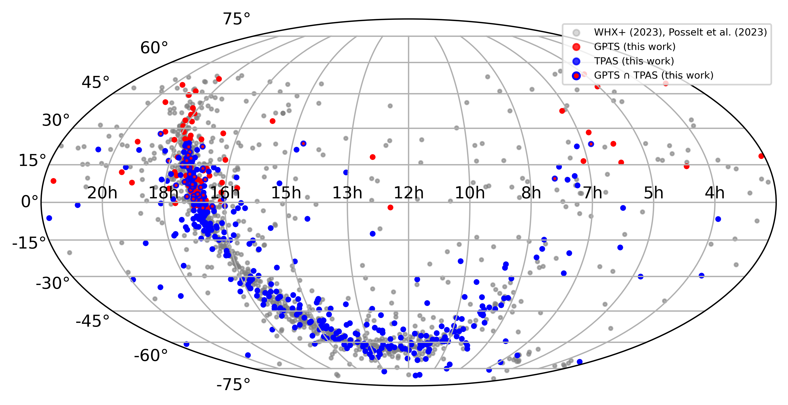

PSR — Pulsar name (J2000 designation); P (s) — Spin period in seconds; Ṗ (s/s) — Period derivative; Telescope — Observation telescope (MeerKAT / FAST / etc.); Freq(MHz) — Observing frequency band (MHz); α₀ (°) — Magnetic inclination angle; β₀ (°) — Impact angle; φ₀ (°) — Phase of steepest gradient; ψ₀ (°) — Reference position angle; χ² — Reduced chi-squared; K — Maximum slope of the RVM curve at φ₀ (steepest gradient); W10 (°) — Pulse width at 10% peak; W10_center — Central phase of W10; L/I(%) — Fractional linear polarization; V/I(%) — Fractional circular polarizatio 📄 2σ RVM — RVM curves within the 2σ confidence interval; 🖼 RVM Plot — Pulse profile and PA curve with best-fit RVM.
| PSR | P (s) | Ṗ (s/s) | Telescope | Freq(MHz) | α₀ (°) | β₀ (°) | φ₀ (°) | ψ₀ (°) | χ² | K | W10 (°) | W10_center | L/I (%) | V/I (%) | 📄 2σ RVM | 🖼 RVM Plot |
|---|---|---|---|---|---|---|---|---|---|---|---|---|---|---|---|---|
| J0045-7042 | 0.632336 | 2.49e-15 | MeerKAT | 856-1712 | 104.5 +60.2 -74.9 | 3.7 +0.4 -2.7 | 1.3 +1.0 -1.3 | -34.7 +17.3 -15.2 | 1.3 | -15.0 +2.6 -3.3 | 14.1 ± 0.8 | -0.9 | 32.9 ± 2.3 | 1.1 ± 1.9 | 📄 | 🖼 |
| J0134-2937 | 0.136962 | 7.84e-17 | MeerKAT | 856-1712 | 170.6 +6.4 -9.2 | -1.5 +1.0 -1.5 | -26.0 +0.9 -1.2 | -10.8 +2.3 -2.8 | 4.9 | 6.4 +0.1 -0.2 | 31.7 ± 0.1 | -10.7 | 49.8 ± 0.2 | -20.6 ± 0.2 | 📄 | 🖼 |
| J0151-0635 | 1.464665 | 4.43e-16 | MeerKAT | 856-1712 | 110.1 +5.9 -5.4 | -5.7 +0.3 -0.3 | 11.8 +0.1 -0.1 | 36.6 +0.4 -0.3 | 3.7 | 9.5 +0.2 -0.2 | 42.9 ± 1.4 | 11.4 | 36.3 ± 0.2 | 0.2 ± 0.1 | 📄 | 🖼 |
| J0304+1932 | 1.387584 | 1.30e-15 | MeerKAT | 856-1712 | 179.9 +0.4 -5.6 | 0.0 +0.3 -0.0 | -3.7 +0.0 -0.0 | -2.5 +0.1 -0.1 | 31.2 | -18.4 +0.0 -0.0 | 25.0 ± 1.4 | -4.2 | 36.6 ± 0.0 | 12.5 ± 0.0 | 📄 | 🖼 |
| J0343-3000 | 2.597027 | 3.91e-17 | MeerKAT | 856-1712 | 166.5 +10.0 -17.7 | -3.5 +2.6 -4.4 | 9.4 +1.1 -0.8 | 76.0 +2.9 -2.1 | 2.3 | 3.8 +0.1 -0.1 | 46.1 ± 2.5 | 2.5 | 16.9 ± 0.3 | 0.1 ± 0.2 | 📄 | 🖼 |
| J0452-1759 | 0.548939 | 5.75e-15 | MeerKAT | 856-1712 | 73.5 +2.6 -2.4 | -9.3 +0.1 -0.1 | -3.3 +0.0 -0.0 | -12.5 +0.1 -0.1 | 66.7 | 5.9 +0.0 -0.0 | 46.5 ± 0.5 | -3.7 | 18.2 ± 0.0 | -0.2 ± 0.0 | 📄 | 🖼 |
| J0459-0210 | 1.133077 | 1.40e-15 | MeerKAT | 856-1712 | 40.6 +10.8 -14.6 | 2.1 +0.5 -0.7 | -14.0 +0.9 -1.2 | 110.6 +13.3 -4.4 | 8.1 | -17.5 +1.1 -1.2 | 15.8 ± 1.1 | -4.2 | 18.0 ± 0.2 | -6.5 ± 0.2 | 📄 | 🖼 |
| J0534-6703 | 1.817565 | 4.25e-13 | MeerKAT | 856-1712 | 87.2 +72.4 -60.9 | -7.2 +4.9 -0.7 | -1.7 +4.2 -3.6 | -55.2 +35.3 -40.4 | 1.4 | 7.9 +1.4 -1.6 | 7.4 ± 1.8 | -0.7 | 25.6 ± 1.5 | -0.9 ± 1.2 | 📄 | 🖼 |
| J0536-7543 | 1.245856 | 5.75e-16 | MeerKAT | 856-1712 | 142.5 +1.2 -1.1 | 2.2 +0.1 -0.1 | -10.6 +0.0 -0.0 | 16.8 +0.0 -0.1 | 119.6 | -15.5 +0.0 -0.0 | 41.2 ± 1.2 | -10.2 | 51.2 ± 0.0 | -11.5 ± 0.0 | 📄 | 🖼 |
| J0543+2329 | 0.245975 | 1.54e-14 | MeerKAT | 856-1712 | 31.1 +0.7 -0.6 | 8.4 +0.2 -0.2 | 19.6 +0.3 -0.2 | -74.2 +1.0 -1.2 | 3.6 | -3.5 +0.0 -0.0 | 61.6 ± 0.2 | 6.7 | 52.6 ± 0.0 | -11.2 ± 0.0 | 📄 | 🖼 |
| J0555-7056 | 0.827838 | 5.96e-15 | MeerKAT | 856-1712 | 94.5 +65.8 -66.4 | -6.5 +4.5 -0.5 | 7.3 +2.1 -2.5 | 33.5 +13.6 -15.1 | 1.7 | 8.7 +1.5 -1.6 | 15.1 ± 0.9 | 4.6 | 24.3 ± 2.1 | -4.9 ± 1.6 | 📄 | 🖼 |
| J0614+2229 | 0.334960 | 5.94e-14 | MeerKAT | 856-1712 | 8.7 +7.4 -6.2 | -0.8 +0.6 -0.7 | 7.6 +0.0 -0.1 | 106.4 +0.5 -0.8 | 3.0 | 11.0 +0.0 -0.0 | 22.9 ± 0.3 | -0.7 | 76.6 ± 0.1 | 16.3 ± 0.1 | 📄 | 🖼 |
| J0627+0649 | 0.346523 | 1.70e-15 | MeerKAT | 856-1712 | 39.2 +15.7 -18.9 | 13.3 +4.3 -6.2 | 11.6 +6.0 -0.9 | -10.6 +2.6 -18.4 | 1.1 | -2.8 +0.1 -0.1 | 21.8 ± 0.3 | 5.1 | 79.0 ± 0.3 | -2.4 ± 0.2 | 📄 | 🖼 |
| J0630-2834 | 1.244427 | 7.12e-15 | MeerKAT | 856-1712 | 137.0 +0.6 -0.6 | 9.6 +0.1 -0.1 | -0.3 +0.0 -0.0 | -13.4 +0.0 -0.0 | 300.1 | -4.1 +0.0 -0.0 | 139.7 ± 1.2 | 29.9 | 52.4 ± 0.0 | -5.1 ± 0.0 | 📄 | 🖼 |
| J0631+1036 | 0.287841 | 1.03e-13 | MeerKAT | 856-1712 | 6.3 +16.9 -3.4 | 0.9 +2.3 -0.5 | 11.9 +0.2 -0.1 | 25.3 +0.8 -1.4 | 1.3 | -7.1 +0.2 -0.1 | 29.6 ± 0.3 | 2.3 | 92.4 ± 0.6 | 7.3 ± 0.4 | 📄 | 🖼 |
| J0633-2015 | 3.253211 | 3.82e-15 | MeerKAT | 856-1712 | 68.1 +60.5 -53.2 | -0.9 +0.6 -0.1 | -2.0 +0.0 -0.0 | 73.7 +1.0 -0.9 | 4.9 | 59.5 +2.4 -2.6 | 8.8 ± 3.2 | -2.8 | 42.9 ± 0.6 | 11.3 ± 0.4 | 📄 | 🖼 |
| J0646+0905 | 0.903913 | 7.36e-16 | MeerKAT | 856-1712 | 9.9 +10.0 -7.9 | 1.6 +1.6 -1.3 | -5.0 +0.1 -0.1 | 62.1 +1.2 -1.1 | 4.0 | -6.2 +0.1 -0.0 | 32.0 ± 0.9 | 3.9 | 36.8 ± 0.1 | -4.1 ± 0.1 | 📄 | 🖼 |
| J0659+1414 | 0.384929 | 5.49e-14 | MeerKAT | 856-1712 | 40.3 +3.8 -4.0 | 12.3 +1.0 -1.1 | 14.3 +2.1 -1.0 | -0.2 +3.7 -7.9 | 1.4 | -3.0 +0.0 -0.0 | 51.7 ± 0.4 | 1.8 | 83.5 ± 0.3 | -14.0 ± 0.2 | 📄 | 🖼 |
| J0709-5923 | 0.485268 | 1.26e-16 | MeerKAT | 856-1712 | 84.3 +68.0 -66.3 | 6.0 +0.2 -4.2 | -1.6 +1.9 -1.5 | 11.7 +16.6 -16.6 | 1.4 | -9.5 +0.9 -0.8 | 8.8 ± 0.5 | 0.0 | 16.9 ± 0.6 | -3.0 ± 0.5 | 📄 | 🖼 |
| J0711+0931 | 1.214090 | 4.00e-16 | MeerKAT | 856-1712 | 101.6 +63.2 -74.2 | -8.2 +6.1 -0.5 | -1.0 +1.7 -1.8 | -9.7 +11.3 -12.5 | 1.0 | 6.9 +0.8 -0.9 | 13.7 ± 1.2 | -1.1 | 34.7 ± 0.7 | -8.9 ± 0.6 | 📄 | 🖼 |
| J0729-1448 | 0.251709 | 1.13e-13 | MeerKAT | 856-1712 | 55.1 +7.0 -7.8 | -4.3 +0.4 -0.3 | 4.6 +0.1 -0.3 | 71.8 +1.7 -4.1 | 1.2 | 11.1 +0.3 -0.3 | 25.7 ± 0.3 | -5.6 | 94.7 ± 0.8 | 11.9 ± 0.5 | 📄 | 🖼 |
| J0729-1836 | 0.510176 | 1.90e-14 | MeerKAT | 856-1712 | 108.8 +22.7 -18.2 | -6.6 +1.4 -0.4 | 7.0 +0.2 -0.2 | 37.9 +1.3 -1.1 | 13.0 | 8.3 +0.1 -0.1 | 26.0 ± 0.5 | 6.2 | 26.4 ± 0.1 | -8.6 ± 0.1 | 📄 | 🖼 |
| J0737-2202 | 0.320370 | 5.47e-15 | MeerKAT | 856-1712 | 134.2 +36.1 -58.9 | -10.6 +8.1 -5.0 | 6.7 +4.7 -2.0 | 92.5 +15.6 -6.4 | 1.6 | 3.9 +0.4 -0.4 | 28.2 ± 0.4 | 1.6 | 63.4 ± 2.3 | -4.0 ± 1.6 | 📄 | 🖼 |
| J0812-3905 | 0.482596 | 4.49e-17 | MeerKAT | 856-1712 | 73.0 +46.7 -51.4 | -9.7 +5.8 -0.7 | -4.1 +1.4 -1.3 | 15.9 +6.8 -6.3 | 1.8 | 5.7 +0.6 -0.5 | 34.8 ± 0.5 | -7.7 | 24.5 ± 0.7 | -2.6 ± 0.5 | 📄 | 🖼 |
| J0818-3049 | 0.763742 | 5.80e-16 | MeerKAT | 856-1712 | 93.3 +60.5 -62.7 | -29.3 +18.5 -2.2 | -12.4 +29.4 -13.2 | -70.6 +52.4 -36.9 | 1.5 | 2.0 +0.4 -0.3 | 39.8 ± 0.8 | -1.1 | 14.2 ± 0.7 | -5.5 ± 0.5 | 📄 | 🖼 |
| J0820-3921 | 1.073567 | 1.22e-14 | MeerKAT | 856-1712 | 104.8 +58.6 -63.9 | 26.5 +2.0 -19.0 | 7.7 +12.9 -10.1 | -15.6 +21.9 -31.1 | 1.2 | -2.2 +0.2 -0.2 | 40.8 ± 1.1 | -1.6 | 32.9 ± 0.5 | -3.0 ± 0.4 | 📄 | 🖼 |
| J0821-4221 | 0.396730 | 3.48e-15 | MeerKAT | 856-1712 | 87.6 +25.3 -24.9 | 2.3 +0.1 -0.3 | 8.2 +0.2 -0.2 | 9.8 +1.3 -1.3 | 0.9 | -25.3 +2.0 -2.0 | 24.6 ± 0.4 | 6.9 | 35.4 ± 0.8 | 2.3 ± 0.6 | 📄 | 🖼 |
| J0831-4406 | 0.311674 | 1.28e-15 | MeerKAT | 856-1712 | 88.6 +65.1 -65.4 | 8.7 +0.3 -5.5 | -2.5 +2.3 -2.2 | 16.0 +16.3 -13.8 | 0.9 | -6.6 +0.8 -0.7 | 25.3 ± 0.3 | -2.6 | 11.9 ± 0.5 | 2.6 ± 0.4 | 📄 | 🖼 |
| J0837-2454 | 0.629410 | 3.49e-13 | MeerKAT | 856-1712 | 172.3 +5.3 -19.4 | -1.5 +1.0 -3.7 | 12.9 +0.5 -0.6 | -66.8 +2.2 -2.4 | 4.1 | 5.1 +0.1 -0.2 | 30.6 ± 0.6 | 4.2 | 90.8 ± 0.9 | 15.6 ± 0.6 | 📄 | 🖼 |
| J0838-2621 | 0.308581 | 3.93e-17 | MeerKAT | 856-1712 | 43.0 +45.3 -32.9 | -11.3 +8.4 -4.7 | 12.1 +4.4 -5.8 | 44.5 +14.4 -16.5 | 1.7 | 3.5 +0.5 -0.3 | 41.5 ± 0.3 | 4.0 | 22.1 ± 1.1 | -5.5 ± 0.8 | 📄 | 🖼 |
| J0843-5022 | 0.208956 | 1.72e-16 | MeerKAT | 856-1712 | 82.6 +70.5 -61.9 | -10.6 +6.9 -0.6 | 3.0 +2.9 -3.7 | 81.5 +14.5 -18.0 | 1.9 | 5.4 +0.9 -0.7 | 23.9 ± 0.2 | -3.7 | 16.3 ± 0.9 | 8.3 ± 0.7 | 📄 | 🖼 |
| J0847-4316 | 5.977493 | 1.20e-13 | MeerKAT | 856-1712 | 108.0 +57.3 -69.8 | -1.4 +1.0 -0.1 | 1.8 +0.1 -0.1 | 10.3 +2.9 -3.1 | 13.5 | 40.2 +1.1 -2.0 | 11.6 ± 5.8 | 1.1 | 17.8 ± 0.5 | -1.1 ± 0.4 | 📄 | 🖼 |
| J0849-6322 | 0.367954 | 7.91e-16 | MeerKAT | 856-1712 | 12.0 +28.7 -8.0 | 1.2 +2.8 -0.8 | 0.1 +0.3 -0.3 | -7.3 +3.0 -2.4 | 2.4 | -9.6 +0.7 -0.6 | 30.3 ± 0.4 | 4.8 | 34.8 ± 0.6 | -8.9 ± 0.5 | 📄 | 🖼 |
| J0855-4644 | 0.064686 | 7.26e-15 | MeerKAT | 856-1712 | 93.3 +68.3 -69.2 | -33.5 +25.0 -6.5 | -1.0 +21.6 -23.0 | -27.1 +40.7 -43.7 | 1.3 | 1.8 +0.6 -0.5 | 26.4 ± 0.1 | 0.4 | 56.6 ± 2.9 | -8.0 ± 2.3 | 📄 | 🖼 |
| J0855-4658 | 0.575072 | 1.36e-14 | MeerKAT | 856-1712 | 22.3 +43.1 -15.3 | 0.9 +1.4 -0.6 | -6.3 +0.6 -1.7 | 61.3 +7.2 -7.5 | 2.1 | -24.9 +3.1 -2.2 | 20.8 ± 0.6 | 4.6 | 28.1 ± 1.0 | 0.8 ± 0.9 | 📄 | 🖼 |
| J0856-6137 | 0.962511 | 1.68e-15 | MeerKAT | 856-1712 | 139.0 +32.5 -39.8 | -5.2 +4.1 -2.8 | -2.3 +0.5 -1.0 | -51.7 +3.8 -7.8 | 2.1 | 7.2 +0.3 -0.3 | 22.5 ± 0.9 | 0.9 | 13.7 ± 0.2 | 4.8 ± 0.1 | 📄 | 🖼 |
| J0857-4424 | 0.326793 | 1.97e-14 | MeerKAT | 856-1712 | 37.1 +61.3 -28.9 | 4.3 +3.1 -3.3 | 4.2 +1.2 -1.0 | 11.5 +6.8 -9.5 | 5.1 | -8.1 +1.5 -1.2 | 24.3 ± 0.3 | 2.5 | 12.3 ± 0.4 | -5.1 ± 0.4 | 📄 | 🖼 |
| J0901-4624 | 0.442058 | 8.74e-14 | MeerKAT | 856-1712 | 37.1 +8.7 -10.0 | 1.6 +0.3 -0.4 | -4.0 +0.1 -0.1 | -39.9 +0.8 -0.9 | 2.1 | -20.9 +0.5 -0.6 | 33.1 ± 0.4 | -10.0 | 77.2 ± 0.9 | -36.3 ± 0.6 | 📄 | 🖼 |
| J0904-4246 | 0.965174 | 1.88e-15 | MeerKAT | 856-1712 | 6.2 +17.9 -4.3 | 0.2 +0.5 -0.1 | 3.5 +0.0 -0.0 | -13.9 +0.5 -0.5 | 7.5 | -34.8 +0.7 -0.6 | 13.7 ± 0.9 | 3.5 | 26.6 ± 0.2 | 0.4 ± 0.2 | 📄 | 🖼 |
| J0904-7459 | 0.549554 | 4.62e-16 | MeerKAT | 856-1712 | 64.6 +0.7 -0.3 | -6.2 +0.0 -0.1 | 4.7 +0.1 -0.1 | -4.7 +0.7 -0.6 | 3.6 | 8.3 +0.1 -0.1 | 58.4 ± 0.5 | 14.3 | 31.3 ± 0.2 | 2.1 ± 0.2 | 📄 | 🖼 |
| J0905-4536 | 0.988281 | 1.50e-16 | MeerKAT | 856-1712 | 165.2 +9.7 -11.5 | 3.0 +2.2 -2.0 | 26.9 +0.2 -0.3 | 49.4 +0.7 -0.6 | 4.3 | -4.8 +0.1 -0.1 | 77.1 ± 1.0 | 23.9 | 37.4 ± 0.3 | 1.9 ± 0.2 | 📄 | 🖼 |
| J0905-6019 | 0.340854 | 5.22e-16 | MeerKAT | 856-1712 | 89.6 +64.7 -70.5 | 3.8 +0.4 -2.7 | 1.7 +1.1 -1.6 | -16.1 +21.8 -14.7 | 2.9 | -15.0 +3.6 -5.5 | 17.9 ± 0.3 | 0.4 | 6.9 ± 0.7 | 3.6 ± 0.5 | 📄 | 🖼 |
| J0907-5157 | 0.253558 | 1.83e-15 | MeerKAT | 856-1712 | 168.0 +1.7 -1.4 | -3.1 +0.4 -0.4 | -29.6 +0.1 -0.2 | 24.4 +0.4 -0.9 | 3.3 | 3.8 +0.0 -0.0 | 90.1 ± 0.2 | -30.8 | 36.6 ± 0.0 | 3.1 ± 0.0 | 📄 | 🖼 |
| J0909-7212 | 1.362890 | 3.27e-16 | MeerKAT | 856-1712 | 111.8 +8.7 -9.1 | 9.5 +0.3 -0.6 | 12.7 +0.6 -0.6 | -27.4 +3.1 -3.2 | 34.8 | -5.6 +0.1 -0.1 | 30.6 ± 1.3 | 6.3 | 30.7 ± 0.2 | 8.5 ± 0.1 | 📄 | 🖼 |
| J0912-3851 | 1.526085 | 3.59e-15 | MeerKAT | 856-1712 | 142.3 +30.0 -43.5 | 1.1 +0.6 -0.8 | 2.9 +0.2 -0.2 | 10.7 +1.9 -2.0 | 4.2 | -32.6 +2.5 -3.2 | 10.9 ± 1.5 | 3.9 | 27.0 ± 0.8 | -1.0 ± 0.6 | 📄 | 🖼 |
| J0922+0638 | 0.430632 | 1.37e-14 | MeerKAT | 856-1712 | 179.9 +0.7 -8.2 | -0.0 +0.1 -0.8 | 3.5 +0.0 -0.0 | 83.4 +0.3 -0.2 | 367.4 | 10.8 +0.0 -0.0 | 31.0 ± 0.4 | -4.0 | 55.2 ± 0.0 | 8.6 ± 0.0 | 📄 | 🖼 |
| J0924-5814 | 0.739505 | 4.92e-15 | MeerKAT | 856-1712 | 40.5 +4.0 -3.4 | 18.3 +1.6 -1.4 | 1.8 +0.2 -0.3 | -10.2 +0.5 -0.5 | 1.4 | -2.1 +0.0 -0.0 | 74.6 ± 0.7 | -0.2 | 52.9 ± 0.1 | -3.9 ± 0.0 | 📄 | 🖼 |
| J0932-3217 | 1.931627 | 2.50e-16 | MeerKAT | 856-1712 | 91.7 +63.0 -65.2 | -1.2 +0.7 -0.0 | -0.3 +0.1 -0.1 | 33.4 +3.7 -3.5 | 5.8 | 49.5 +5.6 -5.9 | 9.9 ± 1.9 | 0.2 | 14.1 ± 0.8 | 1.1 ± 0.6 | 📄 | 🖼 |
| J0932-5327 | 4.392159 | 8.37e-15 | MeerKAT | 856-1712 | 73.0 +57.6 -49.1 | -0.4 +0.2 -0.0 | 2.2 +0.1 -0.1 | 38.2 +0.9 -1.2 | 4.2 | 135.4 +11.2 -11.1 | 7.4 ± 4.3 | 2.1 | 31.2 ± 0.9 | 4.3 ± 0.6 | 📄 | 🖼 |
| J0940-5428 | 0.087569 | 3.29e-14 | MeerKAT | 856-1712 | 109.9 +28.4 -40.1 | -17.2 +5.7 -2.3 | -0.4 +2.8 -1.6 | 13.5 +8.2 -4.4 | 1.2 | 3.2 +0.4 -0.3 | 39.4 ± 0.1 | -6.2 | 63.7 ± 1.3 | 1.2 ± 1.0 | 📄 | 🖼 |
| J0942-5657 | 0.808171 | 3.96e-14 | MeerKAT | 856-1712 | 27.2 +33.9 -21.0 | -1.5 +1.1 -1.4 | -0.4 +0.1 -0.1 | -25.6 +1.6 -1.6 | 12.2 | 17.6 +0.4 -0.4 | 9.9 ± 0.8 | -0.9 | 41.4 ± 0.2 | 11.0 ± 0.2 | 📄 | 🖼 |
| J0945-4833 | 0.331586 | 4.83e-15 | MeerKAT | 856-1712 | 95.1 +26.2 -26.2 | 1.4 +0.1 -0.2 | 7.1 +5.2 -0.7 | -18.4 +30.9 -5.6 | 1.0 | -41.4 +5.2 -6.3 | 14.1 ± 0.3 | 0.9 | 51.8 ± 1.1 | -14.1 ± 0.8 | 📄 | 🖼 |
| J0952-3839 | 1.373816 | 5.77e-16 | MeerKAT | 856-1712 | 145.4 +23.6 -27.8 | -9.6 +6.4 -6.0 | -10.5 +1.7 -5.3 | -6.0 +6.9 -24.8 | 1.9 | 3.4 +0.2 -0.2 | 28.2 ± 1.3 | 0.2 | 25.5 ± 0.4 | -2.4 ± 0.3 | 📄 | 🖼 |
| J0954-5430 | 0.472866 | 4.39e-14 | MeerKAT | 856-1712 | 116.2 +34.0 -28.9 | -3.3 +1.5 -0.4 | -0.8 +0.1 -0.1 | 15.0 +0.7 -1.1 | 1.2 | 15.4 +0.5 -0.4 | 16.9 ± 0.5 | -0.2 | 56.2 ± 0.5 | 11.4 ± 0.4 | 📄 | 🖼 |
| J0957-5432 | 0.203557 | 1.95e-15 | MeerKAT | 856-1712 | 92.1 +67.4 -67.9 | -3.1 +2.0 -0.2 | 0.8 +0.5 -0.6 | 37.4 +9.9 -9.6 | 0.5 | 18.6 +3.2 -2.5 | 10.9 ± 0.2 | -0.7 | 26.0 ± 1.1 | 8.4 ± 0.8 | 📄 | 🖼 |
| J0959-4809 | 0.670086 | 8.52e-17 | MeerKAT | 856-1712 | 120.8 +4.1 -4.4 | -10.7 +0.6 -0.6 | -21.0 +0.2 -0.1 | 34.0 +0.4 -0.4 | 1.6 | 4.6 +0.1 -0.1 | 75.0 ± 0.7 | -20.4 | 39.8 ± 0.2 | -8.2 ± 0.1 | 📄 | 🖼 |
| J1000-5149 | 0.255677 | 9.59e-16 | MeerKAT | 856-1712 | 97.4 +54.5 -51.0 | 17.8 +0.3 -9.4 | 5.6 +4.6 -5.6 | -28.8 +17.4 -18.8 | 1.0 | -3.2 +0.1 -0.1 | 16.9 ± 0.3 | -3.0 | 59.6 ± 0.5 | -6.2 ± 0.4 | 📄 | 🖼 |
| J1001-5939 | 7.733640 | 5.99e-14 | MeerKAT | 856-1712 | 29.7 +29.1 -23.8 | 1.5 +1.1 -1.2 | -3.2 +0.1 -0.1 | 40.0 +2.1 -2.1 | 20.5 | -18.7 +0.4 -0.3 | 7.4 ± 7.6 | -2.5 | 34.1 ± 0.3 | 1.1 ± 0.2 | 📄 | 🖼 |
| J1002-5919 | 0.713489 | 1.04e-16 | MeerKAT | 856-1712 | 74.9 +37.0 -35.1 | 7.8 +0.9 -2.9 | 17.5 +1.4 -1.0 | -74.9 +5.5 -7.8 | 2.6 | -7.1 +0.9 -1.4 | 31.3 ± 0.8 | 11.3 | 33.7 ± 1.3 | 7.3 ± 1.0 | 📄 | 🖼 |
| J1012-2337 | 2.517945 | 8.81e-16 | MeerKAT | 856-1712 | 90.2 +67.5 -67.0 | 6.5 +1.0 -4.2 | 1.5 +3.2 -4.1 | -30.9 +39.7 -33.5 | 0.7 | -8.9 +3.0 -2.7 | 13.0 ± 2.5 | -1.1 | 13.1 ± 0.9 | -0.9 ± 0.8 | 📄 | 🖼 |
| J1013-5934 | 0.442901 | 5.56e-16 | MeerKAT | 856-1712 | 120.9 +7.6 -6.9 | -7.3 +0.7 -0.5 | -8.4 +0.1 -0.1 | -5.4 +0.5 -0.5 | 1.4 | 6.8 +0.1 -0.1 | 43.3 ± 0.4 | -9.5 | 47.2 ± 0.2 | -5.3 ± 0.2 | 📄 | 🖼 |
| J1015-5719 | 0.139920 | 5.74e-14 | MeerKAT | 856-1712 | 126.5 +15.8 -19.4 | -29.3 +8.3 -8.6 | -8.3 +8.0 -20.7 | -54.1 +12.9 -39.8 | 0.3 | 1.6 +0.1 -0.1 | 51.4 ± 0.1 | 19.2 | 76.9 ± 0.6 | -19.4 ± 0.5 | 📄 | 🖼 |
| J1016-5345 | 0.769586 | 1.93e-15 | MeerKAT | 856-1712 | 110.8 +51.7 -61.0 | -4.2 +2.9 -0.3 | 0.6 +0.5 -0.4 | 89.5 +7.8 -5.3 | 2.8 | 12.7 +0.3 -0.5 | 12.7 ± 0.8 | -0.9 | 19.5 ± 0.2 | 3.9 ± 0.1 | 📄 | 🖼 |
| J1016-5857 | 0.107386 | 8.08e-14 | MeerKAT | 856-1712 | 10.0 +29.1 -6.8 | 2.4 +6.6 -1.6 | 8.6 +1.8 -2.0 | 57.2 +4.5 -4.1 | 2.0 | -4.2 +0.5 -0.4 | 35.5 ± 0.1 | 9.5 | 63.0 ± 2.4 | 0.6 ± 1.8 | 📄 | 🖼 |
| J1020-5921 | 1.238305 | 4.05e-14 | MeerKAT | 856-1712 | 94.4 +64.7 -68.6 | -6.3 +4.1 -0.2 | 0.5 +1.2 -0.9 | 21.2 +10.4 -7.8 | 1.9 | 9.1 +0.6 -0.8 | 14.1 ± 1.2 | 0.2 | 20.9 ± 0.3 | 1.5 ± 0.3 | 📄 | 🖼 |
| J1032-5206 | 2.407622 | 1.79e-14 | MeerKAT | 856-1712 | 40.5 +33.5 -30.0 | -1.1 +0.8 -0.5 | 2.2 +0.0 -0.0 | 30.2 +0.8 -0.8 | 10.0 | 32.5 +0.7 -0.9 | 15.8 ± 2.4 | 1.8 | 31.2 ± 0.5 | 1.0 ± 0.4 | 📄 | 🖼 |
| J1038-5831 | 0.661993 | 1.26e-15 | MeerKAT | 856-1712 | 41.2 +29.2 -30.2 | -2.1 +1.5 -0.9 | -3.6 +0.1 -0.1 | 10.3 +0.9 -0.8 | 1.3 | 17.6 +0.3 -0.4 | 15.1 ± 0.6 | -3.5 | 35.4 ± 0.2 | -8.9 ± 0.2 | 📄 | 🖼 |
| J1041-1942 | 1.386369 | 9.45e-16 | MeerKAT | 856-1712 | 104.4 +1.9 -2.0 | 2.9 +0.0 -0.0 | 6.9 +0.0 -0.0 | -13.5 +0.1 -0.1 | 611.2 | -19.0 +0.1 -0.1 | 21.5 ± 1.4 | 6.3 | 33.3 ± 0.0 | 7.1 ± 0.0 | 📄 | 🖼 |
| J1042-5521 | 1.170868 | 6.72e-15 | MeerKAT | 856-1712 | 153.9 +20.4 -24.2 | -1.8 +1.4 -1.4 | 1.7 +0.1 -0.1 | 28.6 +1.7 -1.4 | 5.3 | 13.8 +0.2 -0.2 | 16.5 ± 1.1 | -2.1 | 18.8 ± 0.1 | 2.5 ± 0.1 | 📄 | 🖼 |
| J1048-5832 | 0.123740 | 9.61e-14 | MeerKAT | 856-1712 | 179.8 +0.2 -4.1 | -0.0 +0.0 -0.7 | 1.9 +0.0 -0.0 | 10.4 +0.1 -0.1 | 38.5 | 5.7 +0.0 -0.0 | 43.6 ± 0.1 | 0.2 | 70.4 ± 0.1 | 4.5 ± 0.0 | 📄 | 🖼 |
| J1049-5833 | 2.202328 | 4.37e-15 | MeerKAT | 856-1712 | 82.6 +66.6 -63.0 | -7.5 +5.0 -0.2 | 1.0 +0.9 -0.7 | 39.9 +7.0 -5.3 | 3.7 | 7.6 +0.3 -0.3 | 13.0 ± 2.2 | 0.4 | 27.7 ± 0.2 | -7.5 ± 0.2 | 📄 | 🖼 |
| J1052-6348 | 0.383830 | 3.87e-16 | MeerKAT | 856-1712 | 83.2 +72.1 -65.0 | 21.9 +1.9 -15.5 | -5.2 +16.4 -11.5 | -49.1 +46.2 -44.5 | 1.8 | -2.7 +0.6 -0.5 | 15.1 ± 0.4 | 0.7 | 68.7 ± 2.7 | -6.4 ± 1.9 | 📄 | 🖼 |
| J1054-6452 | 1.840004 | 3.14e-15 | MeerKAT | 856-1712 | 87.5 +49.2 -48.0 | 4.3 +0.1 -1.7 | -4.6 +0.7 -0.4 | 48.1 +9.5 -14.2 | 4.4 | -13.4 +0.6 -0.6 | 9.9 ± 1.8 | -0.5 | 28.1 ± 0.4 | -6.9 ± 0.3 | 📄 | 🖼 |
| J1055-6028 | 0.099661 | 2.95e-14 | MeerKAT | 856-1712 | 47.1 +99.8 -35.7 | 18.0 +10.5 -13.5 | 5.6 +11.9 -13.0 | -23.9 +29.3 -25.6 | 0.9 | -2.4 +0.5 -0.5 | 32.4 ± 0.1 | 3.3 | 21.2 ± 1.1 | 3.1 ± 0.9 | 📄 | 🖼 |
| J1055-6905 | 2.919397 | 2.03e-14 | MeerKAT | 856-1712 | 76.5 +69.7 -59.7 | 3.7 +0.2 -2.6 | -0.3 +0.4 -0.4 | 74.2 +5.8 -5.9 | 2.0 | -14.9 +1.4 -1.2 | 13.0 ± 2.9 | 1.1 | 14.2 ± 0.4 | 3.3 ± 0.3 | 📄 | 🖼 |
| J1057-7914 | 1.347404 | 1.33e-15 | MeerKAT | 856-1712 | 65.8 +56.6 -48.6 | -8.5 +5.8 -0.9 | -1.6 +0.7 -0.7 | 19.8 +4.4 -4.6 | 1.9 | 6.1 +0.1 -0.2 | 23.2 ± 1.3 | -1.9 | 22.0 ± 0.2 | 1.2 ± 0.1 | 📄 | 🖼 |
| J1103-6025 | 0.396587 | 9.90e-16 | MeerKAT | 856-1712 | 89.8 +68.3 -68.7 | -12.9 +8.7 -3.6 | -1.0 +7.8 -7.7 | 10.7 +47.4 -43.4 | 0.9 | 4.5 +2.1 -1.9 | 8.8 ± 0.4 | 0.4 | 30.7 ± 1.1 | 4.8 ± 0.9 | 📄 | 🖼 |
| J1104-6103 | 0.280905 | 1.97e-15 | MeerKAT | 856-1712 | 96.1 +59.7 -65.0 | -12.7 +7.6 -0.4 | 3.0 +3.0 -2.4 | -19.0 +14.9 -10.3 | 1.0 | 4.5 +0.2 -0.3 | 23.2 ± 0.3 | -1.2 | 61.4 ± 0.8 | 6.6 ± 0.7 | 📄 | 🖼 |
| J1105-6107 | 0.063202 | 1.58e-14 | MeerKAT | 856-1712 | 125.5 +5.1 -4.8 | -3.4 +0.3 -0.2 | 16.3 +0.3 -0.2 | 49.5 +4.1 -3.1 | 1.4 | 13.5 +0.5 -0.4 | 23.9 ± 0.1 | 8.3 | 96.0 ± 1.0 | 6.0 ± 0.7 | 📄 | 🖼 |
| J1110-5637 | 0.558254 | 2.06e-15 | MeerKAT | 856-1712 | 157.1 +16.1 -11.3 | -2.6 +1.8 -1.2 | -3.2 +0.1 -0.1 | -21.8 +0.8 -0.5 | 3.6 | 8.4 +0.1 -0.1 | 27.4 ± 0.5 | -4.8 | 28.4 ± 0.1 | -7.9 ± 0.1 | 📄 | 🖼 |
| J1114-6100 | 0.880865 | 4.60e-14 | MeerKAT | 856-1712 | 6.3 +7.4 -5.1 | 1.3 +1.5 -1.0 | 1.1 +0.3 -0.3 | 31.4 +1.2 -1.0 | 4.1 | -5.0 +0.1 -0.1 | 44.3 ± 0.9 | 7.6 | 17.2 ± 0.1 | -1.3 ± 0.1 | 📄 | 🖼 |
| J1115-6052 | 0.259782 | 7.23e-15 | MeerKAT | 856-1712 | 76.2 +62.5 -53.8 | 16.6 +1.0 -10.5 | 7.0 +5.1 -10.8 | 10.0 +32.4 -33.8 | 1.3 | -3.4 +0.3 -0.3 | 12.7 ± 0.3 | -2.6 | 71.4 ± 1.4 | 1.3 ± 1.0 | 📄 | 🖼 |
| J1116-4122 | 0.943165 | 7.97e-15 | MeerKAT | 856-1712 | 145.1 +28.2 -30.7 | 2.5 +1.4 -2.0 | -2.1 +0.2 -0.2 | -27.5 +2.3 -2.7 | 64.0 | -13.3 +0.3 -0.3 | 16.2 ± 0.9 | -1.6 | 9.6 ± 0.1 | -1.0 ± 0.1 | 📄 | 🖼 |
| J1117-6154 | 0.505106 | 1.25e-14 | MeerKAT | 856-1712 | 45.1 +29.7 -28.5 | 2.7 +1.1 -1.6 | -4.9 +0.1 -0.1 | 48.3 +1.3 -1.3 | 5.3 | -14.9 +0.7 -0.8 | 23.2 ± 0.5 | -5.5 | 23.9 ± 0.4 | 4.1 ± 0.3 | 📄 | 🖼 |
| J1119-7936 | 2.280602 | 3.68e-15 | MeerKAT | 856-1712 | 163.3 +13.4 -17.6 | -0.8 +0.6 -0.8 | 2.6 +0.1 -0.0 | 7.6 +0.7 -0.7 | 14.3 | 20.5 +0.2 -0.2 | 9.5 ± 2.2 | 2.1 | 32.5 ± 0.1 | -6.2 ± 0.1 | 📄 | 🖼 |
| J1123-6102 | 0.640238 | 6.45e-15 | MeerKAT | 856-1712 | 165.6 +10.2 -26.1 | -0.8 +0.6 -1.3 | 4.5 +0.2 -0.1 | 15.1 +1.4 -1.3 | 1.7 | 17.7 +0.6 -0.6 | 19.4 ± 0.6 | 2.5 | 31.4 ± 0.4 | 17.0 ± 0.3 | 📄 | 🖼 |
| J1123-6259 | 0.271438 | 5.25e-15 | MeerKAT | 856-1712 | 78.7 +72.0 -62.6 | 19.5 +1.4 -14.3 | 0.4 +6.3 -6.2 | -11.6 +19.5 -17.9 | 1.0 | -2.9 +0.4 -0.5 | 19.4 ± 0.3 | 2.5 | 54.8 ± 1.0 | -3.1 ± 0.8 | 📄 | 🖼 |
| J1124-5638 | 0.185560 | 9.00e-18 | MeerKAT | 856-1712 | 91.8 +65.7 -69.0 | -19.6 +12.8 -1.6 | -14.9 +11.9 -10.3 | -46.5 +34.5 -35.5 | 1.9 | 3.0 +0.6 -0.5 | 29.6 ± 0.2 | -9.7 | 25.6 ± 1.4 | -10.2 ± 1.1 | 📄 | 🖼 |
| J1126-6942 | 0.579419 | 3.29e-15 | MeerKAT | 856-1712 | 99.1 +6.6 -7.8 | 10.1 +0.4 -0.4 | 1.2 +1.2 -0.6 | -0.9 +3.5 -6.3 | 1.7 | -5.6 +0.3 -0.3 | 66.2 ± 0.6 | 22.0 | 14.9 ± 0.3 | 1.1 ± 0.3 | 📄 | 🖼 |
| J1141-3107 | 0.538433 | 2.02e-15 | MeerKAT | 856-1712 | 59.9 +49.4 -44.2 | 13.3 +2.9 -9.4 | -12.1 +2.6 -4.3 | 17.4 +21.3 -9.8 | 1.7 | -3.8 +0.3 -0.3 | 19.7 ± 0.5 | -4.8 | 32.9 ± 0.5 | 12.7 ± 0.4 | 📄 | 🖼 |
| J1141-6545 | 0.393899 | 4.31e-15 | MeerKAT | 856-1712 | 142.0 +29.3 -52.0 | -8.9 +6.7 -5.8 | 3.5 +1.0 -0.9 | 36.1 +3.9 -3.4 | 2.7 | 4.0 +0.1 -0.1 | 27.1 ± 0.4 | -2.1 | 13.3 ± 0.1 | 5.6 ± 0.1 | 📄 | 🖼 |
| J1143-5536 | 0.685358 | 4.85e-16 | MeerKAT | 856-1712 | 63.7 +73.8 -50.3 | -1.4 +1.0 -0.2 | -0.5 +0.2 -0.2 | 9.7 +6.6 -6.2 | 2.2 | 37.4 +5.9 -5.7 | 12.3 ± 0.7 | -1.4 | 9.3 ± 0.5 | -1.9 ± 0.4 | 📄 | 🖼 |
| J1146-6030 | 0.273375 | 1.79e-15 | MeerKAT | 856-1712 | 4.4 +9.4 -3.2 | 0.6 +1.2 -0.4 | -4.1 +0.1 -0.1 | -37.1 +0.4 -0.4 | 13.4 | -7.5 +0.1 -0.1 | 31.7 ± 0.3 | -5.8 | 26.5 ± 0.1 | 3.3 ± 0.1 | 📄 | 🖼 |
| J1148-5725 | 3.559937 | 1.11e-14 | MeerKAT | 856-1712 | 150.2 +22.2 -57.4 | 0.3 +0.3 -0.2 | -0.4 +0.1 -0.1 | -6.8 +4.1 -4.1 | 16.6 | -83.4 +12.9 -14.9 | 9.5 ± 3.5 | -3.2 | 18.3 ± 0.9 | -7.9 ± 0.8 | 📄 | 🖼 |
| J1151-6108 | 0.101633 | 1.03e-14 | MeerKAT | 856-1712 | 137.5 +25.5 -22.7 | -5.7 +3.3 -2.4 | -7.8 +0.8 -0.7 | -31.7 +3.1 -2.4 | 0.9 | 6.8 +0.6 -0.6 | 37.0 ± 0.1 | -12.7 | 58.2 ± 1.6 | 3.7 ± 1.1 | 📄 | 🖼 |
| J1152-6012 | 0.376570 | 6.69e-15 | MeerKAT | 856-1712 | 104.9 +58.9 -69.5 | 11.1 +1.0 -7.9 | 3.6 +4.0 -3.8 | -4.4 +17.2 -20.2 | 1.0 | -5.0 +0.8 -0.8 | 17.9 ± 0.4 | 2.1 | 28.8 ± 1.0 | -3.4 ± 0.8 | 📄 | 🖼 |
| J1159-6409 | 0.667486 | 2.63e-17 | MeerKAT | 856-1712 | 179.4 +0.1 -5.5 | 1.3 +13.0 -0.2 | -129.0 +0.4 -0.5 | 22.0 +0.4 -0.4 | 1.6 | -0.4 +0.0 -0.0 | 135.5 ± 0.7 | 49.3 | 44.6 ± 0.4 | -6.7 ± 0.3 | 📄 | 🖼 |
| J1204-6843 | 0.308861 | 2.17e-16 | MeerKAT | 856-1712 | 97.0 +59.3 -60.2 | 4.5 +0.2 -2.7 | 1.2 +0.7 -1.4 | -14.5 +19.7 -10.8 | 1.7 | -12.6 +1.7 -1.9 | 13.7 ± 0.3 | -3.9 | 16.9 ± 0.6 | -8.2 ± 0.6 | 📄 | 🖼 |
| J1211-6324 | 0.433084 | 2.64e-16 | MeerKAT | 856-1712 | 140.3 +31.0 -60.4 | -4.8 +3.7 -3.0 | 7.5 +1.0 -0.9 | 43.5 +5.9 -5.5 | 2.3 | 7.6 +0.5 -0.7 | 18.3 ± 0.4 | 5.1 | 31.8 ± 0.9 | -7.0 ± 0.7 | 📄 | 🖼 |
| J1215-5328 | 0.636414 | 1.09e-16 | MeerKAT | 856-1712 | 104.8 +9.0 -8.6 | 3.4 +0.1 -0.1 | -1.8 +0.1 -0.1 | 6.2 +1.0 -0.8 | 1.3 | -16.3 +0.7 -0.8 | 32.0 ± 0.6 | -3.2 | 34.9 ± 0.3 | -0.4 ± 0.3 | 📄 | 🖼 |
| J1220-6318 | 0.789212 | 7.76e-17 | MeerKAT | 856-1712 | 75.5 +31.4 -30.3 | 11.3 +0.6 -3.3 | -8.2 +0.5 -0.5 | 46.1 +2.0 -2.0 | 1.2 | -4.9 +0.2 -0.2 | 37.3 ± 0.8 | -9.3 | 44.3 ± 0.5 | 3.0 ± 0.4 | 📄 | 🖼 |
| J1222-5738 | 1.081164 | 1.50e-16 | MeerKAT | 856-1712 | 97.6 +54.9 -60.9 | -2.2 +1.2 -0.1 | -1.9 +0.2 -0.2 | 12.1 +6.1 -5.7 | 3.2 | 26.0 +1.2 -1.6 | 6.7 ± 1.1 | 0.7 | 51.5 ± 1.1 | 55.9 ± 1.0 | 📄 | 🖼 |
| J1224-6208 | 0.585761 | 2.02e-14 | MeerKAT | 856-1712 | 85.8 +68.8 -63.7 | -7.7 +4.8 -0.3 | 3.5 +1.8 -2.6 | -42.1 +15.7 -17.8 | 0.8 | 7.4 +0.7 -0.6 | 11.6 ± 0.6 | 1.8 | 61.5 ± 1.7 | 7.7 ± 1.2 | 📄 | 🖼 |
| J1236-5033 | 0.294760 | 1.55e-16 | MeerKAT | 856-1712 | 91.3 +54.0 -58.5 | -13.2 +6.5 -0.4 | 11.1 +3.1 -2.7 | 48.0 +14.8 -11.2 | 1.3 | 4.4 +0.6 -0.5 | 21.5 ± 0.3 | 6.0 | 23.2 ± 0.6 | -1.3 ± 0.5 | 📄 | 🖼 |
| J1245-6238 | 2.283093 | 1.09e-14 | MeerKAT | 856-1712 | 50.3 +67.3 -39.7 | 1.4 +0.5 -1.1 | -3.0 +0.2 -0.3 | 48.8 +2.2 -2.4 | 2.4 | -31.9 +3.6 -3.7 | 13.0 ± 2.3 | -2.8 | 19.3 ± 0.9 | -2.1 ± 0.8 | 📄 | 🖼 |
| J1253-5820 | 0.255498 | 2.10e-15 | MeerKAT | 856-1712 | 167.9 +9.1 -8.4 | -1.3 +0.9 -0.8 | 6.5 +0.1 -0.0 | 44.8 +0.9 -0.5 | 2.5 | 9.6 +0.0 -0.1 | 26.4 ± 0.2 | -0.4 | 62.1 ± 0.1 | 6.9 ± 0.1 | 📄 | 🖼 |
| J1254-6150 | 0.184502 | 6.24e-16 | MeerKAT | 856-1712 | 98.4 +60.0 -66.4 | 10.9 +0.5 -6.9 | -7.4 +2.7 -2.3 | 37.5 +9.7 -12.2 | 1.3 | -5.2 +0.6 -0.7 | 23.6 ± 0.2 | -7.0 | 61.8 ± 2.6 | -38.2 ± 2.1 | 📄 | 🖼 |
| J1301-6310 | 0.663830 | 5.64e-14 | MeerKAT | 856-1712 | 91.5 +65.8 -67.0 | -5.9 +3.8 -0.3 | 4.3 +1.4 -3.5 | 33.6 +17.1 -29.2 | 0.7 | 9.7 +1.4 -1.3 | 9.5 ± 0.7 | 1.1 | 44.6 ± 2.0 | 18.4 ± 1.7 | 📄 | 🖼 |
| J1305-6203 | 0.427774 | 3.22e-14 | MeerKAT | 856-1712 | 18.5 +29.6 -13.7 | 4.0 +5.7 -2.9 | -6.7 +1.1 -1.3 | 18.7 +6.9 -5.4 | 1.8 | -4.6 +0.3 -0.2 | 28.2 ± 0.4 | 5.1 | 43.8 ± 0.7 | -2.1 ± 0.6 | 📄 | 🖼 |
| J1308-4650 | 1.058833 | 5.26e-16 | MeerKAT | 856-1712 | 151.2 +21.4 -61.8 | -3.5 +2.6 -4.3 | -4.9 +1.2 -1.2 | 23.0 +6.4 -5.9 | 1.2 | 7.8 +0.9 -1.2 | 21.1 ± 1.1 | -6.9 | 31.2 ± 1.3 | -3.8 ± 1.0 | 📄 | 🖼 |
| J1311-1228 | 0.447518 | 1.51e-16 | MeerKAT | 856-1712 | 60.1 +60.6 -47.6 | 6.5 +1.2 -4.9 | -2.3 +1.3 -1.2 | 8.5 +10.6 -9.7 | 2.9 | -7.6 +0.5 -0.5 | 14.1 ± 0.4 | 0.2 | 18.1 ± 0.4 | -3.9 ± 0.4 | 📄 | 🖼 |
| J1312-5402 | 0.728154 | 1.47e-16 | MeerKAT | 856-1712 | 64.0 +40.3 -41.8 | -4.7 +2.7 -0.5 | -1.5 +0.2 -0.2 | 0.3 +1.8 -1.8 | 2.4 | 11.0 +0.3 -0.4 | 22.5 ± 0.7 | -2.3 | 31.0 ± 0.3 | -9.0 ± 0.3 | 📄 | 🖼 |
| J1312-5516 | 0.849243 | 5.70e-15 | MeerKAT | 856-1712 | 76.7 +39.0 -41.9 | -7.8 +3.2 -0.3 | 0.4 +0.3 -0.3 | -27.9 +1.8 -1.8 | 1.4 | 7.2 +0.2 -0.2 | 22.2 ± 0.8 | 1.1 | 22.7 ± 0.1 | -0.3 ± 0.1 | 📄 | 🖼 |
| J1319-6105 | 0.421118 | 1.50e-15 | MeerKAT | 856-1712 | 174.0 +3.8 -21.5 | -1.4 +0.9 -4.9 | -2.0 +0.6 -0.7 | 31.1 +2.5 -2.8 | 3.4 | 4.2 +0.2 -0.2 | 32.4 ± 0.4 | 1.6 | 42.6 ± 0.5 | 13.4 ± 0.3 | 📄 | 🖼 |
| J1320-5359 | 0.279738 | 9.25e-15 | MeerKAT | 856-1712 | 145.8 +21.2 -17.9 | 3.5 +1.4 -2.1 | 7.0 +0.2 -0.6 | -100.9 +6.3 -3.0 | 0.9 | -9.2 +0.2 -0.2 | 25.7 ± 0.3 | -1.1 | 25.4 ± 0.2 | -9.5 ± 0.2 | 📄 | 🖼 |
| J1328-4357 | 0.532703 | 3.04e-15 | MeerKAT | 856-1712 | 26.2 +21.0 -20.7 | -1.7 +1.3 -1.1 | 0.7 +0.1 -0.1 | 0.2 +1.1 -0.7 | 2.8 | 14.9 +0.2 -0.2 | 21.5 ± 0.5 | 1.4 | 31.7 ± 0.2 | 6.6 ± 0.1 | 📄 | 🖼 |
| J1331-5245 | 0.648117 | 5.10e-16 | MeerKAT | 856-1712 | 169.3 +7.4 -24.6 | 0.4 +0.8 -0.3 | 0.5 +0.1 -0.1 | 22.3 +1.3 -1.2 | 3.4 | -26.7 +1.5 -1.8 | 22.5 ± 0.7 | 1.2 | 38.0 ± 0.7 | 16.8 ± 0.5 | 📄 | 🖼 |
| J1339-6618 | 0.558179 | 3.50e-16 | MeerKAT | 856-1712 | 137.2 +29.4 -26.9 | -2.0 +1.3 -1.1 | 10.8 +0.6 -0.4 | 67.8 +8.0 -3.8 | 1.6 | 19.9 +4.1 -3.7 | 23.2 ± 0.6 | 5.5 | 30.1 ± 0.9 | -5.6 ± 0.8 | 📄 | 🖼 |
| J1340-6456 | 0.378629 | 5.06e-15 | MeerKAT | 856-1712 | 138.6 +31.3 -40.3 | -1.8 +1.3 -1.0 | 2.2 +0.3 -0.2 | 23.3 +6.4 -4.0 | 1.5 | 20.9 +1.8 -1.7 | 22.2 ± 0.4 | -2.1 | 7.6 ± 0.3 | -3.8 ± 0.3 | 📄 | 🖼 |
| J1345-6115 | 1.253087 | 3.25e-15 | MeerKAT | 856-1712 | 175.7 +2.8 -12.9 | 0.1 +0.3 -0.1 | 1.2 +0.0 -0.0 | 18.4 +0.7 -0.6 | 50.4 | -48.7 +1.5 -1.5 | 10.9 ± 1.2 | 2.1 | 24.1 ± 0.2 | 23.4 ± 0.2 | 📄 | 🖼 |
| J1350-5115 | 0.295700 | 7.58e-16 | MeerKAT | 856-1712 | 69.9 +68.1 -57.2 | 6.9 +0.7 -5.3 | -2.9 +1.3 -1.2 | 17.0 +10.6 -9.3 | 4.0 | -7.8 +0.7 -0.6 | 15.5 ± 0.3 | -1.9 | 15.6 ± 0.3 | 2.8 ± 0.3 | 📄 | 🖼 |
| J1352-6803 | 0.628903 | 1.23e-15 | MeerKAT | 856-1712 | 104.8 +51.1 -50.4 | 8.3 +0.4 -4.7 | -6.2 +0.8 -0.8 | -29.9 +4.9 -4.4 | 0.7 | -6.7 +0.5 -0.5 | 26.7 ± 0.6 | -5.1 | 39.1 ± 0.7 | -10.3 ± 0.5 | 📄 | 🖼 |
| J1357-6429 | 0.166308 | 3.61e-13 | MeerKAT | 856-1712 | 150.1 +22.1 -68.9 | -19.1 +14.1 -26.6 | -5.7 +12.3 -25.2 | 0.2 +15.8 -38.4 | 1.1 | 1.5 +0.2 -0.3 | 40.1 ± 0.2 | 2.6 | 75.7 ± 2.6 | -18.0 ± 1.8 | 📄 | 🖼 |
| J1401-6357 | 0.842805 | 1.68e-14 | MeerKAT | 856-1712 | 107.1 +15.2 -14.5 | -4.3 +0.5 -0.2 | -1.4 +0.0 -0.0 | 34.7 +0.4 -0.6 | 120.3 | 12.8 +0.1 -0.1 | 21.8 ± 0.8 | -2.3 | 28.2 ± 0.0 | -0.8 ± 0.0 | 📄 | 🖼 |
| J1403-6310 | 0.399170 | 8.59e-17 | MeerKAT | 856-1712 | 95.4 +64.8 -71.6 | -30.2 +21.2 -2.2 | -2.8 +15.4 -16.3 | 15.8 +36.1 -32.9 | 0.9 | 2.0 +0.3 -0.3 | 32.7 ± 0.4 | -6.3 | 30.9 ± 0.6 | -1.2 ± 0.5 | 📄 | 🖼 |
| J1403-7646 | 1.306199 | 1.20e-15 | MeerKAT | 856-1712 | 34.6 +34.7 -27.4 | 3.9 +2.7 -3.0 | 7.1 +0.4 -0.3 | -12.9 +2.3 -2.4 | 1.1 | -8.5 +0.4 -0.3 | 23.6 ± 1.3 | 6.7 | 25.3 ± 0.3 | 7.4 ± 0.2 | 📄 | 🖼 |
| J1404+1159 | 2.650439 | 1.38e-15 | MeerKAT | 856-1712 | 73.9 +71.7 -59.3 | 3.7 +0.3 -2.7 | -1.2 +0.5 -0.5 | 8.1 +7.7 -6.9 | 2.3 | -14.9 +1.5 -1.4 | 10.9 ± 2.6 | -0.4 | 8.3 ± 0.2 | -2.2 ± 0.2 | 📄 | 🖼 |
| J1412-6111 | 0.529158 | 1.90e-15 | MeerKAT | 856-1712 | 66.0 +71.6 -51.8 | 2.6 +0.4 -1.9 | -2.1 +0.4 -0.4 | 21.3 +5.9 -5.0 | 1.5 | -20.0 +2.5 -3.0 | 13.4 ± 0.5 | -1.2 | 24.6 ± 1.0 | 9.1 ± 0.9 | 📄 | 🖼 |
| J1414-6802 | 4.630188 | 6.39e-15 | MeerKAT | 856-1712 | 164.7 +11.9 -17.7 | -1.0 +0.8 -1.1 | 0.4 +0.0 -0.0 | 7.7 +0.5 -0.5 | 19.2 | 14.7 +0.1 -0.2 | 19.0 ± 4.5 | 0.5 | 32.0 ± 0.2 | 10.2 ± 0.1 | 📄 | 🖼 |
| J1415-6621 | 0.392479 | 5.78e-16 | MeerKAT | 856-1712 | 104.8 +55.0 -61.5 | 6.3 +0.3 -4.1 | 3.1 +0.8 -0.7 | -12.7 +5.1 -5.9 | 1.9 | -8.8 +0.7 -0.7 | 17.9 ± 0.4 | 0.4 | 15.5 ± 0.4 | -0.4 ± 0.3 | 📄 | 🖼 |
| J1416-6037 | 0.295584 | 4.29e-15 | MeerKAT | 856-1712 | 143.5 +22.9 -27.1 | -7.4 +4.6 -4.9 | 18.0 +3.9 -1.3 | 74.4 +22.8 -7.5 | 1.4 | 4.6 +0.5 -0.6 | 26.0 ± 0.3 | 6.9 | 24.9 ± 0.5 | 4.7 ± 0.5 | 📄 | 🖼 |
| J1420-6048 | 0.068180 | 8.32e-14 | MeerKAT | 856-1712 | 173.1 +4.5 -19.0 | -1.6 +1.0 -4.3 | -8.8 +0.6 -0.7 | -0.1 +1.3 -1.4 | 1.4 | 4.4 +0.2 -0.3 | 61.6 ± 0.1 | -9.5 | 77.6 ± 1.8 | -25.7 ± 1.2 | 📄 | 🖼 |
| J1424-5556 | 0.770375 | 7.80e-16 | MeerKAT | 856-1712 | 92.3 +64.9 -68.2 | -5.4 +3.6 -0.4 | -4.4 +3.0 -1.1 | -18.5 +25.7 -14.5 | 1.2 | 10.6 +2.2 -2.1 | 17.6 ± 0.8 | -0.9 | 7.9 ± 0.5 | -0.5 ± 0.5 | 📄 | 🖼 |
| J1424-6438 | 1.023504 | 2.40e-16 | MeerKAT | 856-1712 | 38.1 +29.8 -28.5 | 5.9 +3.2 -4.3 | -5.3 +0.3 -0.4 | -36.5 +1.5 -1.6 | 1.0 | -6.1 +0.3 -0.3 | 31.7 ± 1.0 | -5.5 | 44.9 ± 0.5 | 7.2 ± 0.4 | 📄 | 🖼 |
| J1425-6210 | 0.501730 | 4.78e-16 | MeerKAT | 856-1712 | 90.9 +66.7 -67.9 | -5.9 +3.9 -0.7 | -2.6 +4.5 -2.4 | 27.9 +38.9 -27.5 | 0.8 | 9.7 +2.4 -2.0 | 13.0 ± 0.5 | -1.4 | 19.7 ± 1.6 | -0.5 ± 1.3 | 📄 | 🖼 |
| J1427-4158 | 0.586486 | 6.21e-16 | MeerKAT | 856-1712 | 68.5 +69.5 -54.2 | -3.1 +2.3 -0.4 | -1.9 +1.0 -1.1 | 32.1 +11.3 -10.9 | 4.1 | 17.1 +3.1 -2.6 | 14.8 ± 0.6 | -3.7 | 10.1 ± 0.8 | 0.9 ± 0.6 | 📄 | 🖼 |
| J1428-5530 | 0.570293 | 2.09e-15 | MeerKAT | 856-1712 | 35.8 +28.6 -26.0 | -6.7 +4.7 -3.6 | -0.4 +0.3 -0.3 | -4.0 +1.3 -1.5 | 16.7 | 5.0 +0.0 -0.0 | 26.7 ± 0.6 | -1.9 | 32.4 ± 0.0 | 0.7 ± 0.0 | 📄 | 🖼 |
| J1432-5032 | 2.034989 | 5.92e-15 | MeerKAT | 856-1712 | 93.5 +65.3 -71.6 | -5.0 +3.4 -1.0 | -1.8 +3.1 -2.8 | 46.4 +33.0 -37.4 | 0.2 | 11.4 +4.1 -3.8 | 9.5 ± 2.1 | -1.4 | 36.1 ± 0.8 | -11.6 ± 0.8 | 📄 | 🖼 |
| J1435-5954 | 0.472997 | 1.55e-15 | MeerKAT | 856-1712 | 91.9 +64.2 -67.1 | -21.5 +13.5 -1.1 | 6.7 +9.7 -10.5 | 13.2 +34.9 -27.4 | 2.0 | 2.7 +0.3 -0.3 | 33.1 ± 0.5 | 3.3 | 13.4 ± 0.4 | -0.6 ± 0.3 | 📄 | 🖼 |
| J1443-5122 | 0.732061 | 3.46e-16 | MeerKAT | 856-1712 | 59.0 +40.4 -41.4 | -16.4 +10.4 -2.8 | 4.9 +2.3 -2.1 | 17.1 +6.7 -5.8 | 1.1 | 3.0 +0.3 -0.3 | 45.0 ± 0.7 | 3.0 | 27.0 ± 0.5 | 3.3 ± 0.4 | 📄 | 🖼 |
| J1452-5851 | 0.386643 | 5.07e-14 | MeerKAT | 856-1712 | 52.5 +30.1 -31.2 | 4.6 +1.6 -2.6 | 9.8 +2.8 -0.9 | -64.3 +16.6 -15.2 | 1.3 | -9.9 +0.9 -1.0 | 16.2 ± 0.4 | -0.5 | 82.8 ± 2.3 | -21.9 ± 1.6 | 📄 | 🖼 |
| J1502-5653 | 0.535506 | 1.83e-15 | MeerKAT | 856-1712 | 88.4 +69.5 -67.0 | 10.8 +1.5 -7.2 | 0.3 +4.8 -9.0 | -25.1 +53.9 -41.0 | 1.5 | -5.3 +1.5 -1.5 | 12.0 ± 0.5 | 0.2 | 10.4 ± 0.6 | -3.7 ± 0.5 | 📄 | 🖼 |
| J1502-6128 | 0.842104 | 1.36e-15 | MeerKAT | 856-1712 | 24.8 +42.4 -19.3 | 5.2 +6.5 -4.0 | -2.8 +1.2 -1.0 | -17.3 +4.1 -4.7 | 1.6 | -4.6 +0.4 -0.3 | 25.3 ± 0.8 | -3.7 | 47.7 ± 0.8 | -4.4 ± 0.6 | 📄 | 🖼 |
| J1507-4352 | 0.286759 | 1.58e-15 | MeerKAT | 856-1712 | 6.9 +4.0 -5.9 | 0.4 +0.2 -0.3 | 3.2 +0.0 -0.0 | -28.8 +0.4 -0.3 | 91.6 | -19.2 +0.1 -0.1 | 39.8 ± 0.3 | -0.0 | 25.6 ± 0.1 | -5.5 ± 0.1 | 📄 | 🖼 |
| J1512-5431 | 2.040533 | 1.96e-15 | MeerKAT | 856-1712 | 78.1 +30.6 -29.2 | 10.6 +0.4 -2.7 | 7.6 +0.4 -0.4 | -7.8 +1.5 -1.7 | 1.1 | -5.3 +0.2 -0.2 | 28.5 ± 2.0 | 7.0 | 49.1 ± 0.4 | 6.4 ± 0.3 | 📄 | 🖼 |
| J1513-5739 | 0.973478 | 2.75e-14 | MeerKAT | 856-1712 | 74.7 +66.0 -56.3 | -3.7 +2.4 -0.2 | 2.7 +0.2 -0.2 | 45.1 +3.0 -2.9 | 2.0 | 15.1 +0.7 -0.8 | 14.4 ± 1.0 | 2.5 | 22.7 ± 0.3 | -7.3 ± 0.2 | 📄 | 🖼 |
| J1517-4636 | 0.886613 | 2.10e-15 | MeerKAT | 856-1712 | 100.0 +61.6 -71.3 | -5.2 +3.6 -0.2 | 2.6 +0.8 -0.8 | 4.0 +8.3 -7.9 | 2.0 | 10.8 +0.7 -0.8 | 12.3 ± 0.9 | 1.1 | 22.9 ± 0.5 | 2.7 ± 0.4 | 📄 | 🖼 |
| J1518-0627 | 0.794997 | 4.18e-16 | MeerKAT | 856-1712 | 72.6 +61.3 -51.9 | -4.6 +2.9 -0.3 | -8.0 +0.4 -0.5 | 46.8 +3.3 -4.3 | 1.1 | 11.9 +1.1 -1.2 | 20.8 ± 0.8 | -7.0 | 29.2 ± 1.2 | -0.5 ± 0.9 | 📄 | 🖼 |
| J1519-6106 | 2.154307 | 8.37e-15 | MeerKAT | 856-1712 | 109.7 +48.9 -52.3 | -3.2 +2.0 -0.3 | 4.5 +0.4 -0.3 | 56.9 +9.0 -8.6 | 4.8 | 16.8 +0.8 -1.0 | 9.1 ± 2.1 | 0.5 | 19.0 ± 0.5 | -3.4 ± 0.4 | 📄 | 🖼 |
| J1519-6308 | 1.254052 | 6.00e-15 | MeerKAT | 856-1712 | 101.4 +58.9 -77.9 | -7.9 +5.4 -1.2 | 0.4 +2.4 -3.1 | -26.8 +17.3 -20.7 | 2.2 | 7.2 +1.5 -1.8 | 16.2 ± 1.2 | -0.2 | 12.6 ± 0.5 | -0.2 ± 0.4 | 📄 | 🖼 |
| J1522-5525 | 1.389605 | 3.30e-15 | MeerKAT | 856-1712 | 53.6 +51.1 -42.0 | 2.6 +0.8 -1.9 | 6.1 +0.2 -0.3 | -58.6 +5.7 -4.7 | 9.4 | -17.9 +1.6 -1.4 | 10.9 ± 1.4 | 4.2 | 21.0 ± 0.9 | 1.3 ± 0.7 | 📄 | 🖼 |
| J1524-5819 | 0.961043 | 1.26e-13 | MeerKAT | 856-1712 | 134.6 +35.4 -72.1 | -0.7 +0.5 -0.4 | -2.3 +0.2 -0.2 | 1.3 +3.3 -3.2 | 2.2 | 56.7 +9.1 -7.0 | 12.3 ± 1.0 | -2.1 | 47.6 ± 2.7 | 16.3 ± 2.0 | 📄 | 🖼 |
| J1527-3931 | 2.417605 | 1.91e-14 | MeerKAT | 856-1712 | 161.8 +14.0 -26.4 | 0.4 +0.5 -0.3 | -1.2 +0.0 -0.0 | -21.6 +0.9 -1.3 | 25.4 | -40.3 +0.7 -0.8 | 7.4 ± 2.4 | -0.7 | 20.6 ± 0.3 | 11.6 ± 0.2 | 📄 | 🖼 |
| J1530-5327 | 0.278960 | 4.68e-15 | MeerKAT | 856-1712 | 58.0 +51.5 -43.6 | -3.1 +2.2 -0.6 | 0.8 +0.4 -0.4 | -23.6 +4.9 -4.3 | 1.1 | 15.7 +2.1 -1.7 | 25.0 ± 0.3 | 0.4 | 16.0 ± 0.7 | -0.1 ± 0.5 | 📄 | 🖼 |
| J1531-4012 | 0.356849 | 9.60e-17 | MeerKAT | 856-1712 | 94.5 +63.7 -68.4 | 5.7 +0.5 -3.7 | -1.1 +1.7 -1.4 | 25.2 +14.8 -14.9 | 1.7 | -10.1 +1.7 -1.6 | 14.4 ± 0.4 | -1.1 | 13.6 ± 0.7 | 3.2 ± 0.5 | 📄 | 🖼 |
| J1535-4114 | 0.432869 | 4.07e-15 | MeerKAT | 856-1712 | 159.2 +14.4 -17.7 | -2.4 +1.7 -1.9 | 4.0 +0.1 -0.1 | -2.9 +0.7 -0.5 | 0.8 | 8.4 +0.1 -0.1 | 25.7 ± 0.4 | 2.1 | 52.0 ± 0.2 | 4.8 ± 0.1 | 📄 | 🖼 |
| J1535-4415 | 0.468402 | 4.05e-17 | MeerKAT | 856-1712 | 98.3 +5.1 -5.4 | -11.4 +0.4 -0.4 | -28.8 +0.3 -0.3 | -35.0 +0.8 -0.8 | 1.9 | 5.0 +0.2 -0.2 | 104.2 ± 0.5 | -17.4 | 33.9 ± 0.4 | -4.1 ± 0.3 | 📄 | 🖼 |
| J1535-5848 | 0.307179 | 2.72e-15 | MeerKAT | 856-1712 | 80.6 +61.0 -56.1 | 8.4 +0.3 -5.1 | 5.4 +1.6 -3.8 | -45.2 +24.5 -20.1 | 0.8 | -6.8 +0.5 -0.5 | 12.7 ± 0.3 | -0.2 | 39.4 ± 0.9 | -5.1 ± 0.8 | 📄 | 🖼 |
| J1537-4912 | 0.301312 | 1.94e-15 | MeerKAT | 856-1712 | 32.4 +43.4 -25.2 | 4.3 +4.0 -3.3 | 14.7 +1.0 -0.8 | -8.3 +3.5 -4.9 | 1.2 | -7.2 +0.9 -1.0 | 41.5 ± 0.3 | 8.6 | 16.5 ± 0.6 | -5.8 ± 0.5 | 📄 | 🖼 |
| J1537-5153 | 1.528124 | 4.17e-15 | MeerKAT | 856-1712 | 85.8 +66.5 -62.7 | -3.6 +2.2 -0.1 | -2.1 +0.4 -0.5 | 7.4 +5.5 -5.8 | 2.1 | 15.7 +1.1 -1.5 | 11.3 ± 1.5 | -3.0 | 24.4 ± 1.0 | -6.8 ± 0.8 | 📄 | 🖼 |
| J1538+2345 | 3.449385 | 6.89e-15 | MeerKAT | 856-1712 | 87.9 +70.1 -66.8 | -2.4 +1.6 -0.3 | 3.0 +0.8 -1.0 | -33.7 +13.7 -15.6 | 0.1 | 24.2 +6.4 -7.0 | 8.4 ± 4.2 | 2.6 | 30.5 ± 2.6 | -7.8 ± 1.8 | 📄 | 🖼 |
| J1538-5732 | 0.341216 | 4.53e-15 | MeerKAT | 856-1712 | 113.2 +51.0 -60.6 | -14.0 +10.0 -1.9 | 8.9 +5.1 -7.6 | 59.6 +29.3 -26.6 | 1.5 | 3.8 +0.4 -0.4 | 12.0 ± 0.4 | 1.6 | 74.9 ± 2.1 | 4.9 ± 1.4 | 📄 | 🖼 |
| J1539-4828 | 1.272842 | 1.27e-15 | MeerKAT | 856-1712 | 49.7 +71.8 -39.4 | 2.0 +0.8 -1.5 | -2.0 +0.3 -0.3 | -6.0 +5.4 -3.8 | 162.2 | -22.1 +3.6 -3.2 | 14.8 ± 1.3 | -0.5 | 14.4 ± 0.6 | -0.2 ± 0.5 | 📄 | 🖼 |
| J1539-6322 | 1.630846 | 2.02e-16 | MeerKAT | 856-1712 | 179.9 +0.5 -7.1 | 0.0 +0.4 -0.0 | 4.8 +0.0 -0.0 | -7.8 +0.3 -0.3 | 39.8 | -19.0 +0.3 -0.1 | 21.5 ± 1.6 | 4.6 | 47.5 ± 0.2 | 5.4 ± 0.1 | 📄 | 🖼 |
| J1542-5303 | 1.207621 | 7.78e-14 | MeerKAT | 856-1712 | 15.7 +25.1 -11.7 | 1.4 +2.1 -1.0 | 9.3 +0.6 -0.4 | 12.8 +1.9 -3.1 | 1.1 | -11.0 +0.7 -0.5 | 25.3 ± 1.2 | 5.5 | 33.8 ± 0.6 | -2.7 ± 0.5 | 📄 | 🖼 |
| J1543-5013 | 0.644255 | 1.01e-14 | MeerKAT | 856-1712 | 73.1 +65.3 -56.5 | -2.6 +1.8 -0.2 | -4.9 +0.9 -0.9 | 8.0 +8.4 -8.9 | 1.0 | 20.8 +3.8 -2.6 | 14.1 ± 0.7 | -3.3 | 23.2 ± 1.4 | -5.3 ± 1.2 | 📄 | 🖼 |
| J1548-4927 | 0.602741 | 4.05e-15 | MeerKAT | 856-1712 | 85.0 +62.7 -59.0 | -7.9 +4.4 -0.2 | 5.0 +1.7 -3.2 | -5.5 +18.3 -21.7 | 1.3 | 7.2 +0.4 -0.5 | 15.8 ± 0.6 | -1.4 | 15.5 ± 0.4 | -3.5 ± 0.3 | 📄 | 🖼 |
| J1549+2113 | 1.262471 | 8.54e-16 | MeerKAT | 856-1712 | 86.9 +69.0 -64.9 | -6.4 +4.1 -0.6 | -0.5 +2.4 -2.5 | -9.3 +20.4 -25.3 | 1.1 | 9.0 +1.6 -2.0 | 8.8 ± 1.2 | -0.7 | 15.0 ± 0.6 | -2.1 ± 0.5 | 📄 | 🖼 |
| J1550-5242 | 0.749671 | 1.78e-14 | MeerKAT | 856-1712 | 82.2 +74.5 -57.9 | -5.1 +3.3 -0.5 | 0.4 +1.7 -1.6 | 19.8 +16.5 -17.9 | 0.7 | 11.1 +1.8 -2.4 | 10.9 ± 0.8 | 1.8 | 30.8 ± 1.5 | 5.8 ± 1.2 | 📄 | 🖼 |
| J1554-5209 | 0.125230 | 2.29e-15 | MeerKAT | 856-1712 | 72.9 +25.4 -22.0 | 11.6 +2.0 -3.1 | 13.3 +2.9 -2.1 | 14.9 +3.2 -4.7 | 1.9 | -4.7 +0.5 -0.8 | 60.9 ± 0.2 | 13.0 | 73.6 ± 2.8 | -7.3 ± 1.7 | 📄 | 🖼 |
| J1555-2341 | 0.532578 | 6.94e-16 | MeerKAT | 856-1712 | 147.2 +22.5 -19.1 | -4.7 +3.2 -2.2 | 5.8 +1.1 -0.4 | 76.2 +10.9 -3.9 | 2.8 | 6.6 +0.2 -0.2 | 26.4 ± 0.5 | -0.0 | 18.2 ± 0.2 | 1.9 ± 0.1 | 📄 | 🖼 |
| J1558-5756 | 1.122342 | 1.86e-13 | MeerKAT | 856-1712 | 102.0 +58.1 -62.2 | 2.8 +0.1 -1.8 | 0.2 +0.2 -0.2 | 6.2 +4.2 -3.3 | 6.2 | -20.3 +0.8 -0.6 | 12.3 ± 1.1 | 0.4 | 43.7 ± 0.5 | -3.6 ± 0.4 | 📄 | 🖼 |
| J1601-5335 | 0.288479 | 6.23e-14 | MeerKAT | 856-1712 | 89.7 +69.9 -67.7 | -22.2 +15.6 -4.2 | 2.6 +13.9 -14.4 | 42.7 +47.0 -43.3 | 0.7 | 2.7 +0.8 -0.9 | 12.0 ± 0.3 | 2.6 | 68.0 ± 2.3 | 6.7 ± 1.7 | 📄 | 🖼 |
| J1603-5657 | 0.496080 | 2.78e-15 | MeerKAT | 856-1712 | 122.8 +36.2 -38.4 | -2.6 +1.5 -0.5 | -1.0 +0.1 -0.1 | 35.0 +1.3 -1.7 | 9.6 | 18.4 +0.2 -0.3 | 16.2 ± 0.5 | 1.6 | 46.1 ± 0.2 | 12.1 ± 0.2 | 📄 | 🖼 |
| J1611-4949 | 0.666438 | 5.31e-16 | MeerKAT | 856-1712 | 111.0 +55.4 -77.1 | -27.6 +21.3 -3.8 | -11.3 +24.8 -16.7 | -72.1 +43.4 -37.1 | 1.9 | 2.0 +0.3 -0.2 | 32.4 ± 0.7 | -3.3 | 17.6 ± 0.7 | -0.2 ± 0.6 | 📄 | 🖼 |
| J1614+0737 | 1.206803 | 2.36e-15 | MeerKAT | 856-1712 | 57.0 +67.4 -47.1 | 4.7 +1.1 -3.8 | -0.4 +0.8 -0.8 | -12.4 +8.9 -7.3 | 11.2 | -10.2 +0.8 -0.9 | 10.2 ± 1.2 | 1.8 | 18.1 ± 0.4 | 2.7 ± 0.3 | 📄 | 🖼 |
| J1614-3937 | 0.407292 | 1.59e-16 | MeerKAT | 856-1712 | 36.4 +37.4 -27.0 | 2.5 +1.8 -1.9 | 12.9 +0.9 -0.4 | -18.2 +6.1 -12.3 | 2.3 | -13.4 +1.7 -1.9 | 25.3 ± 0.4 | 6.9 | 15.8 ± 0.8 | -8.3 ± 0.6 | 📄 | 🖼 |
| J1616-5017 | 0.491384 | 4.66e-14 | MeerKAT | 856-1712 | 91.6 +67.0 -67.1 | -2.2 +1.5 -0.2 | -3.6 +1.0 -0.5 | -7.0 +26.1 -10.7 | 1.3 | 25.7 +5.5 -4.0 | 6.7 ± 0.6 | -0.7 | 44.7 ± 2.9 | 28.0 ± 2.3 | 📄 | 🖼 |
| J1617-4216 | 3.428479 | 1.82e-14 | MeerKAT | 856-1712 | 90.9 +2.0 -0.2 | -3.4 +0.1 -0.1 | -2.2 +0.2 -0.2 | -33.0 +2.2 -2.5 | 0.8 | 16.8 +0.5 -0.6 | 158.7 ± 3.4 | -0.7 | 29.0 ± 0.7 | -11.2 ± 0.8 | 📄 | 🖼 |
| J1622-3751 | 0.731463 | 2.57e-15 | MeerKAT | 856-1712 | 94.6 +59.9 -57.4 | 2.3 +0.1 -1.3 | -4.2 +0.2 -0.1 | 8.8 +2.1 -2.3 | 1.1 | -24.5 +2.7 -2.2 | 15.1 ± 0.7 | -3.9 | 35.1 ± 0.9 | 8.5 ± 0.7 | 📄 | 🖼 |
| J1622-4347 | 0.457681 | 5.05e-15 | MeerKAT | 856-1712 | 145.7 +20.7 -22.7 | -2.6 +1.6 -1.4 | 8.8 +0.6 -0.2 | 95.7 +11.9 -5.0 | 1.9 | 12.2 +0.5 -0.6 | 14.1 ± 0.5 | 2.3 | 76.2 ± 1.1 | 5.4 ± 0.8 | 📄 | 🖼 |
| J1622-4802 | 0.265072 | 3.14e-16 | MeerKAT | 856-1712 | 25.9 +30.9 -18.7 | 9.3 +9.8 -6.7 | -7.4 +2.2 -4.9 | 64.4 +14.5 -5.6 | 1.5 | -2.7 +0.3 -0.2 | 47.2 ± 0.3 | 2.6 | 45.2 ± 1.0 | -4.7 ± 0.8 | 📄 | 🖼 |
| J1622-4950 | 4.327020 | 2.78e-12 | MeerKAT | 856-1712 | 96.6 +0.1 -0.1 | -20.5 +0.2 -0.2 | 13.3 +0.3 -0.3 | 14.6 +0.7 -0.6 | 6.8 | 2.8 +0.0 -0.0 | 132.3 ± 5.2 | 39.9 | 44.6 ± 0.8 | -30.4 ± 0.3 | 📄 | 🖼 |
| J1626-4537 | 0.370147 | 8.29e-15 | MeerKAT | 856-1712 | 113.4 +53.6 -80.4 | -13.0 +10.0 -2.6 | -6.5 +4.3 -4.8 | 41.3 +15.8 -18.6 | 1.5 | 4.1 +1.0 -0.8 | 29.2 ± 0.4 | -3.2 | 8.6 ± 0.5 | -2.0 ± 0.4 | 📄 | 🖼 |
| J1632-1013 | 0.717637 | 6.60e-17 | MeerKAT | 856-1712 | 76.7 +75.3 -60.0 | 4.2 +0.5 -3.1 | -0.9 +0.7 -1.0 | 11.9 +10.2 -9.3 | 8.8 | -13.2 +3.0 -3.3 | 11.3 ± 0.7 | -3.7 | 22.0 ± 1.2 | 9.3 ± 1.1 | 📄 | 🖼 |
| J1634-5640 | 0.224201 | 4.16e-17 | MeerKAT | 856-1712 | 87.3 +70.9 -67.6 | 16.4 +2.6 -11.8 | 0.1 +9.7 -7.6 | 26.6 +29.1 -36.9 | 1.0 | -3.5 +1.0 -0.9 | 27.4 ± 0.2 | 3.3 | 11.0 ± 0.6 | -1.0 ± 0.5 | 📄 | 🖼 |
| J1636-2614 | 0.510454 | 4.06e-15 | MeerKAT | 856-1712 | 79.9 +37.0 -41.1 | -2.2 +0.7 -0.0 | 4.1 +0.5 -0.3 | 32.7 +5.6 -10.5 | 2.7 | 25.4 +2.9 -2.2 | 9.9 ± 0.5 | 0.2 | 36.3 ± 0.7 | 8.4 ± 0.6 | 📄 | 🖼 |
| J1637-4642 | 0.154066 | 5.94e-14 | MeerKAT | 856-1712 | 62.8 +29.0 -23.3 | 19.6 +4.9 -6.7 | 5.7 +9.4 -3.6 | -5.5 +8.9 -28.8 | 0.8 | -2.7 +0.3 -0.4 | 33.1 ± 0.2 | -7.6 | 88.5 ± 2.8 | 19.9 ± 2.1 | 📄 | 🖼 |
| J1638-3951 | 0.771130 | 5.90e-16 | MeerKAT | 856-1712 | 81.1 +67.9 -62.5 | 11.1 +0.7 -7.7 | -5.2 +12.8 -3.4 | 50.8 +32.3 -49.7 | 2.2 | -5.1 +0.6 -0.7 | 11.6 ± 0.8 | 3.2 | 36.6 ± 1.6 | 7.9 ± 1.3 | 📄 | 🖼 |
| J1638-4344 | 1.121944 | 2.50e-17 | MeerKAT | 856-1712 | 164.0 +11.5 -37.7 | 0.7 +1.4 -0.5 | 5.1 +0.3 -0.3 | 61.4 +3.3 -3.9 | 3.7 | -21.2 +1.8 -2.0 | 16.5 ± 1.2 | 5.3 | 35.6 ± 1.3 | -6.4 ± 1.1 | 📄 | 🖼 |
| J1646-5123 | 0.530075 | 2.10e-15 | MeerKAT | 856-1712 | 124.4 +45.2 -64.5 | -3.8 +3.0 -1.1 | 3.6 +1.2 -0.7 | 21.5 +7.9 -5.5 | 2.4 | 12.4 +1.4 -1.6 | 15.5 ± 0.6 | 3.0 | 19.8 ± 1.1 | -2.7 ± 0.9 | 📄 | 🖼 |
| J1648-6044 | 0.583765 | 4.33e-16 | MeerKAT | 856-1712 | 133.2 +20.0 -17.0 | -7.2 +2.8 -1.9 | -10.4 +0.6 -1.9 | -93.6 +3.6 -11.8 | 1.2 | 5.8 +0.3 -0.3 | 25.0 ± 0.6 | -4.6 | 19.5 ± 0.3 | -2.9 ± 0.2 | 📄 | 🖼 |
| J1653-3838 | 0.305040 | 2.79e-15 | MeerKAT | 856-1712 | 170.6 +7.0 -17.3 | -0.6 +0.5 -1.1 | -6.2 +0.1 -0.1 | -63.8 +1.3 -1.4 | 7.6 | 15.1 +0.2 -0.3 | 24.6 ± 0.3 | -1.2 | 35.5 ± 0.3 | 3.6 ± 0.2 | 📄 | 🖼 |
| J1655-3844 | 1.193439 | 2.00e-15 | MeerKAT | 856-1712 | 55.9 +64.4 -44.4 | -2.3 +1.7 -0.5 | 1.7 +0.3 -0.5 | 23.7 +6.9 -9.5 | 1.9 | 21.1 +2.7 -2.2 | 18.7 ± 1.2 | 2.8 | 18.5 ± 0.9 | 16.0 ± 0.8 | 📄 | 🖼 |
| J1656-3621 | 0.730134 | 1.29e-15 | MeerKAT | 856-1712 | 106.0 +57.1 -69.6 | -10.6 +7.4 -0.8 | 1.8 +2.1 -1.3 | 65.5 +10.9 -6.5 | 1.0 | 5.2 +0.4 -0.4 | 20.8 ± 0.7 | -1.1 | 56.4 ± 1.0 | 2.0 ± 0.8 | 📄 | 🖼 |
| J1700-3312 | 1.358311 | 4.71e-15 | MeerKAT | 856-1712 | 112.8 +9.3 -9.2 | -2.2 +0.2 -0.1 | 2.0 +0.0 -0.0 | -29.3 +0.3 -0.3 | 15.7 | 24.3 +0.3 -0.3 | 16.2 ± 1.3 | 1.2 | 37.9 ± 0.1 | -15.2 ± 0.1 | 📄 | 🖼 |
| J1700-3919 | 0.560504 | 5.03e-18 | MeerKAT | 856-1712 | 52.5 +65.2 -42.8 | 2.0 +0.6 -1.6 | 2.1 +0.3 -0.3 | 27.9 +4.0 -4.6 | 1.7 | -22.8 +2.7 -3.0 | 12.7 ± 0.6 | 1.9 | 26.2 ± 1.1 | 17.1 ± 1.0 | 📄 | 🖼 |
| J1703-1846 | 0.804343 | 1.73e-15 | MeerKAT | 856-1712 | 118.1 +17.8 -16.1 | 7.2 +0.7 -1.5 | 1.4 +0.3 -0.5 | -70.5 +3.5 -2.4 | 15.3 | -7.0 +0.1 -0.1 | 16.9 ± 0.8 | -1.2 | 34.3 ± 0.1 | 3.8 ± 0.1 | 📄 | 🖼 |
| J1703-4442 | 1.747293 | 1.43e-14 | MeerKAT | 856-1712 | 130.5 +40.1 -56.2 | -1.9 +1.5 -0.7 | -3.2 +0.4 -0.4 | -15.3 +3.5 -3.2 | 2.0 | 22.8 +1.9 -2.1 | 12.3 ± 1.7 | -3.5 | 24.9 ± 0.9 | -6.0 ± 0.7 | 📄 | 🖼 |
| J1704-5236 | 0.230709 | 5.06e-17 | MeerKAT | 856-1712 | 94.3 +63.7 -69.5 | 19.5 +2.2 -12.8 | 6.0 +8.6 -17.8 | -28.9 +45.8 -39.5 | 1.5 | -3.0 +0.6 -0.8 | 28.9 ± 0.2 | -0.5 | 15.1 ± 1.0 | 0.3 ± 0.8 | 📄 | 🖼 |
| J1707-4341 | 0.890598 | 5.69e-15 | MeerKAT | 856-1712 | 99.2 +61.3 -73.9 | 1.5 +0.1 -1.0 | 0.1 +0.3 -0.3 | -29.7 +8.3 -7.1 | 1.2 | -38.9 +5.1 -5.9 | 12.7 ± 0.9 | -1.2 | 13.5 ± 0.8 | -3.2 ± 0.6 | 📄 | 🖼 |
| J1707-4417 | 5.763777 | 1.16e-14 | MeerKAT | 856-1712 | 13.1 +27.1 -9.3 | -0.3 +0.2 -0.5 | 7.2 +0.1 -0.1 | -27.8 +0.8 -0.8 | 1.7 | 46.7 +3.8 -3.2 | 19.7 ± 5.7 | 7.2 | 36.3 ± 0.8 | -1.6 ± 0.6 | 📄 | 🖼 |
| J1709-1640 | 0.653061 | 6.31e-15 | MeerKAT | 856-1712 | 179.5 +0.1 -4.6 | 0.1 +0.5 -0.0 | -0.0 +0.0 -0.0 | 4.6 +0.3 -0.3 | 641.2 | -8.9 +0.0 -0.0 | 30.3 ± 0.6 | -1.6 | 10.5 ± 0.0 | 1.9 ± 0.0 | 📄 | 🖼 |
| J1709-3626 | 0.447859 | 2.27e-15 | MeerKAT | 856-1712 | 37.4 +35.5 -29.0 | -4.1 +3.1 -2.2 | 3.4 +0.5 -0.5 | 64.3 +3.1 -3.0 | 0.8 | 8.6 +0.5 -0.5 | 27.4 ± 0.5 | 2.6 | 39.2 ± 0.8 | 2.9 ± 0.6 | 📄 | 🖼 |
| J1709-4401 | 0.865238 | 7.38e-15 | MeerKAT | 856-1712 | 97.2 +52.9 -55.2 | -0.8 +0.4 -0.0 | -0.8 +0.1 -0.1 | -6.8 +1.3 -1.4 | 3.1 | 74.2 +5.9 -5.3 | 11.3 ± 0.8 | -0.2 | 19.7 ± 0.4 | 2.6 ± 0.3 | 📄 | 🖼 |
| J1711-1509 | 0.868805 | 1.10e-15 | MeerKAT | 856-1712 | 119.7 +48.3 -55.2 | -1.3 +1.0 -0.3 | 1.5 +0.1 -0.1 | 10.3 +2.8 -2.6 | 6.0 | 36.9 +2.7 -2.7 | 10.9 ± 0.8 | 0.4 | 10.0 ± 0.3 | 0.6 ± 0.2 | 📄 | 🖼 |
| J1716-4711 | 0.555825 | 8.33e-16 | MeerKAT | 856-1712 | 60.5 +74.1 -48.4 | 1.5 +0.3 -1.1 | -1.6 +0.2 -0.2 | 7.8 +4.3 -4.1 | 3.2 | -33.7 +4.2 -4.4 | 10.9 ± 0.6 | -0.4 | 22.6 ± 1.1 | 4.9 ± 0.8 | 📄 | 🖼 |
| J1718-3825 | 0.074675 | 1.32e-14 | MeerKAT | 856-1712 | 142.8 +12.1 -9.6 | -9.0 +2.9 -2.4 | 22.3 +1.1 -0.9 | -18.1 +2.9 -2.2 | 0.9 | 3.9 +0.3 -0.2 | 53.1 ± 0.1 | 12.7 | 90.3 ± 1.4 | -17.7 ± 1.0 | 📄 | 🖼 |
| J1719-4302 | 0.235475 | 3.92e-16 | MeerKAT | 856-1712 | 79.9 +67.0 -55.7 | 2.3 +0.2 -1.4 | 2.7 +0.7 -0.7 | -59.0 +23.7 -11.1 | 1.3 | -24.5 +5.0 -5.6 | 12.7 ± 0.2 | -1.2 | 15.5 ± 1.1 | -1.4 ± 1.0 | 📄 | 🖼 |
| J1720-0212 | 0.477715 | 8.28e-17 | MeerKAT | 856-1712 | 143.4 +26.7 -30.5 | 12.7 +6.9 -9.1 | 10.2 +2.1 -1.8 | -20.9 +4.6 -5.4 | 1.4 | -2.7 +0.1 -0.1 | 66.9 ± 0.5 | 4.4 | 25.8 ± 0.3 | -11.0 ± 0.2 | 📄 | 🖼 |
| J1720-1633 | 1.565606 | 5.80e-15 | MeerKAT | 856-1712 | 40.4 +33.7 -31.2 | -1.6 +1.2 -0.8 | 4.3 +0.1 -0.1 | 47.6 +0.9 -0.9 | 9.2 | 23.3 +0.5 -0.5 | 12.7 ± 1.5 | 3.3 | 16.8 ± 0.2 | 3.0 ± 0.1 | 📄 | 🖼 |
| J1720-2933 | 0.620449 | 7.46e-16 | MeerKAT | 856-1712 | 28.0 +37.9 -22.0 | 4.2 +4.2 -3.3 | -2.6 +0.4 -0.4 | 16.3 +2.4 -2.2 | 4.2 | -6.3 +0.3 -0.3 | 25.3 ± 0.6 | -3.7 | 16.0 ± 0.2 | 5.4 ± 0.2 | 📄 | 🖼 |
| J1722-4400 | 0.218554 | 3.74e-16 | MeerKAT | 856-1712 | 97.1 +59.2 -65.3 | 5.6 +0.2 -3.4 | -3.2 +1.5 -1.0 | -0.5 +12.9 -15.0 | 1.5 | -10.1 +0.7 -0.6 | 12.3 ± 0.2 | 0.4 | 58.7 ± 1.7 | -9.6 ± 1.2 | 📄 | 🖼 |
| J1723-3659 | 0.202725 | 8.03e-15 | MeerKAT | 856-1712 | 77.1 +61.1 -51.9 | 17.5 +1.0 -10.4 | -0.6 +2.8 -1.9 | -40.7 +5.8 -8.9 | 1.5 | -3.2 +0.2 -0.2 | 34.1 ± 0.2 | 0.7 | 44.7 ± 0.6 | -19.1 ± 0.5 | 📄 | 🖼 |
| J1727-2739 | 1.293100 | 1.07e-15 | MeerKAT | 856-1712 | 144.7 +25.8 -26.7 | -8.5 +6.1 -4.9 | 10.0 +0.6 -0.5 | 35.0 +2.0 -1.5 | 1.1 | 3.9 +0.1 -0.2 | 34.1 ± 1.3 | 8.8 | 49.2 ± 0.4 | -8.6 ± 0.3 | 📄 | 🖼 |
| J1728-0007 | 0.386004 | 1.12e-15 | MeerKAT | 856-1712 | 121.6 +33.8 -33.4 | -7.7 +4.0 -1.6 | -12.6 +0.5 -0.5 | -19.9 +2.5 -3.0 | 1.5 | 6.3 +0.4 -0.4 | 34.5 ± 0.4 | -9.0 | 20.7 ± 0.3 | -1.3 ± 0.3 | 📄 | 🖼 |
| J1733-3716 | 0.337600 | 1.50e-14 | MeerKAT | 856-1712 | 4.9 +3.2 -4.1 | 0.9 +0.6 -0.8 | 26.5 +0.2 -0.3 | -33.3 +0.3 -0.3 | 2.1 | -5.2 +0.1 -0.1 | 80.9 ± 0.3 | 19.9 | 80.4 ± 0.3 | -14.9 ± 0.2 | 📄 | 🖼 |
| J1733-4005 | 0.561781 | 3.65e-15 | MeerKAT | 856-1712 | 106.1 +57.7 -66.7 | -3.6 +2.6 -0.3 | -4.2 +0.9 -0.8 | -40.2 +16.4 -11.7 | 3.8 | 15.2 +1.6 -1.5 | 12.7 ± 0.6 | -0.2 | 16.4 ± 0.7 | 25.6 ± 0.6 | 📄 | 🖼 |
| J1734-0212 | 0.839394 | 4.21e-16 | MeerKAT | 856-1712 | 162.6 +12.7 -42.3 | -0.9 +0.7 -1.8 | 2.5 +0.2 -0.2 | -34.1 +2.9 -3.0 | 4.3 | 18.6 +1.7 -1.6 | 14.8 ± 0.8 | 3.0 | 28.1 ± 0.8 | 12.7 ± 0.7 | 📄 | 🖼 |
| J1737-3102 | 0.768672 | 3.73e-14 | MeerKAT | 856-1712 | 75.3 +67.9 -56.6 | 8.0 +0.9 -5.6 | -3.4 +3.1 -2.4 | 79.2 +22.2 -20.6 | 0.8 | -6.9 +1.3 -1.2 | 14.8 ± 0.8 | 3.3 | 21.7 ± 1.1 | -18.4 ± 1.0 | 📄 | 🖼 |
| J1737-3555 | 0.397591 | 6.12e-15 | MeerKAT | 856-1712 | 40.2 +38.7 -32.0 | 2.9 +1.6 -2.3 | 0.7 +0.3 -0.2 | -14.5 +3.2 -4.2 | 1.4 | -12.6 +0.5 -0.4 | 18.7 ± 0.4 | 0.4 | 25.9 ± 0.3 | -3.6 ± 0.3 | 📄 | 🖼 |
| J1738-2955 | 0.443425 | 8.20e-14 | MeerKAT | 856-1712 | 83.9 +70.6 -63.9 | 10.4 +1.2 -7.1 | -1.8 +6.4 -5.0 | 23.8 +36.1 -33.0 | 1.5 | -5.5 +1.1 -1.3 | 7.7 ± 0.6 | 0.9 | 58.2 ± 3.4 | -22.3 ± 2.7 | 📄 | 🖼 |
| J1739-3023 | 0.114372 | 1.14e-14 | MeerKAT | 856-1712 | 110.5 +54.4 -74.7 | -17.8 +13.1 -2.0 | -0.2 +5.3 -2.8 | 31.6 +16.4 -8.3 | 0.8 | 3.1 +0.3 -0.3 | 22.2 ± 0.1 | -1.8 | 85.3 ± 1.2 | -8.4 ± 0.8 | 📄 | 🖼 |
| J1740+1000 | 0.154101 | 2.13e-14 | MeerKAT | 856-1712 | 132.2 +1.9 -1.6 | -24.1 +1.0 -0.8 | 23.3 +2.6 -2.0 | 40.1 +5.2 -3.9 | 1.5 | 1.8 +0.0 -0.0 | 60.2 ± 0.2 | 0.0 | 98.1 ± 0.3 | -3.7 ± 0.2 | 📄 | 🖼 |
| J1740+1311 | 0.803052 | 1.45e-15 | MeerKAT | 856-1712 | 179.4 +0.1 -5.5 | 0.0 +0.3 -0.0 | 7.6 +0.0 -0.0 | -12.0 +0.2 -0.2 | 59.7 | -20.9 +0.2 -0.1 | 27.4 ± 0.8 | 5.8 | 43.8 ± 0.1 | 4.2 ± 0.1 | 📄 | 🖼 |
| J1741-0840 | 2.043085 | 2.27e-15 | MeerKAT | 856-1712 | 86.3 +3.9 -4.2 | -3.9 +0.0 -0.0 | -5.1 +0.0 -0.0 | 42.2 +0.1 -0.1 | 61.4 | 14.5 +0.1 -0.1 | 22.2 ± 2.0 | -4.9 | 37.9 ± 0.1 | -4.2 ± 0.1 | 📄 | 🖼 |
| J1743-0339 | 0.444646 | 1.56e-15 | MeerKAT | 856-1712 | 97.5 +65.0 -72.9 | -12.2 +8.8 -2.1 | 0.7 +6.4 -6.3 | -28.0 +28.5 -32.4 | 1.6 | 4.7 +1.5 -1.5 | 15.8 ± 0.4 | -1.4 | 18.0 ± 1.1 | 2.1 ± 1.0 | 📄 | 🖼 |
| J1743-3150 | 2.414652 | 1.21e-13 | MeerKAT | 856-1712 | 129.5 +35.2 -34.4 | -2.8 +1.9 -0.8 | 1.7 +0.1 -0.1 | -36.8 +0.9 -0.8 | 3.5 | 15.6 +0.2 -0.2 | 16.5 ± 2.4 | 1.1 | 22.9 ± 0.1 | -3.4 ± 0.1 | 📄 | 🖼 |
| J1743-4212 | 0.306168 | 7.94e-16 | MeerKAT | 856-1712 | 117.0 +33.7 -30.3 | -7.7 +3.6 -1.3 | 6.0 +1.1 -0.6 | -16.3 +6.6 -3.5 | 1.1 | 6.6 +0.4 -0.3 | 25.0 ± 0.3 | 3.2 | 26.7 ± 0.4 | -5.8 ± 0.3 | 📄 | 🖼 |
| J1744-3130 | 1.066076 | 2.12e-14 | MeerKAT | 856-1712 | 70.6 +62.7 -53.1 | 3.4 +0.3 -2.3 | 1.5 +0.4 -0.3 | -33.4 +4.4 -5.9 | 1.5 | -16.0 +1.1 -1.0 | 12.7 ± 1.0 | -0.5 | 21.4 ± 0.5 | 0.5 ± 0.4 | 📄 | 🖼 |
| J1745-3812 | 0.698353 | 2.43e-15 | MeerKAT | 856-1712 | 12.1 +38.5 -7.9 | -0.2 +0.1 -0.5 | 0.1 +0.1 -0.2 | -17.1 +3.2 -3.4 | 5.9 | 61.9 +20.4 -12.4 | 12.7 ± 0.7 | -1.9 | 17.5 ± 0.9 | 1.8 ± 0.7 | 📄 | 🖼 |
| J1746+2245 | 3.465038 | 4.92e-15 | MeerKAT | 856-1712 | 74.9 +45.5 -45.8 | -1.0 +0.5 -0.1 | -4.3 +0.1 -0.1 | -55.5 +1.4 -1.6 | 135.0 | 55.7 +8.4 -7.5 | 13.4 ± 3.4 | -4.4 | 19.5 ± 0.6 | 8.6 ± 0.4 | 📄 | 🖼 |
| J1748-1300 | 0.394134 | 1.21e-15 | MeerKAT | 856-1712 | 5.3 +9.7 -3.9 | 0.3 +0.5 -0.2 | 7.2 +0.1 -0.1 | -52.9 +0.5 -0.5 | 15.6 | -20.3 +0.4 -0.5 | 25.3 ± 0.4 | 7.6 | 26.3 ± 0.2 | 3.4 ± 0.1 | 📄 | 🖼 |
| J1750-3503 | 0.684014 | 3.65e-17 | MeerKAT | 856-1712 | 15.8 +31.9 -10.3 | 8.0 +15.9 -5.2 | -19.0 +3.3 -7.5 | -6.6 +15.7 -6.2 | 1.1 | -2.0 +0.2 -0.1 | 63.3 ± 0.7 | -8.3 | 22.3 ± 0.5 | -5.0 ± 0.4 | 📄 | 🖼 |
| J1751-3323 | 0.548231 | 8.87e-15 | MeerKAT | 856-1712 | 14.6 +26.4 -10.6 | 1.3 +2.1 -0.9 | -6.6 +0.2 -0.2 | 54.6 +1.2 -1.3 | 1.9 | -11.2 +0.5 -0.4 | 28.9 ± 0.5 | -3.7 | 34.9 ± 0.4 | -1.3 ± 0.4 | 📄 | 🖼 |
| J1754-3443 | 0.361691 | 5.73e-16 | MeerKAT | 856-1712 | 82.4 +69.0 -62.4 | 8.1 +0.4 -5.5 | -5.0 +2.0 -2.0 | 34.1 +16.6 -13.0 | 3.1 | -7.1 +0.8 -0.7 | 19.0 ± 0.4 | -2.3 | 18.7 ± 0.8 | -11.4 ± 0.6 | 📄 | 🖼 |
| J1757-1500 | 0.179354 | 1.50e-15 | MeerKAT | 856-1712 | 67.3 +43.5 -44.6 | -4.8 +2.7 -0.4 | 2.4 +0.5 -1.2 | 16.6 +9.3 -15.4 | 1.5 | 11.0 +1.0 -0.7 | 10.2 ± 0.2 | -3.5 | 71.2 ± 1.5 | 42.2 ± 1.2 | 📄 | 🖼 |
| J1759-3107 | 1.078956 | 3.77e-15 | MeerKAT | 856-1712 | 19.1 +21.6 -14.8 | 0.9 +0.9 -0.7 | 4.8 +0.1 -0.1 | -12.9 +1.5 -2.0 | 22.1 | -21.0 +0.5 -0.4 | 13.0 ± 1.1 | 2.5 | 21.3 ± 0.2 | 3.7 ± 0.1 | 📄 | 🖼 |
| J1800-0125 | 0.783185 | 1.15e-14 | MeerKAT | 856-1712 | 68.4 +57.8 -49.4 | 11.5 +1.2 -7.6 | 7.3 +3.0 -1.6 | 24.9 +7.7 -16.5 | 1.1 | -4.6 +0.3 -0.3 | 29.2 ± 0.8 | 2.5 | 31.1 ± 0.5 | -7.0 ± 0.4 | 📄 | 🖼 |
| J1801-2920 | 1.081911 | 3.29e-15 | MeerKAT | 856-1712 | 179.4 +0.3 -3.1 | -0.1 +0.0 -0.4 | 10.1 +0.1 -0.1 | -20.5 +0.3 -0.2 | 335.7 | 7.5 +0.0 -0.1 | 23.9 ± 1.1 | 7.9 | 44.5 ± 0.1 | -6.7 ± 0.1 | 📄 | 🖼 |
| J1802+0128 | 0.554262 | 2.11e-15 | MeerKAT | 856-1712 | 118.6 +48.1 -77.0 | 1.7 +0.4 -1.2 | -0.7 +0.4 -0.3 | 51.7 +7.2 -9.6 | 1.9 | -29.9 +5.9 -6.7 | 13.4 ± 0.6 | 1.9 | 10.4 ± 0.8 | 1.0 ± 0.7 | 📄 | 🖼 |
| J1806-1154 | 0.522620 | 1.41e-15 | MeerKAT | 856-1712 | 43.9 +5.0 -5.6 | 2.0 +0.2 -0.2 | -8.8 +0.0 -0.0 | -16.7 +0.2 -0.2 | 27.1 | -19.8 +0.3 -0.3 | 33.1 ± 0.5 | -8.3 | 34.9 ± 0.1 | 0.1 ± 0.1 | 📄 | 🖼 |
| J1808-0813 | 0.876045 | 1.24e-15 | MeerKAT | 856-1712 | 9.0 +17.8 -6.5 | 0.8 +1.6 -0.6 | -8.5 +0.1 -0.1 | -1.3 +1.5 -1.4 | 9.3 | -10.9 +0.2 -0.1 | 22.2 ± 0.9 | -3.5 | 24.0 ± 0.2 | 6.5 ± 0.1 | 📄 | 🖼 |
| J1808-3249 | 0.364917 | 7.04e-15 | MeerKAT | 856-1712 | 172.7 +5.4 -16.3 | 0.6 +1.4 -0.5 | -2.3 +0.3 -0.3 | -39.2 +2.5 -2.7 | 12.2 | -11.5 +0.4 -0.3 | 23.6 ± 0.4 | -8.8 | 25.8 ± 0.4 | -7.3 ± 0.3 | 📄 | 🖼 |
| J1809-1429 | 0.895289 | 5.20e-15 | MeerKAT | 856-1712 | 15.1 +39.4 -10.5 | -0.2 +0.1 -0.4 | -1.8 +0.1 -0.1 | -28.9 +2.0 -1.6 | 12.5 | 87.2 +12.4 -9.5 | 21.5 ± 0.9 | -1.1 | 11.4 ± 0.4 | -3.1 ± 0.4 | 📄 | 🖼 |
| J1809-1917 | 0.082764 | 2.55e-14 | MeerKAT | 856-1712 | 116.7 +0.6 -0.7 | 16.6 +0.2 -0.1 | -22.7 +0.3 -0.1 | -26.3 +0.4 -0.6 | 2.6 | -3.1 +0.0 -0.0 | 109.1 ± 0.1 | -21.3 | 85.0 ± 0.9 | 37.3 ± 0.6 | 📄 | 🖼 |
| J1809-1943 | 5.540743 | 2.83e-12 | MeerKAT | 856-1712 | 81.9 +0.3 -0.3 | 10.5 +0.0 -0.0 | 9.8 +0.1 -0.1 | -40.3 +0.7 -0.6 | 29.6 | -5.4 +0.0 -0.0 | 75.3 ± 5.4 | -15.3 | 72.0 ± 0.2 | 28.6 ± 0.1 | 📄 | 🖼 |
| J1809-2109 | 0.702417 | 3.82e-15 | MeerKAT | 856-1712 | 105.2 +60.4 -74.7 | -3.1 +2.3 -0.2 | -0.3 +0.6 -0.8 | -40.6 +12.8 -14.1 | 8.3 | 17.7 +1.4 -1.9 | 10.6 ± 0.7 | 0.5 | 10.3 ± 0.4 | 3.0 ± 0.3 | 📄 | 🖼 |
| J1810-5338 | 0.261050 | 3.86e-16 | MeerKAT | 856-1712 | 164.7 +10.4 -20.5 | -9.7 +6.6 -12.5 | 0.8 +0.6 -0.6 | -22.9 +0.8 -0.8 | 1.9 | 1.6 +0.0 -0.0 | 42.9 ± 0.3 | 1.2 | 43.5 ± 0.1 | -0.4 ± 0.1 | 📄 | 🖼 |
| J1813-2113 | 0.426468 | 2.08e-15 | MeerKAT | 856-1712 | 95.7 +65.4 -72.2 | -10.0 +7.3 -2.5 | -1.0 +5.9 -5.9 | 1.1 +30.0 -37.7 | 0.9 | 5.7 +2.4 -2.1 | 18.3 ± 0.4 | -0.2 | 14.6 ± 1.3 | 4.2 ± 1.0 | 📄 | 🖼 |
| J1817-3618 | 0.387019 | 2.02e-15 | MeerKAT | 856-1712 | 93.0 +8.6 -8.8 | -4.4 +0.1 -0.1 | 5.7 +0.2 -0.2 | -5.1 +1.8 -2.3 | 6.1 | 13.1 +0.3 -0.2 | 31.3 ± 0.4 | 4.6 | 19.0 ± 0.1 | -12.1 ± 0.1 | 📄 | 🖼 |
| J1819+1305 | 1.060364 | 3.61e-16 | MeerKAT | 856-1712 | 41.4 +23.0 -26.6 | -3.3 +2.0 -1.1 | 7.0 +0.2 -0.2 | -6.2 +1.2 -1.3 | 6.9 | 11.4 +0.6 -0.5 | 31.3 ± 1.0 | 4.9 | 19.6 ± 0.3 | -2.8 ± 0.2 | 📄 | 🖼 |
| J1819-0925 | 0.852049 | 3.17e-15 | MeerKAT | 856-1712 | 18.7 +29.1 -14.5 | 1.5 +2.0 -1.1 | 4.1 +0.2 -0.2 | -7.9 +1.6 -2.1 | 2.5 | -12.4 +0.5 -0.4 | 16.2 ± 0.8 | 3.7 | 30.2 ± 0.3 | -0.6 ± 0.3 | 📄 | 🖼 |
| J1819-1008 | 0.301490 | 1.32e-15 | MeerKAT | 856-1712 | 140.5 +29.2 -54.9 | -5.3 +3.8 -4.1 | -11.1 +2.4 -2.5 | -16.6 +17.3 -17.3 | 2.8 | 6.9 +1.0 -1.2 | 27.4 ± 0.3 | 2.3 | 31.3 ± 1.8 | -2.1 ± 1.6 | 📄 | 🖼 |
| J1819-1458 | 4.263213 | 5.63e-13 | MeerKAT | 856-1712 | 137.6 +28.8 -35.9 | -3.1 +2.1 -1.8 | -11.1 +0.4 -1.1 | -74.9 +9.6 -13.5 | 4.8 | 12.4 +1.6 -1.6 | 17.9 ± 4.7 | -3.9 | 35.2 ± 1.6 | 1.9 ± 1.3 | 📄 | 🖼 |
| J1821-0331 | 0.902316 | 2.53e-15 | MeerKAT | 856-1712 | 134.1 +36.8 -71.1 | -4.2 +3.3 -2.0 | -2.2 +1.0 -1.1 | 26.7 +9.3 -11.5 | 4.8 | 9.8 +1.5 -1.3 | 9.9 ± 0.9 | 0.5 | 30.7 ± 1.4 | -9.6 ± 1.2 | 📄 | 🖼 |
| J1823-0154 | 0.759778 | 1.13e-15 | MeerKAT | 856-1712 | 27.3 +31.9 -21.7 | 0.7 +0.6 -0.5 | 0.8 +0.0 -0.0 | -30.7 +1.4 -1.6 | 12.0 | -40.1 +1.8 -1.4 | 9.5 ± 0.7 | -0.4 | 19.0 ± 0.3 | 6.6 ± 0.2 | 📄 | 🖼 |
| J1823-3106 | 0.284057 | 2.93e-15 | MeerKAT | 856-1712 | 137.1 +3.9 -3.8 | 2.6 +0.2 -0.2 | 3.8 +0.1 -0.1 | -22.6 +1.8 -1.3 | 6.1 | -15.1 +0.1 -0.1 | 26.4 ± 0.3 | -1.8 | 43.8 ± 0.1 | -4.8 ± 0.1 | 📄 | 🖼 |
| J1824-0127 | 2.499470 | 3.91e-15 | MeerKAT | 856-1712 | 166.2 +9.8 -29.6 | -0.5 +0.3 -1.0 | 5.3 +0.1 -0.1 | 28.1 +1.1 -1.0 | 18.8 | 27.8 +1.1 -1.4 | 13.0 ± 2.4 | 3.9 | 17.6 ± 0.5 | -10.2 ± 0.4 | 📄 | 🖼 |
| J1828+1359 | 0.741640 | 7.29e-16 | MeerKAT | 856-1712 | 137.9 +32.4 -60.6 | 1.7 +0.8 -1.2 | 1.1 +0.3 -0.3 | -6.2 +5.2 -5.5 | 1.3 | -23.1 +2.6 -3.3 | 12.7 ± 0.8 | 2.6 | 25.9 ± 1.1 | 23.4 ± 0.9 | 📄 | 🖼 |
| J1830-1059 | 0.405094 | 5.99e-14 | MeerKAT | 856-1712 | 45.0 +22.4 -24.7 | 7.6 +2.5 -4.0 | 6.5 +2.4 -0.9 | -54.0 +6.6 -19.5 | 1.4 | -5.3 +0.1 -0.1 | 12.3 ± 0.4 | 0.0 | 83.2 ± 0.6 | -13.7 ± 0.3 | 📄 | 🖼 |
| J1831-0823 | 0.612133 | 3.14e-16 | MeerKAT | 856-1712 | 126.1 +42.6 -54.2 | -0.7 +0.6 -0.2 | 2.2 +0.1 -0.1 | -49.9 +1.3 -1.5 | 4.1 | 62.2 +5.1 -4.8 | 12.3 ± 0.6 | 2.5 | 29.1 ± 0.8 | -14.5 ± 0.7 | 📄 | 🖼 |
| J1831-0952 | 0.067267 | 8.32e-15 | MeerKAT | 856-1712 | 105.3 +8.8 -9.4 | -14.3 +1.9 -1.8 | 27.5 +2.8 -2.7 | 17.9 +8.1 -8.2 | 1.2 | 3.9 +0.5 -0.4 | 61.2 ± 0.1 | 12.8 | 67.8 ± 2.4 | -18.8 ± 1.6 | 📄 | 🖼 |
| J1835-0349 | 0.841865 | 3.06e-15 | MeerKAT | 856-1712 | 97.2 +63.6 -74.0 | -11.2 +7.8 -1.3 | 5.6 +5.2 -7.1 | 46.6 +40.2 -33.7 | 1.3 | 5.1 +1.3 -1.2 | 11.6 ± 0.8 | 2.5 | 14.8 ± 0.9 | -9.5 ± 0.7 | 📄 | 🖼 |
| J1835-0944 | 0.145347 | 4.38e-15 | MeerKAT | 856-1712 | 66.2 +52.7 -44.9 | 14.7 +3.3 -9.3 | -13.6 +4.8 -6.3 | -28.7 +23.2 -16.0 | 1.0 | -3.6 +0.7 -1.0 | 26.7 ± 0.2 | 0.9 | 34.6 ± 2.2 | 4.4 ± 1.7 | 📄 | 🖼 |
| J1835-1020 | 0.302452 | 5.92e-15 | MeerKAT | 856-1712 | 36.6 +43.1 -28.9 | 2.7 +1.8 -2.1 | 0.5 +0.2 -0.3 | 46.4 +3.1 -2.8 | 2.8 | -12.8 +0.8 -0.6 | 16.9 ± 0.3 | 0.9 | 21.7 ± 0.3 | -5.8 ± 0.2 | 📄 | 🖼 |
| J1835-1106 | 0.165918 | 2.06e-14 | MeerKAT | 856-1712 | 111.2 +17.6 -18.9 | -10.4 +1.8 -0.9 | 4.6 +1.1 -0.8 | 41.1 +5.9 -3.9 | 1.1 | 5.1 +0.1 -0.1 | 27.1 ± 0.2 | -0.4 | 60.2 ± 0.4 | 8.3 ± 0.3 | 📄 | 🖼 |
| J1837+1221 | 1.963536 | 6.19e-15 | MeerKAT | 856-1712 | 140.9 +31.5 -44.6 | 2.3 +1.3 -1.8 | 2.3 +0.3 -0.2 | 36.6 +3.5 -4.0 | 10.7 | -16.0 +0.7 -0.7 | 9.9 ± 1.9 | 1.9 | 30.2 ± 0.4 | 3.8 ± 0.3 | 📄 | 🖼 |
| J1837-0045 | 0.617038 | 1.69e-15 | MeerKAT | 856-1712 | 94.0 +46.7 -44.3 | 4.2 +0.1 -1.4 | -6.6 +0.6 -0.7 | 24.5 +7.1 -8.7 | 2.1 | -13.6 +1.4 -1.6 | 20.8 ± 0.6 | 0.0 | 17.5 ± 0.5 | -0.9 ± 0.5 | 📄 | 🖼 |
| J1837-1837 | 0.618361 | 5.52e-15 | MeerKAT | 856-1712 | 84.5 +70.5 -66.0 | 6.7 +0.4 -4.7 | 1.9 +2.3 -3.5 | -2.4 +26.5 -26.8 | 1.0 | -8.5 +1.3 -1.1 | 10.9 ± 0.6 | 0.0 | 29.8 ± 1.3 | -3.5 ± 1.1 | 📄 | 🖼 |
| J1839-0436 | 0.149461 | 8.10e-16 | MeerKAT | 856-1712 | 87.2 +68.3 -67.7 | 12.0 +1.8 -8.5 | 1.5 +5.0 -6.2 | 2.0 +27.3 -26.1 | 1.0 | -4.8 +1.5 -1.5 | 19.0 ± 0.2 | -1.9 | 40.3 ± 2.9 | 22.2 ± 2.0 | 📄 | 🖼 |
| J1839-1238 | 1.911431 | 4.95e-15 | MeerKAT | 856-1712 | 8.9 +19.9 -6.4 | 0.3 +0.6 -0.2 | -2.4 +0.0 -0.0 | 6.9 +1.3 -1.2 | 38.4 | -30.8 +0.9 -0.8 | 12.0 ± 1.9 | 0.2 | 18.5 ± 0.2 | 6.5 ± 0.2 | 📄 | 🖼 |
| J1840+0214 | 0.797478 | 8.29e-15 | MeerKAT | 856-1712 | 86.1 +71.6 -65.7 | -7.1 +5.0 -1.5 | 0.1 +4.4 -4.1 | 14.4 +38.0 -45.0 | 13.4 | 8.0 +3.0 -2.8 | 7.4 ± 0.8 | 0.7 | 27.4 ± 1.5 | -4.9 ± 1.3 | 📄 | 🖼 |
| J1840-0809 | 0.955674 | 2.35e-15 | MeerKAT | 856-1712 | 160.6 +15.2 -18.6 | -2.8 +2.2 -2.4 | 8.2 +0.3 -0.2 | 50.3 +1.8 -1.4 | 3.2 | 6.9 +0.1 -0.1 | 21.1 ± 0.9 | 5.8 | 31.8 ± 0.1 | -10.7 ± 0.1 | 📄 | 🖼 |
| J1840-1122 | 0.940962 | 6.41e-15 | MeerKAT | 856-1712 | 88.9 +71.5 -68.3 | -5.1 +3.6 -1.2 | 0.7 +3.0 -3.3 | -19.1 +47.2 -37.8 | 1.7 | 11.3 +4.1 -4.0 | 9.1 ± 0.9 | -0.5 | 11.7 ± 1.4 | -5.9 ± 1.1 | 📄 | 🖼 |
| J1841+0912 | 0.381320 | 1.09e-15 | MeerKAT | 856-1712 | 130.1 +38.6 -44.2 | 1.8 +0.5 -1.4 | 0.2 +0.1 -0.1 | -38.8 +1.2 -1.4 | 7.2 | -23.8 +0.8 -0.6 | 17.2 ± 0.4 | -0.4 | 27.4 ± 0.3 | 2.2 ± 0.3 | 📄 | 🖼 |
| J1841-0345 | 0.204106 | 5.79e-14 | MeerKAT | 856-1712 | 40.7 +32.5 -30.9 | -11.0 +8.2 -5.0 | 0.1 +1.5 -1.6 | -5.2 +5.1 -5.0 | 1.3 | 3.4 +0.1 -0.1 | 32.7 ± 0.2 | -2.5 | 94.8 ± 1.1 | -4.1 ± 0.7 | 📄 | 🖼 |
| J1841-0524 | 0.445810 | 2.33e-13 | MeerKAT | 856-1712 | 75.7 +69.7 -56.1 | 15.2 +1.8 -10.5 | -13.2 +23.0 -10.0 | 95.1 +27.4 -56.3 | 1.1 | -3.7 +0.6 -0.8 | 15.1 ± 0.6 | 0.7 | 44.4 ± 2.9 | -19.4 ± 2.4 | 📄 | 🖼 |
| J1842+0257 | 3.088256 | 2.96e-14 | MeerKAT | 856-1712 | 54.1 +68.4 -44.3 | 4.9 +1.2 -3.9 | 0.6 +0.5 -0.4 | 25.4 +3.7 -4.6 | 1.6 | -9.4 +0.6 -0.5 | 16.2 ± 3.0 | -1.2 | 22.3 ± 0.3 | 6.7 ± 0.2 | 📄 | 🖼 |
| J1842+0358 | 0.233326 | 8.11e-16 | MeerKAT | 856-1712 | 89.5 +60.4 -57.0 | -2.2 +1.2 -0.1 | -3.9 +0.5 -1.0 | -113.4 +17.4 -9.0 | 1.0 | 26.6 +6.6 -4.8 | 10.2 ± 0.3 | 0.4 | 30.1 ± 1.5 | -3.0 ± 1.2 | 📄 | 🖼 |
| J1842+0638 | 0.313016 | 7.60e-17 | MeerKAT | 856-1712 | 66.4 +54.1 -48.2 | 7.8 +1.2 -5.2 | -6.5 +1.2 -2.0 | -27.6 +13.5 -7.7 | 1.9 | -6.7 +0.7 -0.8 | 18.7 ± 0.3 | 0.0 | 33.4 ± 1.1 | 14.4 ± 0.8 | 📄 | 🖼 |
| J1842-0359 | 1.839945 | 5.08e-16 | MeerKAT | 856-1712 | 56.3 +0.1 -0.1 | -5.4 +0.0 -0.0 | -25.6 +0.0 -0.0 | 30.7 +0.1 -0.1 | 25.1 | 8.9 +0.0 -0.0 | 81.3 ± 1.8 | -25.7 | 50.9 ± 0.1 | 3.8 ± 0.1 | 📄 | 🖼 |
| J1842-0905 | 0.344650 | 1.05e-14 | MeerKAT | 856-1712 | 117.8 +48.8 -66.0 | -9.4 +7.1 -1.8 | -3.8 +1.7 -1.4 | 9.0 +7.9 -5.7 | 1.2 | 5.4 +0.5 -0.7 | 22.5 ± 0.3 | -5.5 | 20.6 ± 0.6 | -5.1 ± 0.5 | 📄 | 🖼 |
| J1843-0000 | 0.880336 | 7.77e-15 | MeerKAT | 856-1712 | 6.5 +14.3 -4.7 | 0.6 +1.3 -0.4 | -0.3 +0.1 -0.1 | 7.6 +0.6 -0.8 | 6.5 | -10.6 +0.1 -0.1 | 23.9 ± 0.9 | -1.9 | 15.0 ± 0.1 | -0.5 ± 0.1 | 📄 | 🖼 |
| J1843-0211 | 2.027533 | 1.44e-14 | MeerKAT | 856-1712 | 164.9 +10.5 -20.0 | -0.6 +0.4 -0.8 | 7.2 +0.1 -0.1 | -34.1 +0.5 -0.5 | 1.3 | 23.3 +0.5 -0.8 | 22.2 ± 2.0 | 7.4 | 40.9 ± 0.3 | -7.6 ± 0.2 | 📄 | 🖼 |
| J1843-0806 | 0.536424 | 1.71e-14 | MeerKAT | 856-1712 | 88.5 +65.6 -67.5 | 2.8 +0.2 -1.9 | 4.6 +0.5 -0.4 | -6.9 +5.7 -7.1 | 1.2 | -20.7 +3.9 -4.7 | 16.2 ± 0.6 | 5.8 | 25.1 ± 1.5 | 10.6 ± 1.3 | 📄 | 🖼 |
| J1845-0434 | 0.486760 | 1.13e-14 | MeerKAT | 856-1712 | 71.0 +15.7 -17.5 | -2.3 +0.3 -0.1 | 5.6 +0.1 -0.1 | 77.4 +1.0 -1.0 | 2.7 | 23.1 +1.8 -1.5 | 25.0 ± 0.5 | 6.3 | 17.5 ± 0.2 | -4.5 ± 0.2 | 📄 | 🖼 |
| J1845-0545 | 1.092356 | 1.35e-14 | MeerKAT | 856-1712 | 84.4 +71.0 -63.4 | 5.9 +0.8 -4.0 | -1.8 +4.0 -2.7 | 70.1 +34.2 -38.1 | 1.1 | -9.8 +2.5 -3.3 | 13.7 ± 1.1 | 0.7 | 6.9 ± 0.5 | 2.5 ± 0.4 | 📄 | 🖼 |
| J1845-0635 | 0.340529 | 4.49e-15 | MeerKAT | 856-1712 | 119.9 +33.6 -55.6 | 2.0 +0.4 -0.9 | -8.2 +0.7 -0.8 | 9.3 +5.6 -10.0 | 1.0 | -25.4 +5.6 -9.5 | 24.6 ± 0.4 | -2.6 | 15.2 ± 1.1 | -2.0 ± 1.0 | 📄 | 🖼 |
| J1845-1114 | 0.206221 | 2.01e-15 | MeerKAT | 856-1712 | 102.9 +59.5 -68.4 | -5.5 +3.9 -0.3 | 0.5 +0.7 -0.7 | 15.6 +7.7 -6.7 | 1.4 | 10.2 +0.8 -1.0 | 10.2 ± 0.2 | -0.7 | 44.2 ± 0.8 | 17.4 ± 0.7 | 📄 | 🖼 |
| J1846+0051 | 0.434380 | 1.12e-14 | MeerKAT | 856-1712 | 84.3 +71.7 -64.5 | 10.1 +0.8 -7.0 | 2.3 +3.1 -3.4 | -9.9 +17.4 -19.0 | 0.5 | -5.7 +1.1 -1.0 | 13.7 ± 0.5 | -1.4 | 55.4 ± 2.3 | -18.6 ± 1.7 | 📄 | 🖼 |
| J1846-0749 | 0.350110 | 1.26e-15 | MeerKAT | 856-1712 | 71.1 +66.8 -56.0 | 7.7 +0.7 -5.7 | -0.6 +1.0 -1.2 | 35.0 +7.6 -6.1 | 0.7 | -7.0 +0.7 -0.5 | 20.4 ± 0.3 | 0.5 | 23.1 ± 0.5 | 3.2 ± 0.4 | 📄 | 🖼 |
| J1847-0438 | 0.957999 | 1.09e-14 | MeerKAT | 856-1712 | 152.9 +21.3 -39.8 | -0.5 +0.4 -0.5 | -0.8 +0.1 -0.1 | 19.4 +2.4 -2.0 | 8.2 | 56.5 +5.6 -4.6 | 9.9 ± 0.9 | 1.2 | 13.2 ± 0.4 | 2.1 ± 0.3 | 📄 | 🖼 |
| J1847-0605 | 0.778167 | 4.63e-15 | MeerKAT | 856-1712 | 68.8 +37.6 -34.3 | 15.2 +2.3 -6.7 | 17.8 +5.1 -5.5 | -11.3 +19.2 -26.0 | 0.9 | -3.6 +0.3 -0.5 | 28.2 ± 0.8 | 4.4 | 10.9 ± 0.3 | 0.2 ± 0.2 | 📄 | 🖼 |
| J1848+0604 | 2.218605 | 3.75e-15 | MeerKAT | 856-1712 | 130.5 +40.2 -56.6 | -2.0 +1.6 -0.7 | 2.0 +0.2 -0.2 | 68.4 +4.0 -3.1 | 3.0 | 21.6 +1.2 -1.3 | 9.9 ± 2.2 | 0.9 | 20.2 ± 0.5 | -11.3 ± 0.4 | 📄 | 🖼 |
| J1849-0317 | 0.668422 | 2.21e-14 | MeerKAT | 856-1712 | 119.0 +48.0 -59.1 | -9.1 +6.8 -1.6 | 2.5 +0.8 -1.1 | -47.7 +3.7 -5.7 | 1.0 | 5.5 +0.3 -0.3 | 20.1 ± 0.7 | 3.2 | 56.0 ± 0.7 | 3.9 ± 0.5 | 📄 | 🖼 |
| J1849-0614 | 0.953384 | 5.41e-14 | MeerKAT | 856-1712 | 80.9 +63.8 -57.6 | 2.6 +0.1 -1.6 | 2.4 +0.3 -0.3 | 9.0 +7.3 -7.1 | 1.5 | -22.2 +2.2 -2.3 | 14.1 ± 0.9 | -0.5 | 16.7 ± 0.7 | -7.9 ± 0.5 | 📄 | 🖼 |
| J1850+0026 | 1.081844 | 3.55e-16 | MeerKAT | 856-1712 | 5.8 +22.4 -3.1 | 0.9 +3.3 -0.5 | -21.0 +0.3 -0.3 | 18.8 +1.6 -1.3 | 3.2 | -6.7 +0.6 -0.4 | 37.0 ± 1.1 | -13.7 | 21.6 ± 0.4 | 2.6 ± 0.3 | 📄 | 🖼 |
| J1850+1335 | 0.345583 | 1.49e-15 | MeerKAT | 856-1712 | 87.8 +65.9 -66.3 | 11.3 +0.3 -7.3 | -0.1 +1.7 -1.7 | 64.8 +8.6 -8.6 | 1.1 | -5.1 +0.3 -0.2 | 15.8 ± 0.3 | 1.4 | 60.4 ± 0.5 | -9.5 ± 0.4 | 📄 | 🖼 |
| J1851+1259 | 1.205313 | 1.13e-14 | MeerKAT | 856-1712 | 156.1 +18.5 -34.7 | -0.8 +0.6 -0.9 | 0.1 +0.1 -0.1 | 39.0 +2.0 -1.8 | 28.0 | 28.5 +1.0 -0.9 | 10.6 ± 1.2 | -0.2 | 21.5 ± 0.2 | 4.0 ± 0.2 | 📄 | 🖼 |
| J1851-0053 | 1.409066 | 8.53e-16 | MeerKAT | 856-1712 | 45.5 +60.1 -36.1 | 2.0 +0.9 -1.5 | -0.0 +0.3 -0.2 | -30.6 +3.6 -4.2 | 5.3 | -20.6 +1.8 -1.5 | 10.6 ± 1.4 | -1.2 | 10.7 ± 0.4 | -8.0 ± 0.3 | 📄 | 🖼 |
| J1852-0635 | 0.524159 | 1.46e-14 | MeerKAT | 856-1712 | 116.4 +0.1 -0.1 | 9.8 +0.0 -0.0 | -27.5 +0.0 -0.0 | -35.5 +0.1 -0.1 | 22.8 | -5.3 +0.0 -0.0 | 101.3 ± 0.5 | -29.0 | 65.8 ± 0.1 | -1.5 ± 0.1 | 📄 | 🖼 |
| J1854+0319 | 0.628541 | 5.51e-17 | MeerKAT | 856-1712 | 64.7 +75.3 -51.0 | 13.1 +3.3 -9.9 | -16.3 +6.0 -5.1 | -19.1 +23.8 -19.4 | 1.1 | -4.0 +0.9 -1.1 | 29.9 ± 0.7 | -9.1 | 26.9 ± 1.9 | 15.0 ± 1.5 | 📄 | 🖼 |
| J1854-1421 | 1.146595 | 4.16e-15 | MeerKAT | 856-1712 | 174.0 +4.0 -16.5 | 0.5 +1.2 -0.3 | -0.7 +0.1 -0.1 | -5.6 +1.2 -1.6 | 21.2 | -13.2 +0.2 -0.3 | 21.8 ± 1.1 | 1.2 | 26.4 ± 0.2 | -0.0 ± 0.1 | 📄 | 🖼 |
| J1855+0307 | 0.845358 | 1.81e-14 | MeerKAT | 856-1712 | 123.4 +45.8 -63.5 | -4.0 +3.1 -0.9 | -1.9 +0.4 -0.5 | -11.1 +4.6 -6.1 | 2.6 | 12.0 +0.9 -0.9 | 13.0 ± 0.8 | -1.1 | 35.4 ± 0.6 | 8.3 ± 0.5 | 📄 | 🖼 |
| J1855-0941 | 0.345401 | 2.39e-16 | MeerKAT | 856-1712 | 171.7 +4.9 -26.7 | -2.3 +1.3 -7.2 | 0.4 +1.0 -0.9 | 23.2 +2.4 -2.2 | 1.1 | 3.6 +0.3 -0.3 | 47.5 ± 0.3 | -6.3 | 28.9 ± 0.6 | 2.4 ± 0.5 | 📄 | 🖼 |
| J1856-0526 | 0.370484 | 1.66e-15 | MeerKAT | 856-1712 | 169.2 +7.2 -36.4 | -1.2 +0.8 -3.8 | -9.2 +0.6 -0.6 | -0.4 +3.0 -3.3 | 2.5 | 8.7 +1.2 -1.0 | 39.8 ± 0.4 | -10.6 | 10.4 ± 0.5 | -5.5 ± 0.4 | 📄 | 🖼 |
| J1857+0057 | 0.356929 | 5.46e-17 | MeerKAT | 856-1712 | 98.9 +31.0 -30.0 | -9.9 +2.5 -0.4 | 3.9 +0.6 -0.5 | 38.0 +3.1 -2.4 | 1.1 | 5.7 +0.3 -0.3 | 37.0 ± 0.4 | -1.1 | 45.4 ± 0.6 | -12.4 ± 0.4 | 📄 | 🖼 |
| J1900-0051 | 0.385194 | 1.42e-16 | MeerKAT | 856-1712 | 88.8 +64.8 -65.7 | -7.9 +4.7 -0.2 | 4.5 +1.4 -1.7 | -17.0 +9.6 -10.7 | 1.0 | 7.3 +0.4 -0.5 | 18.3 ± 0.4 | 4.4 | 31.9 ± 0.8 | 0.0 ± 0.7 | 📄 | 🖼 |
| J1900-0933 | 1.423889 | 2.32e-16 | MeerKAT | 856-1712 | 158.9 +13.0 -15.3 | 5.4 +3.4 -3.3 | -24.8 +0.3 -0.3 | -8.9 +0.8 -0.9 | 3.8 | -3.8 +0.1 -0.1 | 75.7 ± 1.4 | -20.1 | 39.9 ± 0.2 | -2.7 ± 0.2 | 📄 | 🖼 |
| J1901+0124 | 0.318819 | 3.25e-15 | MeerKAT | 856-1712 | 88.3 +52.2 -55.4 | -5.3 +2.3 -0.2 | 6.4 +0.8 -1.0 | 24.6 +10.5 -12.7 | 1.0 | 10.9 +1.2 -1.2 | 14.4 ± 0.3 | 1.4 | 55.6 ± 1.7 | 22.9 ± 1.3 | 📄 | 🖼 |
| J1901+0234 | 0.885240 | 2.30e-14 | MeerKAT | 856-1712 | 89.0 +69.9 -69.0 | 12.4 +1.6 -8.8 | 2.1 +6.1 -8.1 | 12.8 +36.1 -41.6 | 1.0 | -4.7 +1.2 -1.3 | 12.3 ± 0.9 | -0.4 | 35.7 ± 1.8 | 7.8 ± 1.5 | 📄 | 🖼 |
| J1901+0716 | 0.644001 | 2.29e-15 | MeerKAT | 856-1712 | 138.7 +26.1 -23.2 | -2.9 +1.8 -1.2 | -11.0 +0.2 -0.4 | -47.7 +2.3 -5.4 | 3.6 | 12.8 +0.6 -0.6 | 28.9 ± 0.6 | -5.5 | 17.7 ± 0.3 | 1.9 ± 0.3 | 📄 | 🖼 |
| J1901+1306 | 1.830857 | 1.31e-16 | MeerKAT | 856-1712 | 16.6 +40.4 -10.7 | 0.5 +1.2 -0.3 | 9.2 +1.7 -0.8 | -131.9 +8.2 -6.7 | 6.3 | -30.5 +4.8 -3.8 | 13.7 ± 1.9 | 1.8 | 30.1 ± 1.5 | -2.7 ± 1.1 | 📄 | 🖼 |
| J1901-0312 | 0.355727 | 2.29e-15 | MeerKAT | 856-1712 | 28.3 +25.8 -19.0 | 5.3 +4.1 -3.5 | -7.9 +0.9 -1.3 | 42.8 +2.5 -2.4 | 2.0 | -5.1 +0.3 -0.3 | 68.6 ± 0.4 | -4.6 | 43.4 ± 1.1 | -15.4 ± 0.9 | 📄 | 🖼 |
| J1902+0615 | 0.673507 | 7.71e-15 | MeerKAT | 856-1712 | 164.4 +11.7 -29.2 | -0.5 +0.4 -0.9 | -1.9 +0.1 -0.1 | -32.5 +1.6 -1.6 | 15.3 | 28.0 +0.9 -1.0 | 13.7 ± 0.7 | 0.4 | 10.8 ± 0.2 | 4.3 ± 0.1 | 📄 | 🖼 |
| J1903+2225 | 0.651185 | 4.45e-16 | MeerKAT | 856-1712 | 81.8 +72.1 -62.8 | -7.7 +5.2 -0.5 | -3.0 +1.8 -1.3 | 21.8 +11.7 -8.6 | 0.8 | 7.4 +1.2 -1.0 | 16.2 ± 0.7 | -3.0 | 24.0 ± 0.9 | -0.8 ± 0.8 | 📄 | 🖼 |
| J1903-0632 | 0.431889 | 3.38e-15 | MeerKAT | 856-1712 | 30.4 +29.0 -23.0 | 3.0 +2.2 -2.2 | -0.2 +0.2 -0.2 | -22.9 +1.6 -1.7 | 6.2 | -9.7 +0.3 -0.3 | 19.4 ± 0.4 | -2.8 | 22.3 ± 0.2 | 3.7 ± 0.2 | 📄 | 🖼 |
| J1903-0848 | 0.887325 | 1.33e-15 | MeerKAT | 856-1712 | 81.2 +76.5 -62.3 | 8.7 +2.1 -6.4 | 0.5 +4.4 -4.7 | 34.3 +30.4 -29.4 | 1.9 | -6.5 +2.4 -2.5 | 9.5 ± 0.9 | 0.4 | 19.6 ± 1.4 | 4.4 ± 1.1 | 📄 | 🖼 |
| J1904+1011 | 1.856570 | 2.76e-16 | MeerKAT | 856-1712 | 68.8 +17.5 -17.3 | 8.3 +0.8 -1.5 | 12.0 +0.3 -0.3 | -42.1 +1.0 -1.0 | 1.2 | -6.5 +0.2 -0.3 | 36.6 ± 1.8 | 10.4 | 43.4 ± 0.4 | 7.1 ± 0.3 | 📄 | 🖼 |
| J1905+0616 | 0.989797 | 1.35e-13 | MeerKAT | 856-1712 | 84.1 +64.8 -61.6 | 5.1 +0.1 -3.2 | -1.1 +0.6 -0.6 | 48.4 +7.8 -6.7 | 4.0 | -11.2 +0.4 -0.4 | 10.9 ± 1.0 | 0.7 | 52.9 ± 0.6 | -19.5 ± 0.5 | 📄 | 🖼 |
| J1905+0709 | 0.648044 | 4.94e-15 | MeerKAT | 856-1712 | 35.1 +30.0 -26.8 | -6.7 +5.0 -3.8 | 0.0 +0.5 -0.6 | 15.8 +2.0 -2.5 | 1.1 | 4.9 +0.2 -0.2 | 46.5 ± 0.6 | -4.4 | 34.2 ± 0.3 | -0.9 ± 0.3 | 📄 | 🖼 |
| J1907+0631 | 0.323648 | 4.52e-13 | MeerKAT | 856-1712 | 102.3 +30.3 -21.9 | 14.2 +0.5 -3.1 | 9.2 +2.6 -2.8 | -60.4 +10.6 -11.5 | 0.9 | -4.0 +0.3 -0.3 | 30.6 ± 0.4 | -1.1 | 84.1 ± 1.7 | -10.2 ± 1.2 | 📄 | 🖼 |
| J1907+0740 | 0.574698 | 6.66e-16 | MeerKAT | 856-1712 | 82.2 +71.2 -63.2 | -7.1 +4.8 -0.4 | -1.1 +1.5 -1.5 | -15.9 +11.2 -11.9 | 1.3 | 8.1 +1.3 -1.1 | 16.5 ± 0.6 | -2.1 | 18.2 ± 0.6 | -1.3 ± 0.5 | 📄 | 🖼 |
| J1907+0918 | 0.226107 | 9.43e-14 | MeerKAT | 856-1712 | 110.3 +52.9 -61.9 | -2.4 +1.7 -0.2 | 2.0 +0.2 -0.2 | 43.2 +5.3 -4.3 | 1.9 | 22.0 +0.6 -1.0 | 8.1 ± 0.2 | 1.4 | 59.5 ± 0.9 | 48.1 ± 0.7 | 📄 | 🖼 |
| J1907+1149 | 1.420160 | 1.60e-13 | MeerKAT | 856-1712 | 143.0 +29.3 -59.3 | -1.5 +1.2 -1.1 | 2.0 +0.4 -0.4 | 53.2 +7.4 -8.1 | 3.6 | 22.7 +2.8 -2.5 | 9.9 ± 1.4 | -0.2 | 13.9 ± 0.8 | 7.4 ± 0.7 | 📄 | 🖼 |
| J1908+0500 | 0.291023 | 2.59e-15 | MeerKAT | 856-1712 | 81.0 +63.1 -54.4 | 1.2 +0.1 -0.7 | -3.6 +0.1 -0.1 | -6.0 +2.6 -2.1 | 10.2 | -48.0 +4.6 -4.8 | 16.9 ± 0.3 | -6.2 | 11.9 ± 0.4 | -3.8 ± 0.3 | 📄 | 🖼 |
| J1910+0728 | 0.325421 | 8.31e-15 | MeerKAT | 856-1712 | 123.1 +46.4 -76.0 | -8.9 +7.0 -2.3 | 7.3 +2.0 -3.5 | -4.1 +8.9 -14.6 | 1.1 | 5.4 +0.7 -0.7 | 26.0 ± 0.3 | 7.6 | 11.2 ± 0.6 | 8.7 ± 0.5 | 📄 | 🖼 |
| J1911+1758 | 0.460406 | 1.31e-17 | MeerKAT | 856-1712 | 88.0 +71.7 -68.3 | 12.8 +1.8 -8.9 | -5.4 +9.3 -6.9 | -35.8 +46.4 -46.2 | 1.2 | -4.5 +1.1 -1.2 | 12.7 ± 0.5 | -3.3 | 26.6 ± 1.6 | -2.1 ± 1.3 | 📄 | 🖼 |
| J1912+2104 | 2.232969 | 1.02e-14 | MeerKAT | 856-1712 | 6.2 +3.0 -5.4 | -0.2 +0.2 -0.1 | 6.2 +0.0 -0.0 | -2.6 +0.3 -0.3 | 90.1 | 29.7 +0.4 -0.3 | 16.2 ± 2.2 | 6.2 | 38.2 ± 0.2 | -10.9 ± 0.1 | 📄 | 🖼 |
| J1913+0936 | 1.241965 | 4.32e-16 | MeerKAT | 856-1712 | 120.7 +47.4 -66.4 | -4.6 +3.5 -1.0 | 2.9 +0.7 -0.7 | -34.3 +6.4 -6.7 | 1.1 | 10.7 +1.3 -1.2 | 13.0 ± 1.3 | 2.1 | 39.4 ± 1.5 | -6.6 ± 1.2 | 📄 | 🖼 |
| J1914+0219 | 0.457527 | 1.02e-15 | MeerKAT | 856-1712 | 9.7 +16.8 -7.3 | 1.1 +1.8 -0.8 | 5.5 +0.1 -0.1 | 45.2 +0.7 -0.8 | 7.2 | -8.8 +0.1 -0.1 | 21.8 ± 0.4 | 4.8 | 42.2 ± 0.2 | -3.1 ± 0.2 | 📄 | 🖼 |
| J1914+1122 | 0.600998 | 6.53e-16 | MeerKAT | 856-1712 | 28.0 +36.7 -21.9 | 1.8 +1.8 -1.4 | 6.0 +0.2 -0.2 | -9.0 +1.8 -1.9 | 1.6 | -14.8 +0.8 -0.7 | 14.4 ± 0.6 | 5.3 | 42.9 ± 0.6 | 14.7 ± 0.5 | 📄 | 🖼 |
| J1915+0738 | 1.542707 | 3.30e-15 | MeerKAT | 856-1712 | 137.2 +28.7 -27.6 | -1.8 +1.1 -0.7 | 3.0 +0.2 -0.1 | -23.2 +4.3 -3.2 | 6.1 | 22.1 +0.4 -0.5 | 7.7 ± 1.5 | 1.2 | 35.5 ± 0.2 | -17.7 ± 0.2 | 📄 | 🖼 |
| J1915+0752 | 2.058314 | 1.39e-16 | MeerKAT | 856-1712 | 81.8 +70.3 -63.4 | 2.5 +0.1 -1.7 | 2.5 +0.3 -0.6 | -17.8 +15.3 -9.6 | 3.2 | -23.1 +2.3 -2.7 | 8.1 ± 2.0 | 0.0 | 15.7 ± 0.9 | -4.1 ± 0.8 | 📄 | 🖼 |
| J1915+1606 | 0.059030 | 8.62e-18 | MeerKAT | 856-1712 | 7.0 +18.7 -4.4 | -0.8 +0.5 -2.0 | -11.3 +0.5 -0.6 | -56.2 +2.2 -2.5 | 1.9 | 8.7 +0.6 -0.7 | 47.2 ± 0.1 | -17.4 | 41.2 ± 1.2 | 0.8 ± 0.9 | 📄 | 🖼 |
| J1915+1647 | 1.616231 | 4.05e-16 | MeerKAT | 856-1712 | 160.8 +14.9 -26.7 | 0.6 +0.7 -0.4 | 2.9 +0.0 -0.0 | 31.5 +1.1 -1.0 | 4.1 | -33.1 +0.9 -1.1 | 13.4 ± 1.6 | 3.3 | 30.5 ± 0.5 | 7.1 ± 0.4 | 📄 | 🖼 |
| J1916+1312 | 0.281846 | 3.66e-15 | MeerKAT | 856-1712 | 173.5 +4.6 -15.6 | -0.2 +0.1 -0.4 | 2.6 +0.0 -0.0 | 29.0 +0.8 -0.6 | 29.3 | 35.5 +0.9 -0.9 | 17.2 ± 0.3 | -1.1 | 22.3 ± 0.2 | -14.9 ± 0.2 | 📄 | 🖼 |
| J1917+0834 | 2.129676 | 1.75e-14 | MeerKAT | 856-1712 | 167.0 +10.0 -20.6 | -0.2 +0.2 -0.4 | 4.6 +0.1 -0.1 | 48.7 +0.4 -0.3 | 5.6 | 54.4 +1.4 -1.9 | 12.3 ± 2.1 | 4.2 | 37.9 ± 0.3 | -6.0 ± 0.2 | 📄 | 🖼 |
| J1917+1353 | 0.194637 | 7.20e-15 | MeerKAT | 856-1712 | 74.1 +5.0 -5.7 | 5.9 +0.1 -0.2 | 6.8 +0.2 -0.2 | -20.5 +1.6 -1.5 | 10.4 | -9.4 +0.1 -0.1 | 28.2 ± 0.2 | 0.2 | 47.2 ± 0.1 | -8.6 ± 0.1 | 📄 | 🖼 |
| J1918+1444 | 1.181201 | 2.12e-13 | MeerKAT | 856-1712 | 176.0 +2.6 -11.9 | -0.1 +0.0 -0.2 | -0.0 +0.0 -0.0 | 27.0 +0.3 -0.3 | 90.1 | 53.3 +0.5 -0.6 | 12.0 ± 1.2 | -0.2 | 50.5 ± 0.2 | 10.9 ± 0.2 | 📄 | 🖼 |
| J1918-1052 | 0.798693 | 8.65e-16 | MeerKAT | 856-1712 | 78.0 +70.5 -59.7 | -1.3 +0.9 -0.1 | 3.6 +0.2 -0.2 | -7.4 +5.3 -6.7 | 1.3 | 43.5 +7.6 -6.2 | 8.1 ± 0.8 | 2.1 | 14.4 ± 0.8 | -8.9 ± 0.7 | 📄 | 🖼 |
| J1919+1745 | 2.081343 | 1.71e-15 | MeerKAT | 856-1712 | 157.1 +17.7 -32.2 | -1.5 +1.2 -1.7 | -5.8 +0.2 -0.2 | -30.1 +1.3 -1.2 | 1.5 | 14.8 +0.3 -0.4 | 13.7 ± 2.0 | -5.6 | 38.4 ± 0.5 | 2.9 ± 0.4 | 📄 | 🖼 |
| J1920-0950 | 1.037824 | 3.93e-16 | MeerKAT | 856-1712 | 39.5 +56.4 -31.2 | -2.4 +1.9 -1.4 | 1.7 +0.4 -0.4 | -29.6 +4.4 -4.5 | 1.3 | 15.1 +1.7 -1.7 | 18.7 ± 1.2 | 1.4 | 27.6 ± 1.3 | 5.4 ± 1.0 | 📄 | 🖼 |
| J1921+0812 | 0.210650 | 5.37e-15 | MeerKAT | 856-1712 | 99.7 +56.1 -64.8 | -16.0 +9.7 -0.5 | 8.0 +4.4 -15.1 | 11.9 +37.4 -47.4 | 0.9 | 3.6 +0.2 -0.2 | 8.8 ± 0.2 | 0.7 | 79.1 ± 0.9 | 10.1 ± 0.6 | 📄 | 🖼 |
| J1921+1419 | 0.618188 | 5.60e-15 | MeerKAT | 856-1712 | 32.2 +25.4 -22.5 | 6.6 +4.1 -4.5 | 5.9 +0.7 -0.4 | 2.8 +1.8 -3.0 | 1.3 | -4.6 +0.2 -0.1 | 29.6 ± 0.6 | 1.9 | 47.4 ± 0.3 | -7.8 ± 0.2 | 📄 | 🖼 |
| J1922+1733 | 0.236178 | 1.34e-14 | MeerKAT | 856-1712 | 8.9 +16.5 -6.7 | 0.9 +1.5 -0.6 | 0.7 +0.1 -0.1 | 7.0 +1.3 -1.4 | 5.6 | -10.3 +0.3 -0.3 | 23.2 ± 0.2 | -5.1 | 70.5 ± 0.6 | -19.0 ± 0.5 | 📄 | 🖼 |
| J1924+1631 | 2.935186 | 3.64e-13 | MeerKAT | 856-1712 | 84.5 +73.2 -62.0 | -4.5 +3.1 -1.2 | 0.3 +2.5 -2.3 | -4.3 +28.5 -30.1 | 1.5 | 12.7 +6.1 -5.2 | 7.7 ± 3.0 | 1.2 | 13.5 ± 1.4 | 4.1 ± 1.1 | 📄 | 🖼 |
| J1925+1720 | 0.075659 | 1.05e-14 | MeerKAT | 856-1712 | 82.8 +75.3 -64.5 | 21.7 +2.7 -15.4 | 0.2 +11.2 -12.3 | -65.4 +35.4 -36.3 | 1.1 | -2.7 +0.6 -0.6 | 17.2 ± 0.1 | -0.7 | 85.3 ± 2.9 | 4.4 ± 1.9 | 📄 | 🖼 |
| J1926+1434 | 1.324922 | 2.19e-16 | MeerKAT | 856-1712 | 169.6 +7.8 -16.2 | -0.8 +0.6 -1.3 | 18.7 +0.1 -0.2 | 35.6 +0.6 -0.7 | 2.2 | 12.6 +0.5 -0.5 | 45.7 ± 1.3 | 16.0 | 30.1 ± 0.3 | -7.0 ± 0.3 | 📄 | 🖼 |
| J1926+1648 | 0.579838 | 1.80e-14 | MeerKAT | 856-1712 | 98.7 +17.6 -17.3 | -13.4 +1.3 -0.2 | 4.3 +2.0 -0.9 | 34.4 +9.3 -4.1 | 1.6 | 4.3 +0.0 -0.0 | 26.7 ± 0.6 | -1.2 | 68.2 ± 0.2 | 10.0 ± 0.2 | 📄 | 🖼 |
| J1926+2016 | 0.299072 | 3.50e-15 | MeerKAT | 856-1712 | 99.2 +60.0 -69.6 | 11.1 +0.5 -7.4 | 5.1 +2.1 -2.1 | -42.4 +9.5 -10.9 | 1.6 | -5.1 +0.6 -0.7 | 19.4 ± 0.3 | 1.1 | 35.8 ± 1.2 | -5.9 ± 1.0 | 📄 | 🖼 |
| J1926-0652 | 1.608816 | 3.91e-16 | MeerKAT | 856-1712 | 10.8 +32.5 -6.2 | 1.7 +5.1 -1.0 | -21.4 +1.2 -1.0 | 28.9 +1.5 -1.5 | 1.2 | -6.3 +0.7 -0.4 | 57.4 ± 1.6 | -21.8 | 35.0 ± 0.8 | 3.2 ± 0.7 | 📄 | 🖼 |
| J1927+1852 | 0.482766 | 1.16e-16 | MeerKAT | 856-1712 | 99.0 +59.2 -69.8 | 14.5 +0.7 -9.2 | 5.6 +4.0 -3.7 | 17.5 +14.7 -14.9 | 1.6 | -3.9 +0.5 -0.4 | 23.6 ± 0.5 | 5.6 | 30.4 ± 0.6 | 10.3 ± 0.5 | 📄 | 🖼 |
| J1927+2234 | 1.431066 | 7.71e-16 | MeerKAT | 856-1712 | 43.1 +48.0 -34.6 | -3.1 +2.4 -1.4 | -5.4 +1.1 -1.6 | 3.6 +8.3 -10.8 | 1.5 | 12.8 +1.5 -1.6 | 22.9 ± 1.4 | -6.0 | 8.4 ± 0.3 | 0.6 ± 0.3 | 📄 | 🖼 |
| J1928+1746 | 0.068736 | 1.32e-14 | MeerKAT | 856-1712 | 138.8 +21.2 -18.7 | -12.3 +6.0 -4.4 | -1.8 +2.4 -1.3 | 38.4 +6.8 -3.7 | 1.0 | 3.1 +0.3 -0.2 | 53.8 ± 0.1 | -9.9 | 84.6 ± 1.6 | -28.4 ± 1.1 | 📄 | 🖼 |
| J1931+1439 | 1.779226 | 6.33e-15 | MeerKAT | 856-1712 | 97.7 +59.4 -66.3 | 5.9 +0.3 -3.6 | -5.2 +0.9 -0.7 | 30.0 +4.9 -6.3 | 1.0 | -9.6 +1.0 -1.1 | 16.9 ± 1.9 | -5.1 | 47.2 ± 1.7 | 12.3 ± 1.4 | 📄 | 🖼 |
| J1931+1536 | 0.314359 | 5.01e-15 | MeerKAT | 856-1712 | 115.4 +49.1 -68.9 | -4.9 +3.5 -1.0 | 6.1 +1.5 -1.7 | 62.1 +13.4 -19.2 | 5.7 | 10.6 +1.9 -1.9 | 19.4 ± 0.3 | 0.0 | 21.2 ± 1.4 | 0.4 ± 1.1 | 📄 | 🖼 |
| J1932+1059 | 0.226519 | 1.16e-15 | MeerKAT | 856-1712 | 19.6 +32.2 -15.9 | 13.3 +19.5 -10.7 | -0.5 +3.3 -2.1 | 33.5 +3.1 -4.8 | 0.6 | -1.5 +0.0 -0.0 | 73.5 ± 0.2 | -3.2 | 72.9 ± 0.0 | -2.7 ± 0.0 | 📄 | 🖼 |
| J1932+1500 | 1.864332 | 4.59e-16 | MeerKAT | 856-1712 | 51.3 +66.1 -41.1 | 1.4 +0.5 -1.1 | 4.2 +0.1 -0.1 | -10.5 +2.4 -2.4 | 1.9 | -31.5 +3.3 -3.7 | 11.3 ± 1.9 | 4.0 | 27.3 ± 1.2 | 2.6 ± 1.0 | 📄 | 🖼 |
| J1932+2220 | 0.144470 | 5.76e-14 | MeerKAT | 856-1712 | 19.7 +11.4 -11.2 | -1.7 +1.0 -0.9 | 6.5 +0.1 -0.2 | 41.8 +1.0 -2.7 | 5.7 | 11.2 +0.1 -0.1 | 23.2 ± 0.1 | 0.9 | 75.0 ± 0.2 | 7.0 ± 0.1 | 📄 | 🖼 |
| J1934+2352 | 0.178432 | 1.31e-13 | MeerKAT | 856-1712 | 100.6 +58.7 -73.9 | -22.0 +14.8 -1.7 | -6.0 +8.4 -10.2 | 30.1 +21.2 -32.5 | 0.8 | 2.6 +0.4 -0.4 | 13.7 ± 0.2 | -2.5 | 68.7 ± 2.0 | -1.6 ± 1.3 | 📄 | 🖼 |
| J1938+0650 | 1.121562 | 5.68e-15 | MeerKAT | 856-1712 | 96.8 +60.7 -66.0 | -1.7 +1.1 -0.1 | 1.8 +0.2 -0.2 | 27.4 +5.9 -7.4 | 2.1 | 33.7 +2.6 -2.7 | 10.2 ± 1.1 | -0.7 | 12.5 ± 0.4 | 3.2 ± 0.4 | 📄 | 🖼 |
| J1938+2010 | 0.687082 | 3.40e-15 | MeerKAT | 856-1712 | 124.3 +43.6 -92.6 | -11.9 +9.0 -4.6 | 1.1 +6.0 -5.2 | 22.7 +25.7 -18.3 | 1.6 | 4.0 +1.0 -1.0 | 18.3 ± 0.8 | -1.6 | 27.3 ± 1.9 | -12.8 ± 1.4 | 📄 | 🖼 |
| J1940+2245 | 0.258912 | 1.27e-14 | MeerKAT | 856-1712 | 56.8 +59.4 -42.6 | 6.5 +2.1 -4.7 | 4.8 +2.0 -1.2 | 10.2 +7.1 -12.0 | 1.1 | -7.4 +1.2 -1.3 | 20.8 ± 0.4 | -0.4 | 53.1 ± 3.0 | -5.0 ± 2.0 | 📄 | 🖼 |
| J1940+2337 | 0.546824 | 7.68e-14 | MeerKAT | 856-1712 | 85.1 +67.6 -64.0 | 12.3 +0.6 -8.2 | 6.0 +3.9 -9.1 | -26.5 +37.5 -34.0 | 0.7 | -4.7 +0.5 -0.6 | 10.6 ± 0.6 | 1.2 | 79.4 ± 3.3 | -10.5 ± 2.3 | 📄 | 🖼 |
| J1941+0121 | 0.217317 | 1.91e-16 | MeerKAT | 856-1712 | 157.3 +14.6 -16.6 | 4.9 +3.1 -3.1 | -9.5 +0.4 -0.4 | 22.4 +1.4 -1.4 | 1.3 | -4.5 +0.1 -0.1 | 56.3 ± 0.2 | -5.5 | 72.3 ± 0.6 | 12.7 ± 0.4 | 📄 | 🖼 |
| J1943-1237 | 0.972430 | 1.66e-15 | MeerKAT | 856-1712 | 25.4 +35.4 -20.2 | 1.9 +2.1 -1.5 | 0.5 +0.2 -0.2 | -14.8 +2.6 -2.7 | 8.0 | -12.7 +0.6 -0.5 | 17.9 ± 0.9 | 0.7 | 11.8 ± 0.2 | -2.2 ± 0.2 | 📄 | 🖼 |
| J1944+1755 | 1.996899 | 7.30e-16 | MeerKAT | 856-1712 | 153.4 +18.1 -16.7 | -2.3 +1.6 -1.4 | -15.0 +0.3 -0.3 | -26.7 +0.7 -0.8 | 2.0 | 11.0 +0.7 -0.7 | 39.8 ± 2.0 | -14.1 | 40.4 ± 0.5 | -2.5 ± 0.5 | 📄 | 🖼 |
| J1946-1312 | 0.983733 | 3.97e-15 | MeerKAT | 856-1712 | 90.9 +68.8 -68.0 | -10.0 +7.0 -3.1 | 2.2 +6.3 -6.5 | 34.9 +44.0 -47.0 | 1.0 | 5.8 +2.9 -3.0 | 14.4 ± 1.0 | 0.7 | 11.7 ± 1.0 | -0.8 ± 0.9 | 📄 | 🖼 |
| J1949-2524 | 0.957620 | 3.27e-15 | MeerKAT | 856-1712 | 96.0 +64.2 -69.7 | -5.9 +3.9 -0.3 | 1.5 +1.6 -1.4 | 28.6 +19.1 -13.0 | 1.2 | 9.7 +1.4 -1.2 | 12.7 ± 0.9 | -1.6 | 7.5 ± 0.3 | -0.9 ± 0.2 | 📄 | 🖼 |
| J1951+1123 | 5.094083 | 3.03e-15 | MeerKAT | 856-1712 | 106.7 +59.0 -68.7 | 1.4 +0.1 -1.0 | 0.7 +0.1 -0.2 | -53.1 +6.1 -4.7 | 2.5 | -39.0 +3.5 -3.1 | 4.6 ± 5.0 | -0.7 | 14.6 ± 0.4 | 0.3 ± 0.3 | 📄 | 🖼 |
| J1956+0838 | 0.303911 | 2.26e-16 | MeerKAT | 856-1712 | 26.3 +41.1 -19.6 | 3.2 +3.7 -2.4 | -3.4 +0.5 -0.5 | -1.5 +3.5 -3.5 | 2.4 | -7.9 +0.7 -0.5 | 35.5 ± 0.3 | 0.4 | 17.9 ± 0.4 | -3.0 ± 0.4 | 📄 | 🖼 |
| J2002+1637 | 0.276497 | 2.25e-16 | MeerKAT | 856-1712 | 79.5 +77.5 -62.2 | 16.3 +2.0 -11.7 | 2.8 +7.5 -6.9 | -4.7 +23.2 -29.9 | 1.1 | -3.5 +0.9 -0.9 | 23.9 ± 0.3 | 0.2 | 21.4 ± 0.7 | 0.3 ± 0.6 | 📄 | 🖼 |
| J2005-0020 | 2.279680 | 2.57e-14 | MeerKAT | 856-1712 | 97.8 +64.7 -68.6 | 4.4 +0.2 -3.1 | 2.4 +0.8 -0.6 | 9.6 +6.9 -8.8 | 0.8 | -12.8 +1.3 -1.0 | 10.9 ± 2.3 | 2.8 | 21.2 ± 0.7 | 4.3 ± 0.5 | 📄 | 🖼 |
| J2007+0910 | 0.458735 | 3.32e-16 | MeerKAT | 856-1712 | 74.6 +71.8 -58.2 | -4.2 +3.0 -0.3 | 2.1 +0.8 -1.1 | -40.6 +11.4 -13.7 | 1.3 | 13.1 +1.7 -1.6 | 10.6 ± 0.5 | -0.2 | 35.0 ± 1.3 | -4.9 ± 1.1 | 📄 | 🖼 |
| J2017+2043 | 0.537143 | 9.96e-16 | MeerKAT | 856-1712 | 61.3 +74.2 -47.9 | 6.2 +1.2 -4.6 | 5.5 +1.3 -1.2 | 31.4 +7.7 -8.5 | 10.5 | -8.2 +0.9 -0.7 | 14.4 ± 0.5 | 4.2 | 15.9 ± 0.6 | 1.3 ± 0.5 | 📄 | 🖼 |
| J2038-3816 | 1.577290 | 4.16e-15 | MeerKAT | 856-1712 | 91.2 +68.3 -67.1 | -5.1 +3.4 -0.2 | -1.2 +0.9 -0.9 | -16.8 +9.8 -9.5 | 1.3 | 11.3 +1.0 -1.2 | 24.3 ± 1.6 | -2.8 | 22.6 ± 0.7 | -6.1 ± 0.5 | 📄 | 🖼 |
| J2043+2740 | 0.096131 | 1.27e-15 | MeerKAT | 856-1712 | 141.9 +1.0 -1.2 | 5.5 +0.1 -0.1 | 13.8 +0.2 -0.2 | -2.1 +1.3 -1.3 | 10.3 | -6.4 +0.0 -0.0 | 39.1 ± 0.1 | 2.1 | 84.5 ± 0.1 | -7.0 ± 0.0 | 📄 | 🖼 |
| J2048-1616 | 1.961585 | 1.10e-14 | MeerKAT | 856-1712 | 43.3 +1.6 -1.7 | 1.2 +0.0 -0.0 | -5.2 +0.0 -0.0 | -37.2 +0.0 -0.0 | 351.1 | -34.1 +0.1 -0.1 | 22.5 ± 1.9 | -5.8 | 40.9 ± 0.0 | 3.8 ± 0.0 | 📄 | 🖼 |
| J2108-3429 | 1.423105 | 3.50e-15 | MeerKAT | 856-1712 | 16.8 +31.6 -12.5 | 0.3 +0.5 -0.2 | 1.3 +0.0 -0.0 | -35.9 +1.2 -1.2 | 41.0 | -57.9 +3.2 -2.9 | 7.7 ± 1.4 | 1.2 | 13.1 ± 0.3 | 17.4 ± 0.2 | 📄 | 🖼 |
| J2111+2106 | 3.953853 | 3.24e-15 | MeerKAT | 856-1712 | 72.2 +71.2 -57.4 | 1.1 +0.1 -0.8 | 2.5 +0.1 -0.1 | -46.4 +4.6 -4.1 | 1.3 | -49.3 +6.6 -8.2 | 10.6 ± 3.9 | 0.5 | 18.5 ± 0.8 | 12.4 ± 0.7 | 📄 | 🖼 |
| J2124+1407 | 0.694054 | 7.68e-16 | MeerKAT | 856-1712 | 75.5 +56.2 -51.4 | -3.9 +2.2 -0.2 | -6.0 +0.3 -0.3 | 50.0 +4.3 -4.4 | 1.2 | 14.1 +1.0 -0.8 | 16.2 ± 0.7 | -6.2 | 27.5 ± 0.5 | -0.9 ± 0.4 | 📄 | 🖼 |
| J2127-6648 | 0.325772 | 2.25e-16 | MeerKAT | 856-1712 | 120.1 +41.4 -49.2 | -9.1 +6.0 -3.0 | 12.4 +4.9 -7.7 | 30.3 +23.0 -33.5 | 1.1 | 5.4 +1.6 -0.9 | 37.3 ± 0.3 | 9.7 | 8.3 ± 0.7 | 1.3 ± 0.5 | 📄 | 🖼 |
| J2155-3118 | 1.030003 | 1.24e-15 | MeerKAT | 856-1712 | 63.6 +64.6 -51.3 | 2.1 +0.3 -1.6 | 1.3 +0.1 -0.2 | -46.6 +3.0 -2.5 | 3.3 | -24.8 +2.2 -2.4 | 12.7 ± 1.0 | 1.9 | 15.9 ± 0.4 | 17.4 ± 0.3 | 📄 | 🖼 |
| J2215+1538 | 0.374198 | 2.37e-15 | MeerKAT | 856-1712 | 180.0 +0.7 -8.9 | -0.0 +0.0 -0.4 | -2.5 +0.0 -0.0 | -37.5 +0.2 -0.3 | 149.7 | 25.2 +0.1 -0.1 | 16.2 ± 0.4 | -0.9 | 34.5 ± 0.0 | -0.4 ± 0.0 | 📄 | 🖼 |
| J2248-0101 | 0.477233 | 6.59e-16 | MeerKAT | 856-1712 | 46.2 +60.0 -37.5 | 4.8 +1.9 -3.8 | -1.2 +0.6 -0.8 | -11.8 +6.7 -4.9 | 3.5 | -8.7 +0.6 -0.7 | 22.5 ± 0.5 | -1.6 | 13.1 ± 0.3 | -0.2 ± 0.3 | 📄 | 🖼 |
| J2324-6054 | 2.347489 | 2.58e-15 | MeerKAT | 856-1712 | 165.9 +11.5 -14.3 | 0.6 +0.5 -0.5 | -2.1 +0.0 -0.0 | -43.5 +0.4 -0.3 | 15.4 | -25.0 +0.2 -0.2 | 19.7 ± 2.3 | -5.1 | 39.3 ± 0.2 | 1.9 ± 0.2 | 📄 | 🖼 |
| J2346-0609 | 1.181463 | 1.36e-15 | MeerKAT | 856-1712 | 6.6 +6.1 -5.6 | 0.4 +0.4 -0.3 | 7.4 +0.0 -0.0 | -28.5 +0.2 -0.2 | 2.9 | -16.6 +0.1 -0.1 | 22.2 ± 1.2 | 6.7 | 45.1 ± 0.2 | 11.2 ± 0.1 | 📄 | 🖼 |
| J0006+1834 | 0.693748 | 2.10e-15 | FAST | 1048–1452 | 12.5 +4.8 -9.0 | 49.4 +37.6 -37.3 | -4.3 +27.5 -22.2 | -10.3 +6.1 -8.2 | 1.4 | -0.3 +0.1 -0.1 | 73.7 ± 5.7 | -1.4 | 96.0 ± 1.7 | -7.4 ± 0.8 | 📄 | 🖼 |
| J0058+4950 | 0.996023 | 8.04e-16 | FAST | 1048–1452 | 14.4 +30.8 -10.5 | 1.1 +2.1 -0.8 | 4.0 +0.2 -0.2 | -15.9 +2.0 -1.8 | 5.4 | -12.5 +0.6 -0.5 | 19.0 ± 2.0 | 2.8 | 30.7 ± 0.4 | 14.5 ± 0.3 | 📄 | 🖼 |
| J0244+14 | 2.128100 | FAST | 1048–1452 | 101.8 +62.7 -74.1 | 1.9 +0.2 -1.4 | -1.7 +0.4 -0.4 | -2.8 +8.1 -9.8 | 1.5 | -29.8 +5.1 -5.1 | 12.7 ± 4.4 | 1.1 | 21.5 ± 1.0 | 9.4 ± 0.7 | 📄 | 🖼 | |
| J0358+5413 | 0.156384 | 4.39e-15 | FAST | 1048–1452 | 128.3 +0.0 -0.0 | 6.7 +0.0 -0.0 | 7.8 +0.0 -0.0 | -10.8 +0.0 -0.0 | 271.7 | -6.8 +0.0 -0.0 | 89.2 ± 0.1 | -6.8 | 46.2 ± 0.0 | -3.7 ± 0.0 | 📄 | 🖼 |
| J0402+4825 | 0.512194 | 2.75e-16 | FAST | 1048–1452 | 168.3 +8.8 -23.4 | -1.4 +1.0 -2.6 | 8.9 +0.2 -0.2 | 31.7 +1.4 -1.6 | 4.9 | 8.5 +0.3 -0.3 | 17.9 ± 0.5 | 7.0 | 43.0 ± 0.6 | -7.3 ± 0.5 | 📄 | 🖼 |
| J0453+1559 | 0.045782 | 1.86e-19 | FAST | 1048–1452 | 7.5 +16.7 -4.8 | 0.2 +0.5 -0.1 | -5.5 +0.1 -0.1 | 86.6 +0.3 -0.3 | 33.4 | -34.9 +0.9 -0.7 | 43.7 ± 0.1 | 3.2 | 21.9 ± 0.2 | 1.5 ± 0.2 | 📄 | 🖼 |
| J0457+23 | 0.504900 | FAST | 1048–1452 | 8.4 +28.2 -5.2 | 0.2 +0.7 -0.1 | 10.3 +0.1 -0.2 | -37.6 +2.0 -1.5 | 2.7 | -38.4 +5.0 -6.1 | 52.2 ± 2.0 | 9.9 | 32.6 ± 0.6 | 4.4 ± 0.5 | 📄 | 🖼 | |
| J0538+2817 | 0.143158 | 3.67e-15 | FAST | 1048–1452 | 40.5 +0.2 -0.2 | 17.6 +0.1 -0.1 | 21.6 +0.2 -0.2 | -62.6 +0.4 -0.4 | 8.5 | -2.2 +0.0 -0.0 | 85.3 ± 0.1 | 2.3 | 97.1 ± 0.0 | 14.5 ± 0.0 | 📄 | 🖼 |
| J0543+2329 | 0.245975 | 1.54e-14 | FAST | 1048–1452 | 113.8 +5.4 -5.0 | 10.1 +0.1 -0.2 | 29.0 +6.2 -5.3 | -66.8 +36.7 -4.8 | 1.9 | -5.2 +0.3 -0.3 | 34.1 ± 0.2 | 6.3 | 53.4 ± 0.5 | -10.5 ± 0.4 | 📄 | 🖼 |
| J0608+1635 | 0.945845 | 1.35e-14 | FAST | 1048–1452 | 94.5 +65.6 -68.0 | 3.6 +0.2 -2.4 | -2.8 +0.9 -0.8 | 27.2 +11.7 -12.4 | 1.1 | -15.7 +2.0 -2.4 | 13.4 ± 0.9 | -0.5 | 10.1 ± 0.7 | 8.1 ± 0.5 | 📄 | 🖼 |
| J0613+3731 | 0.619198 | 3.24e-15 | FAST | 1048–1452 | 13.9 +23.7 -10.1 | 2.0 +3.1 -1.4 | -3.1 +0.3 -0.3 | 14.1 +2.1 -2.1 | 14.0 | -7.0 +0.2 -0.2 | 28.2 ± 1.2 | 2.5 | 35.6 ± 0.5 | -4.1 ± 0.3 | 📄 | 🖼 |
| J0711+0931 | 1.214090 | 4.00e-16 | FAST | 1048–1452 | 132.1 +37.9 -61.9 | -3.2 +2.5 -1.1 | -0.6 +0.2 -0.2 | 7.4 +3.2 -2.9 | 5.9 | 13.2 +0.4 -0.4 | 19.0 ± 2.4 | 0.0 | 36.2 ± 0.2 | -10.3 ± 0.2 | 📄 | 🖼 |
| J0944+4106 | 2.229431 | 4.42e-15 | FAST | 1048–1452 | 175.9 +2.9 -9.0 | 0.0 +0.0 -0.0 | -3.8 +0.0 -0.0 | -12.8 +0.2 -0.2 | 23.0 | -187.9 +6.0 -6.6 | 13.5 ± 1.1 | -3.7 | 37.7 ± 0.1 | 0.1 ± 0.1 | 📄 | 🖼 |
| J1236-0159 | 3.597574 | 5.10e-15 | FAST | 1048–1452 | 88.2 +55.2 -55.3 | 2.0 +0.0 -0.9 | -3.9 +0.1 -0.1 | 20.6 +2.1 -2.2 | 9.5 | -29.1 +2.0 -1.9 | 12.7 ± 7.1 | -1.8 | 20.3 ± 0.8 | -11.7 ± 0.4 | 📄 | 🖼 |
| J1312+1810A | 0.033163 | FAST | 1048–1452 | 88.1 +21.9 -28.1 | -7.5 +1.0 -0.3 | 14.7 +0.7 -0.7 | 23.4 +2.9 -2.7 | 1.6 | 7.6 +0.8 -0.8 | 65.2 ± 0.3 | 2.8 | 58.3 ± 1.5 | -23.8 ± 1.4 | 📄 | 🖼 | |
| J1538+2345 | 3.449385 | 6.89e-15 | FAST | 1048–1452 | 169.8 +7.5 -20.1 | -0.5 +0.3 -0.8 | -2.7 +0.0 -0.1 | 55.2 +0.7 -1.0 | 27.1 | 22.4 +0.4 -0.5 | 17.6 ± 6.7 | -5.6 | 40.1 ± 0.3 | -7.2 ± 0.2 | 📄 | 🖼 |
| J1657+3304 | 1.570276 | 1.73e-15 | FAST | 1048–1452 | 76.4 +74.5 -60.1 | -3.0 +2.2 -0.2 | -0.5 +0.6 -0.6 | -15.7 +10.3 -10.4 | 2.3 | 18.4 +2.8 -2.7 | 10.6 ± 3.1 | 0.7 | 26.5 ± 1.4 | -1.6 ± 1.0 | 📄 | 🖼 |
| J1736+05 | 0.999245 | FAST | 1048–1452 | 112.2 +52.9 -69.8 | -3.7 +2.7 -0.4 | -1.5 +0.6 -0.6 | 0.1 +8.4 -10.5 | 3.9 | 14.3 +1.0 -1.2 | 10.6 ± 2.0 | 2.1 | 23.4 ± 1.0 | 10.4 ± 0.8 | 📄 | 🖼 | |
| J1800-0125 | 0.783185 | 1.15e-14 | FAST | 1048–1452 | 92.1 +61.3 -63.3 | 13.9 +0.3 -7.7 | 3.4 +2.5 -2.1 | -30.7 +8.6 -10.5 | 1.1 | -4.2 +0.3 -0.2 | 28.9 ± 1.5 | -0.0 | 24.3 ± 0.3 | -7.1 ± 0.3 | 📄 | 🖼 |
| J1807+04 | 0.798900 | FAST | 1048–1452 | 27.7 +53.1 -20.7 | -1.0 +0.7 -1.1 | 0.4 +0.2 -0.2 | 37.4 +4.1 -4.1 | 16.4 | 27.3 +2.8 -2.7 | 13.4 ± 1.6 | 0.7 | 29.1 ± 0.9 | 3.4 ± 0.9 | 📄 | 🖼 | |
| J1807+0756 | 0.464300 | 1.29e-16 | FAST | 1048–1452 | 38.2 +55.4 -30.5 | 5.6 +4.0 -4.4 | -0.6 +1.1 -1.4 | 34.6 +7.5 -5.5 | 7.7 | -6.3 +0.8 -0.8 | 28.2 ± 0.9 | -0.4 | 4.7 ± 0.2 | -4.1 ± 0.2 | 📄 | 🖼 |
| J1808+00 | 0.425115 | FAST | 1048–1452 | 154.4 +20.1 -24.3 | 3.2 +2.4 -2.5 | 1.5 +0.2 -0.3 | 13.1 +1.7 -1.5 | 7.4 | -7.7 +0.2 -0.2 | 28.2 ± 0.8 | -1.1 | 30.3 ± 0.3 | -2.6 ± 0.2 | 📄 | 🖼 | |
| J1809+17 | 2.066700 | FAST | 1048–1452 | 96.4 +62.9 -66.8 | 5.4 +0.2 -3.5 | 2.1 +1.0 -1.6 | -10.4 +16.3 -13.1 | 2.1 | -10.6 +0.9 -0.9 | 13.4 ± 4.0 | -2.8 | 19.9 ± 0.9 | -5.5 ± 0.7 | 📄 | 🖼 | |
| J1823-0154 | 0.759778 | 1.13e-15 | FAST | 1048–1452 | 24.2 +24.4 -19.3 | 0.6 +0.5 -0.4 | 1.1 +0.0 -0.0 | -36.6 +0.9 -0.9 | 14.0 | -42.7 +0.8 -0.8 | 10.2 ± 0.4 | 0.1 | 19.4 ± 0.1 | 6.8 ± 0.1 | 📄 | 🖼 |
| J1824-0127 | 2.499470 | 3.91e-15 | FAST | 1048–1452 | 151.9 +22.5 -34.6 | -1.0 +0.8 -0.9 | 4.7 +0.1 -0.1 | 13.6 +1.8 -1.4 | 2.8 | 26.4 +1.7 -1.5 | 11.6 ± 1.2 | 3.1 | 24.6 ± 0.5 | -13.1 ± 0.4 | 📄 | 🖼 |
| J1832+27 | 0.631800 | FAST | 1048–1452 | 99.0 +62.4 -71.9 | 7.5 +0.5 -5.1 | 2.9 +2.3 -2.3 | 31.8 +17.3 -16.3 | 1.3 | -7.6 +1.0 -1.2 | 18.3 ± 1.2 | 5.3 | 24.7 ± 0.9 | 13.2 ± 0.8 | 📄 | 🖼 | |
| J1833-0209 | 0.291931 | 2.75e-15 | FAST | 1048–1452 | 102.0 +61.9 -72.4 | -3.0 +2.2 -0.3 | -4.6 +0.5 -0.5 | 11.5 +6.5 -5.8 | 1.7 | 18.8 +3.1 -2.7 | 16.2 ± 0.6 | -4.2 | 23.8 ± 1.4 | -9.8 ± 1.2 | 📄 | 🖼 |
| J1834+10 | 1.172719 | FAST | 1048–1452 | 11.8 +23.2 -8.8 | -1.4 +1.1 -2.6 | -7.6 +0.7 -0.8 | 46.1 +3.0 -3.2 | 7.0 | 8.1 +0.3 -0.3 | 28.9 ± 2.3 | -11.3 | 27.9 ± 0.5 | 5.4 ± 0.4 | 📄 | 🖼 | |
| J1837+0053 | 0.473513 | 3.77e-17 | FAST | 1048–1452 | 112.4 +20.0 -16.5 | -12.8 +3.3 -2.2 | -30.0 +1.5 -1.9 | -76.6 +4.2 -5.7 | 1.0 | 4.2 +0.6 -0.5 | 87.5 ± 1.9 | -14.8 | 22.2 ± 0.8 | -0.6 ± 0.6 | 📄 | 🖼 |
| J1838+0044g | 2.203170 | FAST | 1048–1452 | 125.3 +39.9 -37.8 | -3.4 +2.3 -0.9 | -6.6 +0.2 -0.3 | -42.7 +1.0 -1.6 | 1.3 | 13.9 +0.7 -0.7 | 19.7 ± 2.2 | -6.9 | 36.9 ± 0.5 | -3.9 ± 0.4 | 📄 | 🖼 | |
| J1839-0223 | 1.266790 | 4.76e-15 | FAST | 1048–1452 | 96.8 +65.0 -73.0 | -5.8 +4.1 -0.6 | -7.7 +1.8 -1.7 | -9.1 +13.7 -13.3 | 0.8 | 9.9 +2.5 -2.0 | 21.1 ± 2.6 | -3.2 | 21.3 ± 1.7 | -9.7 ± 1.5 | 📄 | 🖼 |
| J1841+0912 | 0.381320 | 1.09e-15 | FAST | 1048–1452 | 121.7 +22.7 -19.3 | 2.2 +0.3 -0.7 | 0.2 +0.0 -0.0 | 45.0 +0.3 -0.3 | 44.2 | -22.6 +0.2 -0.2 | 21.5 ± 0.2 | 0.1 | 29.5 ± 0.1 | 0.6 ± 0.1 | 📄 | 🖼 |
| J1842+0257 | 3.088256 | 2.96e-14 | FAST | 1048–1452 | 42.8 +53.8 -34.7 | 3.7 +1.8 -3.0 | -0.2 +0.3 -0.3 | 21.0 +3.0 -3.3 | 5.5 | -10.5 +0.6 -0.4 | 13.9 ± 1.5 | 0.0 | 20.3 ± 0.2 | 5.7 ± 0.2 | 📄 | 🖼 |
| J1842+1332 | 0.471604 | 2.16e-16 | FAST | 1048–1452 | 176.1 +2.9 -6.7 | -9.4 +7.0 -17.3 | 17.2 +2.0 -1.9 | 3.1 +0.8 -0.7 | 3.8 | 0.4 +0.0 -0.0 | 155.7 ± 0.9 | 21.1 | 39.1 ± 0.1 | -1.8 ± 0.1 | 📄 | 🖼 |
| J1843+0119 | 1.266998 | 3.76e-15 | FAST | 1048–1452 | 65.9 +71.0 -50.8 | -1.6 +1.1 -0.2 | 4.9 +0.3 -0.3 | 2.0 +4.0 -4.2 | 1.7 | 33.4 +8.9 -6.8 | 14.1 ± 2.6 | 4.6 | 32.4 ± 2.3 | -8.0 ± 1.7 | 📄 | 🖼 |
| J1843-0211 | 2.027533 | 1.44e-14 | FAST | 1048–1452 | 167.0 +10.2 -12.7 | -0.5 +0.4 -0.5 | 7.7 +0.1 -0.1 | 19.2 +0.4 -0.3 | 1.7 | 24.9 +0.4 -0.5 | 21.1 ± 1.0 | 6.9 | 53.9 ± 0.3 | -7.2 ± 0.2 | 📄 | 🖼 |
| J1844+00 | 0.460503 | FAST | 1048–1452 | 91.8 +1.0 -0.9 | 12.4 +0.1 -0.1 | 23.9 +0.5 -0.6 | 4.4 +3.4 -3.0 | 7.5 | -4.6 +0.0 -0.0 | 52.1 ± 0.9 | 14.4 | 32.8 ± 0.1 | -7.2 ± 0.0 | 📄 | 🖼 | |
| J1846+0051 | 0.434380 | 1.12e-14 | FAST | 1048–1452 | 117.8 +47.1 -50.6 | 9.3 +1.3 -6.6 | 2.1 +1.2 -1.5 | -36.7 +7.5 -6.2 | 1.0 | -5.4 +0.3 -0.3 | 25.4 ± 0.9 | -1.8 | 63.7 ± 1.1 | -18.6 ± 0.8 | 📄 | 🖼 |
| J1847+0614g | 1.662000 | FAST | 1048–1452 | 80.6 +68.8 -60.6 | 3.8 +0.2 -2.6 | 1.7 +0.5 -0.5 | 9.8 +5.6 -5.7 | 1.2 | -14.7 +1.7 -2.2 | 14.1 ± 3.3 | 1.1 | 27.8 ± 0.9 | 16.9 ± 0.9 | 📄 | 🖼 | |
| J1848+0604 | 2.218605 | 3.75e-15 | FAST | 1048–1452 | 67.7 +67.9 -53.6 | -2.3 +1.7 -0.3 | 0.9 +0.3 -0.3 | 30.2 +5.7 -5.5 | 4.9 | 22.6 +2.0 -2.4 | 19.0 ± 4.4 | 0.0 | 17.9 ± 0.7 | -10.7 ± 0.5 | 📄 | 🖼 |
| J1848+0826 | 0.328665 | 2.72e-16 | FAST | 1048–1452 | 30.5 +33.1 -23.2 | -5.3 +4.0 -3.9 | 7.7 +1.0 -1.1 | 24.5 +5.0 -5.3 | 0.8 | 5.5 +0.5 -0.4 | 57.9 ± 1.3 | 0.0 | 29.3 ± 0.8 | -1.9 ± 0.6 | 📄 | 🖼 |
| J1848+12 | 0.754730 | FAST | 1048–1452 | 163.8 +11.7 -10.5 | -7.1 +5.1 -4.5 | 24.2 +0.4 -0.4 | -9.5 +0.8 -0.8 | 4.1 | 2.3 +0.1 -0.1 | 88.8 ± 1.5 | 15.1 | 35.6 ± 0.2 | -2.7 ± 0.2 | 📄 | 🖼 | |
| J1849+0106 | 1.832259 | 1.70e-14 | FAST | 1048–1452 | 142.6 +29.7 -46.2 | -2.1 +1.6 -1.4 | 4.2 +0.3 -0.3 | 41.7 +3.1 -2.8 | 2.6 | 16.8 +0.8 -1.1 | 11.6 ± 1.8 | 3.5 | 29.2 ± 0.7 | -5.6 ± 0.5 | 📄 | 🖼 |
| J1849+0127 | 0.542155 | 2.80e-14 | FAST | 1048–1452 | 91.8 +41.3 -45.0 | -5.1 +1.7 -0.2 | 1.8 +0.3 -0.3 | 31.4 +2.5 -2.2 | 1.5 | 11.2 +1.3 -1.1 | 27.5 ± 1.1 | 2.8 | 15.6 ± 0.3 | -1.3 ± 0.3 | 📄 | 🖼 |
| J1849+0340g | 1.666000 | FAST | 1048–1452 | 67.1 +49.7 -43.1 | 1.5 +0.2 -0.8 | 6.5 +0.1 -0.1 | 5.5 +1.6 -1.7 | 2.3 | -36.1 +4.2 -4.2 | 23.2 ± 3.3 | 7.7 | 30.0 ± 1.0 | 3.8 ± 0.8 | 📄 | 🖼 | |
| J1850+1335 | 0.345583 | 1.49e-15 | FAST | 1048–1452 | 71.5 +53.9 -48.4 | 11.0 +0.7 -6.5 | 0.6 +0.5 -0.4 | -16.9 +1.8 -2.2 | 2.6 | -5.0 +0.1 -0.0 | 20.9 ± 0.2 | 0.5 | 62.4 ± 0.1 | -9.0 ± 0.1 | 📄 | 🖼 |
| J1851-0029 | 0.518724 | 4.71e-15 | FAST | 1048–1452 | 161.7 +13.2 -40.4 | -2.2 +1.6 -3.9 | 0.1 +0.6 -0.6 | 9.1 +4.0 -4.1 | 5.7 | 8.3 +0.6 -0.7 | 24.7 ± 1.0 | 2.1 | 13.5 ± 0.4 | 1.6 ± 0.3 | 📄 | 🖼 |
| J1851-0114 | 0.953182 | 2.48e-15 | FAST | 1048–1452 | 25.7 +37.7 -19.1 | 2.2 +2.5 -1.6 | -5.9 +0.4 -0.5 | 42.3 +7.1 -5.4 | 3.3 | -11.2 +0.8 -0.7 | 25.4 ± 1.9 | 1.8 | 22.0 ± 0.6 | 5.5 ± 0.5 | 📄 | 🖼 |
| J1853+0056 | 0.275578 | 2.14e-14 | FAST | 1048–1452 | 37.9 +20.5 -23.8 | 7.2 +3.2 -4.4 | 7.5 +3.0 -0.8 | -41.5 +5.2 -18.8 | 1.5 | -4.9 +0.3 -0.3 | 29.6 ± 1.1 | -4.2 | 78.0 ± 1.7 | -34.3 ± 1.1 | 📄 | 🖼 |
| J1853+0259 | 0.585553 | 1.12e-16 | FAST | 1048–1452 | 81.8 +70.4 -62.6 | -5.9 +3.9 -1.0 | -10.3 +1.7 -2.4 | 17.9 +9.4 -10.8 | 0.1 | 9.6 +4.6 -3.0 | 48.0 ± 2.5 | -12.0 | 34.1 ± 1.0 | -9.6 ± 1.0 | 📄 | 🖼 |
| J1853+0427 | 1.320659 | 2.65e-15 | FAST | 1048–1452 | 167.0 +9.1 -24.1 | -0.6 +0.4 -1.0 | -10.5 +0.1 -0.1 | 40.6 +0.8 -0.8 | 5.4 | 23.3 +1.3 -1.3 | 28.9 ± 2.6 | -8.5 | 31.9 ± 0.5 | 13.9 ± 0.4 | 📄 | 🖼 |
| J1854+0306 | 4.557820 | 1.45e-13 | FAST | 1048–1452 | 92.0 +63.3 -66.1 | -2.0 +1.2 -0.1 | 0.5 +0.3 -0.3 | -20.3 +8.1 -7.5 | 0.3 | 28.2 +2.3 -3.3 | 14.8 ± 4.5 | -2.3 | 40.1 ± 1.6 | -4.4 ± 1.1 | 📄 | 🖼 |
| J1854+0319 | 0.628541 | 5.51e-17 | FAST | 1048–1452 | 54.7 +65.0 -44.6 | 13.6 +4.0 -10.8 | -11.1 +2.4 -2.9 | -28.2 +8.8 -6.7 | 1.2 | -3.5 +0.4 -0.3 | 34.5 ± 1.2 | -9.2 | 35.2 ± 0.9 | 15.1 ± 0.7 | 📄 | 🖼 |
| J1856+0102 | 0.620217 | 1.22e-15 | FAST | 1048–1452 | 15.8 +39.4 -10.7 | -0.3 +0.2 -0.5 | -0.0 +0.2 -0.2 | 31.7 +1.8 -1.7 | 3.0 | 58.9 +10.6 -8.1 | 23.2 ± 1.2 | 2.8 | 9.8 ± 0.4 | 3.2 ± 0.3 | 📄 | 🖼 |
| J1856+0243g | 0.546600 | FAST | 1048–1452 | 29.7 +32.4 -22.2 | 5.5 +5.0 -4.1 | -1.4 +0.7 -1.9 | 58.3 +9.2 -3.3 | 1.1 | -5.2 +0.5 -0.3 | 25.4 ± 1.1 | 4.6 | 51.4 ± 0.9 | -5.6 ± 0.7 | 📄 | 🖼 | |
| J1856+0245 | 0.080907 | 6.21e-14 | FAST | 1048–1452 | 5.9 +16.9 -3.6 | 5.3 +16.0 -3.2 | 22.4 +2.7 -2.8 | -5.4 +2.2 -2.3 | 1.4 | -1.1 +0.1 -0.1 | 150.2 ± 0.7 | 25.5 | 59.1 ± 1.4 | 22.3 ± 0.9 | 📄 | 🖼 |
| J1856+0912 | 2.170701 | 2.63e-15 | FAST | 1048–1452 | 172.8 +5.3 -15.4 | -0.3 +0.2 -0.6 | -2.6 +0.1 -0.1 | -30.2 +1.0 -1.1 | 46.8 | 26.0 +0.7 -0.7 | 10.6 ± 2.1 | -3.0 | 33.6 ± 0.7 | 2.4 ± 0.5 | 📄 | 🖼 |
| J1857+0057 | 0.356929 | 5.46e-17 | FAST | 1048–1452 | 86.7 +20.3 -21.8 | -9.5 +0.8 -0.1 | 2.9 +0.3 -0.3 | 53.9 +1.6 -1.4 | 1.4 | 6.0 +0.2 -0.2 | 39.5 ± 0.7 | -1.8 | 44.1 ± 0.4 | -12.4 ± 0.3 | 📄 | 🖼 |
| J1858+0239 | 0.197644 | 1.40e-14 | FAST | 1048–1452 | 150.8 +21.2 -32.4 | -8.9 +6.4 -8.0 | 0.2 +3.4 -1.4 | 57.7 +10.8 -4.2 | 2.3 | 3.2 +0.2 -0.3 | 33.9 ± 0.8 | -7.8 | 71.3 ± 1.3 | -0.3 ± 0.9 | 📄 | 🖼 |
| J1858+0241 | 4.693233 | 2.43e-14 | FAST | 1048–1452 | 73.8 +72.3 -59.5 | -3.8 +2.9 -0.3 | 1.8 +1.0 -0.9 | 35.2 +13.4 -10.9 | 1.7 | 14.3 +1.6 -1.8 | 17.9 ± 4.7 | 0.7 | 16.1 ± 1.2 | 1.6 ± 0.9 | 📄 | 🖼 |
| J1858-02 | 1.462000 | FAST | 1048–1452 | 85.2 +62.9 -60.3 | -1.2 +0.7 -0.0 | 3.0 +0.1 -0.1 | -6.2 +2.1 -1.9 | 0.9 | 47.5 +3.0 -3.8 | 8.4 ± 1.4 | 2.3 | 26.8 ± 0.6 | -2.2 ± 0.5 | 📄 | 🖼 | |
| J1859+00 | 0.559636 | FAST | 1048–1452 | 166.3 +7.9 -8.8 | -14.1 +8.2 -9.5 | -18.8 +0.9 -1.2 | -41.8 +0.8 -1.0 | 1.4 | 1.0 +0.0 -0.0 | 133.9 ± 1.1 | -1.1 | 24.1 ± 0.1 | -4.2 ± 0.1 | 📄 | 🖼 | |
| J1859+0126g | 0.957700 | FAST | 1048–1452 | 103.0 +59.9 -72.0 | -12.3 +8.8 -1.3 | -0.3 +3.7 -3.2 | -14.6 +16.7 -13.4 | 0.6 | 4.6 +0.9 -0.8 | 22.6 ± 4.0 | -2.1 | 57.9 ± 1.9 | 5.8 ± 1.8 | 📄 | 🖼 | |
| J1900+0227 | 0.374262 | 5.71e-15 | FAST | 1048–1452 | 14.9 +34.7 -10.6 | 2.6 +5.4 -1.9 | 1.9 +0.7 -0.5 | 14.4 +2.2 -3.2 | 1.7 | -5.6 +0.4 -0.2 | 32.4 ± 0.4 | -1.2 | 16.7 ± 0.3 | -4.4 ± 0.2 | 📄 | 🖼 |
| J1900+0634 | 0.389872 | 5.12e-15 | FAST | 1048–1452 | 27.4 +40.3 -21.4 | 0.7 +0.8 -0.6 | -3.2 +0.1 -0.1 | 25.4 +2.6 -2.4 | 3.5 | -35.2 +1.9 -1.8 | 10.9 ± 0.4 | -2.8 | 30.4 ± 0.8 | -9.8 ± 0.6 | 📄 | 🖼 |
| J1900-0134 | 1.832332 | 3.05e-14 | FAST | 1048–1452 | 82.1 +64.5 -63.6 | 3.5 +0.1 -2.4 | 3.6 +0.4 -0.6 | 11.0 +5.2 -4.0 | 2.1 | -16.3 +1.4 -1.0 | 17.6 ± 3.6 | 5.6 | 24.7 ± 0.7 | 8.9 ± 0.5 | 📄 | 🖼 |
| J1901+0020g | 0.214810 | FAST | 1048–1452 | 86.2 +69.3 -62.1 | 10.3 +0.5 -6.2 | 1.6 +2.4 -2.3 | -32.0 +11.8 -14.1 | 1.2 | -5.6 +0.8 -0.7 | 19.0 ± 0.4 | -0.7 | 43.4 ± 1.0 | -2.6 ± 0.8 | 📄 | 🖼 | |
| J1901+0124 | 0.318819 | 3.25e-15 | FAST | 1048–1452 | 72.7 +38.1 -42.6 | -6.4 +2.9 -0.3 | 6.1 +0.8 -1.0 | 55.4 +7.5 -9.3 | 1.2 | 8.6 +0.6 -0.5 | 21.8 ± 0.6 | -0.7 | 59.4 ± 1.0 | 19.6 ± 0.8 | 📄 | 🖼 |
| J1901+0234 | 0.885240 | 2.30e-14 | FAST | 1048–1452 | 92.5 +68.0 -70.1 | 13.6 +1.4 -9.3 | -2.1 +7.1 -6.8 | 1.7 +35.3 -30.9 | 1.1 | -4.2 +0.8 -0.7 | 14.8 ± 1.8 | -0.7 | 38.2 ± 1.3 | 6.4 ± 1.1 | 📄 | 🖼 |
| J1901+0320 | 0.636584 | 5.23e-16 | FAST | 1048–1452 | 143.5 +27.7 -31.9 | 13.7 +7.6 -10.2 | -19.2 +2.8 -3.2 | -20.7 +7.6 -6.5 | 1.1 | -2.5 +0.2 -0.2 | 73.4 ± 2.5 | -14.8 | 27.3 ± 0.5 | -7.7 ± 0.3 | 📄 | 🖼 |
| J1901+0413 | 2.663080 | 1.32e-13 | FAST | 1048–1452 | 137.9 +33.6 -44.0 | -3.5 +2.7 -1.8 | 6.0 +0.3 -0.3 | 35.1 +2.5 -2.1 | 3.0 | 11.1 +0.5 -0.5 | 28.2 ± 5.3 | 4.6 | 28.5 ± 0.8 | -7.6 ± 0.7 | 📄 | 🖼 |
| J1901+0510 | 0.614757 | 3.11e-14 | FAST | 1048–1452 | 97.8 +2.5 -3.7 | 27.5 +0.8 -1.0 | 50.2 +2.0 -0.2 | -52.9 +5.4 -2.4 | 1.5 | -2.1 +0.1 -0.1 | 66.4 ± 2.4 | 8.5 | 45.6 ± 0.7 | -8.7 ± 0.5 | 📄 | 🖼 |
| J1901+0511 | 4.600369 | 2.53e-14 | FAST | 1048–1452 | 104.4 +61.0 -71.5 | -2.2 +1.6 -0.1 | -2.7 +0.2 -0.2 | 46.6 +3.6 -4.3 | 1.5 | 25.3 +1.8 -1.6 | 7.6 ± 2.3 | -2.3 | 23.7 ± 0.6 | -1.6 ± 0.5 | 📄 | 🖼 |
| J1902+0723 | 0.487813 | 2.10e-16 | FAST | 1048–1452 | 16.7 +38.9 -11.7 | 1.5 +2.9 -1.0 | 6.7 +0.5 -0.4 | -10.5 +2.3 -2.6 | 2.5 | -11.1 +1.2 -1.0 | 31.7 ± 1.0 | 3.5 | 19.6 ± 0.6 | 16.3 ± 0.4 | 📄 | 🖼 |
| J1903+0851g | 1.231000 | FAST | 1048–1452 | 93.2 +63.9 -70.9 | 3.2 +0.4 -2.2 | -2.0 +1.1 -1.2 | -20.1 +17.2 -15.7 | 0.6 | -17.6 +3.9 -6.0 | 15.5 ± 5.1 | -1.4 | 28.5 ± 3.2 | -0.3 ± 2.1 | 📄 | 🖼 | |
| J1903+2225 | 0.651185 | 4.45e-16 | FAST | 1048–1452 | 83.1 +73.0 -64.6 | -7.5 +5.2 -0.6 | -3.1 +2.3 -1.4 | 5.5 +14.6 -9.7 | 0.9 | 7.6 +1.4 -1.3 | 16.9 ± 1.3 | -2.5 | 24.6 ± 1.0 | -2.4 ± 0.9 | 📄 | 🖼 |
| J1904+0800 | 0.263356 | 1.73e-14 | FAST | 1048–1452 | 106.5 +14.8 -16.4 | -5.5 +0.8 -0.5 | 9.8 +0.7 -0.5 | -13.9 +5.2 -4.1 | 2.3 | 10.0 +0.5 -0.5 | 24.6 ± 0.3 | 6.5 | 31.2 ± 0.4 | 6.2 ± 0.3 | 📄 | 🖼 |
| J1904+1011 | 1.856570 | 2.76e-16 | FAST | 1048–1452 | 5.9 +17.4 -3.9 | 0.9 +2.6 -0.6 | 12.3 +0.2 -0.2 | 11.6 +0.8 -0.8 | 2.8 | -6.5 +0.2 -0.2 | 39.5 ± 3.6 | 11.6 | 43.5 ± 0.4 | 7.5 ± 0.4 | 📄 | 🖼 |
| J1905+0616 | 0.989797 | 1.35e-13 | FAST | 1048–1452 | 111.3 +51.9 -62.4 | 4.9 +0.4 -3.4 | 1.0 +0.3 -0.3 | 25.1 +3.3 -2.9 | 10.3 | -10.8 +0.3 -0.2 | 11.1 ± 0.5 | 0.2 | 53.4 ± 0.3 | -19.8 ± 0.2 | 📄 | 🖼 |
| J1905+0709 | 0.648044 | 4.94e-15 | FAST | 1048–1452 | 39.8 +22.1 -25.0 | -7.2 +4.3 -2.7 | -1.1 +0.3 -0.3 | 44.1 +1.3 -1.2 | 1.8 | 5.1 +0.1 -0.1 | 50.0 ± 1.3 | -4.9 | 31.6 ± 0.2 | -0.4 ± 0.1 | 📄 | 🖼 |
| J1906+0414 | 1.043362 | 1.15e-14 | FAST | 1048–1452 | 38.4 +34.3 -28.2 | 3.1 +1.9 -2.2 | 11.1 +0.5 -0.4 | -12.1 +2.6 -3.4 | 1.1 | -11.5 +1.1 -1.1 | 27.5 ± 2.1 | 7.0 | 36.8 ± 0.9 | 12.4 ± 0.8 | 📄 | 🖼 |
| J1906+0649 | 1.286564 | 1.52e-16 | FAST | 1048–1452 | 114.1 +53.8 -70.9 | -23.2 +18.1 -3.0 | -3.4 +9.4 -10.2 | -14.2 +20.8 -29.7 | 2.6 | 2.3 +0.2 -0.2 | 17.2 ± 1.3 | 2.8 | 43.9 ± 0.5 | 9.4 ± 0.4 | 📄 | 🖼 |
| J1906+0746 | 0.144073 | 2.03e-14 | FAST | 1048–1452 | 84.2 +71.1 -66.5 | -12.7 +9.0 -1.3 | -0.5 +5.6 -6.0 | 35.4 +27.8 -27.1 | 0.9 | 4.5 +1.2 -1.1 | 18.4 ± 0.6 | -1.4 | 58.0 ± 2.3 | -6.7 ± 1.8 | 📄 | 🖼 |
| J1907+0631 | 0.323648 | 4.52e-13 | FAST | 1048–1452 | 96.0 +62.5 -65.8 | 18.3 +1.9 -11.7 | 3.9 +8.1 -6.4 | 22.9 +18.2 -28.0 | 1.2 | -3.2 +0.7 -0.9 | 36.9 ± 3.1 | -2.8 | 70.4 ± 4.0 | -10.1 ± 3.3 | 📄 | 🖼 |
| J1907+0709g | 0.344100 | FAST | 1048–1452 | 137.4 +33.1 -62.5 | -1.4 +1.1 -0.8 | -4.7 +0.2 -0.2 | 10.7 +3.4 -3.3 | 1.9 | 26.9 +3.3 -3.6 | 21.5 ± 0.3 | -1.1 | 12.3 ± 0.6 | -2.0 ± 0.6 | 📄 | 🖼 | |
| J1908+0457 | 0.846793 | 9.80e-16 | FAST | 1048–1452 | 104.5 +7.0 -7.0 | 5.2 +0.1 -0.2 | -8.2 +0.0 -0.0 | -8.1 +0.3 -0.3 | 1.4 | -10.7 +0.1 -0.1 | 27.3 ± 0.4 | -8.1 | 48.3 ± 0.1 | 0.3 ± 0.1 | 📄 | 🖼 |
| J1908+0500 | 0.291023 | 2.59e-15 | FAST | 1048–1452 | 131.4 +32.9 -33.9 | 2.5 +0.8 -1.6 | 1.8 +0.2 -0.3 | -19.0 +7.2 -5.2 | 6.5 | -16.9 +0.5 -0.6 | 26.1 ± 0.6 | -3.5 | 14.3 ± 0.2 | -2.3 ± 0.1 | 📄 | 🖼 |
| J1909+0616 | 0.755993 | 2.06e-14 | FAST | 1048–1452 | 35.8 +28.7 -26.5 | 5.1 +3.0 -3.7 | -5.0 +0.7 -0.4 | 28.7 +2.4 -3.8 | 1.1 | -6.6 +0.4 -0.3 | 23.9 ± 0.7 | -6.5 | 23.9 ± 0.3 | 6.4 ± 0.2 | 📄 | 🖼 |
| J1909+1205 | 1.229312 | 3.40e-15 | FAST | 1048–1452 | 113.5 +38.0 -31.2 | -3.4 +1.7 -0.5 | 10.1 +0.3 -0.3 | 49.1 +1.9 -1.9 | 1.0 | 15.4 +1.9 -1.2 | 26.1 ± 2.5 | 9.2 | 42.7 ± 1.1 | -9.5 ± 0.8 | 📄 | 🖼 |
| J1910+0728 | 0.325421 | 8.31e-15 | FAST | 1048–1452 | 153.5 +19.7 -23.1 | -3.9 +2.9 -2.9 | -2.1 +0.4 -0.3 | -9.3 +2.0 -1.7 | 4.1 | 6.5 +0.2 -0.2 | 31.7 ± 0.6 | -4.2 | 15.3 ± 0.2 | 10.4 ± 0.1 | 📄 | 🖼 |
| J1912+1036 | 0.409349 | 1.58e-14 | FAST | 1048–1452 | 68.7 +62.8 -50.1 | 25.3 +3.3 -17.4 | 10.3 +12.5 -8.7 | -25.8 +17.9 -34.8 | 1.2 | -2.2 +0.2 -0.2 | 29.6 ± 1.6 | -0.0 | 58.5 ± 1.3 | -17.6 ± 1.1 | 📄 | 🖼 |
| J1912+2525 | 0.621976 | 2.25e-16 | FAST | 1048–1452 | 99.8 +61.8 -69.6 | -2.0 +1.4 -0.1 | 2.0 +0.2 -0.3 | 3.9 +5.5 -6.8 | 2.3 | 28.0 +3.2 -3.2 | 9.5 ± 0.6 | 0.0 | 12.2 ± 0.4 | -4.9 ± 0.3 | 📄 | 🖼 |
| J1913+0657 | 1.257181 | 2.83e-15 | FAST | 1048–1452 | 72.7 +75.9 -56.9 | -0.8 +0.6 -0.1 | -1.6 +0.2 -0.3 | 20.5 +6.6 -8.8 | 4.0 | 64.8 +18.8 -14.7 | 13.4 ± 2.6 | 0.0 | 17.5 ± 2.0 | 6.8 ± 1.4 | 📄 | 🖼 |
| J1913+0904 | 0.163251 | 1.76e-14 | FAST | 1048–1452 | 165.2 +10.7 -15.1 | -1.0 +0.7 -1.1 | 13.1 +0.3 -0.2 | 66.6 +2.3 -1.1 | 1.4 | 14.3 +0.5 -0.7 | 25.3 ± 0.2 | 4.0 | 71.4 ± 0.6 | 7.1 ± 0.5 | 📄 | 🖼 |
| J1913+1011 | 0.035911 | 3.38e-15 | FAST | 1048–1452 | 41.6 +26.9 -27.7 | -16.0 +10.2 -6.1 | -20.6 +3.5 -2.8 | 3.3 +8.0 -6.7 | 1.3 | 2.4 +0.1 -0.1 | 55.0 ± 0.1 | -13.0 | 21.8 ± 0.3 | -1.1 ± 0.3 | 📄 | 🖼 |
| J1914+0219 | 0.457527 | 1.02e-15 | FAST | 1048–1452 | 56.1 +19.5 -19.7 | 5.5 +1.0 -1.6 | 4.0 +0.1 -0.1 | -5.9 +0.5 -0.6 | 6.2 | -8.6 +0.1 -0.1 | 26.1 ± 0.9 | 4.9 | 44.9 ± 0.2 | -3.6 ± 0.1 | 📄 | 🖼 |
| J1914+1122 | 0.600998 | 6.53e-16 | FAST | 1048–1452 | 34.0 +33.9 -26.7 | 2.1 +1.4 -1.6 | -3.8 +0.1 -0.1 | -24.3 +1.3 -1.6 | 2.0 | -15.4 +0.6 -0.6 | 15.5 ± 0.6 | -4.0 | 42.5 ± 0.5 | 15.2 ± 0.4 | 📄 | 🖼 |
| J1915+0738 | 1.542707 | 3.30e-15 | FAST | 1048–1452 | 151.9 +22.4 -24.9 | -0.7 +0.5 -0.5 | 2.8 +0.1 -0.1 | 51.1 +2.5 -2.1 | 20.2 | 40.6 +0.9 -1.0 | 7.6 ± 0.8 | 1.1 | 35.4 ± 0.3 | -16.6 ± 0.3 | 📄 | 🖼 |
| J1915+1410 | 0.297494 | 4.89e-17 | FAST | 1048–1452 | 106.3 +49.4 -36.5 | 1.7 +0.2 -0.9 | 12.3 +0.6 -0.4 | -8.7 +3.9 -3.6 | 0.5 | -32.5 +7.8 -11.7 | 31.1 ± 1.2 | 9.2 | 30.4 ± 1.5 | -3.9 ± 1.2 | 📄 | 🖼 |
| J1915+1647 | 1.616231 | 4.05e-16 | FAST | 1048–1452 | 176.3 +2.2 -13.6 | 0.1 +0.4 -0.1 | 2.9 +0.0 -0.0 | 38.6 +0.5 -0.6 | 29.8 | -33.1 +0.5 -0.5 | 12.7 ± 0.8 | 3.3 | 35.2 ± 0.2 | 7.3 ± 0.2 | 📄 | 🖼 |
| J1916+0748 | 0.541752 | 1.07e-14 | FAST | 1048–1452 | 1.4 +4.4 -0.9 | -5.4 +3.5 -17.3 | 32.6 +3.5 -3.4 | -1.1 +0.8 -0.8 | 2.0 | 0.3 +0.0 -0.0 | 311.4 ± 1.1 | -6.0 | 16.6 ± 0.2 | -2.8 ± 0.1 | 📄 | 🖼 |
| J1916+1023 | 1.618339 | 6.81e-16 | FAST | 1048–1452 | 98.9 +62.1 -68.2 | 10.4 +0.4 -7.0 | -5.9 +1.6 -1.4 | -18.2 +6.9 -7.5 | 1.3 | -5.5 +0.6 -0.5 | 26.1 ± 3.2 | -4.9 | 31.1 ± 0.7 | -3.1 ± 0.6 | 📄 | 🖼 |
| J1917+0834 | 2.129676 | 1.75e-14 | FAST | 1048–1452 | 138.2 +25.6 -19.6 | -0.7 +0.4 -0.3 | -3.1 +0.0 -0.1 | -40.4 +0.3 -0.3 | 5.9 | 51.3 +1.6 -1.6 | 12.5 ± 1.0 | -3.3 | 36.3 ± 0.2 | -5.4 ± 0.1 | 📄 | 🖼 |
| J1917+1353 | 0.194637 | 7.20e-15 | FAST | 1048–1452 | 71.8 +1.0 -1.0 | 5.6 +0.0 -0.0 | 7.0 +0.0 -0.0 | -67.6 +0.3 -0.3 | 79.6 | -9.7 +0.0 -0.0 | 32.2 ± 0.1 | -0.9 | 49.4 ± 0.0 | -9.3 ± 0.0 | 📄 | 🖼 |
| J1918+1444 | 1.181201 | 2.12e-13 | FAST | 1048–1452 | 173.0 +6.2 -2.3 | -0.1 +0.1 -0.0 | 0.2 +0.0 -0.0 | -5.8 +0.1 -0.1 | 178.1 | 50.5 +0.3 -0.2 | 12.7 ± 0.6 | 0.1 | 53.0 ± 0.1 | 12.5 ± 0.1 | 📄 | 🖼 |
| J1919+1745 | 2.081343 | 1.71e-15 | FAST | 1048–1452 | 148.1 +24.7 -28.2 | -2.0 +1.5 -1.3 | 4.1 +0.1 -0.1 | 8.1 +0.8 -0.8 | 1.8 | 14.9 +0.2 -0.3 | 14.4 ± 1.0 | 4.3 | 32.6 ± 0.4 | 1.4 ± 0.3 | 📄 | 🖼 |
| J1920+1040 | 2.215802 | 6.48e-15 | FAST | 1048–1452 | 128.8 +42.0 -69.5 | -7.3 +5.8 -2.3 | -0.0 +1.3 -1.4 | -40.8 +7.7 -8.3 | 3.1 | 6.1 +0.5 -0.6 | 17.6 ± 2.2 | 0.5 | 17.8 ± 0.3 | 2.3 ± 0.3 | 📄 | 🖼 |
| J1921+0812 | 0.210650 | 5.37e-15 | FAST | 1048–1452 | 144.9 +11.8 -10.8 | -3.4 +1.1 -0.9 | 8.7 +0.9 -0.5 | 53.2 +14.9 -4.2 | 1.5 | 9.6 +0.2 -0.2 | 11.1 ± 0.1 | 1.2 | 80.3 ± 0.2 | 10.3 ± 0.2 | 📄 | 🖼 |
| J1921+1419 | 0.618188 | 5.60e-15 | FAST | 1048–1452 | 17.8 +20.7 -13.5 | 3.8 +4.0 -2.8 | 6.5 +0.4 -0.3 | 16.9 +1.3 -1.7 | 1.1 | -4.6 +0.1 -0.1 | 32.0 ± 0.6 | 2.5 | 45.2 ± 0.2 | -7.9 ± 0.2 | 📄 | 🖼 |
| J1921+1540 | 0.143000 | FAST | 1048–1452 | 107.7 +56.7 -65.4 | 6.0 +0.5 -4.3 | 5.8 +1.1 -1.1 | -29.8 +7.2 -7.3 | 0.8 | -9.1 +1.3 -1.2 | 21.8 ± 0.3 | 6.3 | 32.6 ± 1.3 | -7.4 ± 1.2 | 📄 | 🖼 | |
| J1922+2018 | 1.172763 | 6.49e-16 | FAST | 1048–1452 | 4.4 +8.1 -3.3 | -0.2 +0.2 -0.4 | -3.2 +0.0 -0.0 | 47.5 +0.5 -0.5 | 24.8 | 20.8 +0.4 -0.4 | 28.9 ± 2.3 | -4.9 | 41.8 ± 0.2 | 7.9 ± 0.2 | 📄 | 🖼 |
| J1923+1706 | 0.547209 | 4.28e-17 | FAST | 1048–1452 | 6.3 +19.5 -4.2 | -0.1 +0.1 -0.4 | 2.5 +0.1 -0.1 | 12.5 +1.2 -1.6 | 10.8 | 48.3 +4.3 -3.5 | 17.9 ± 0.5 | 3.5 | 18.8 ± 0.4 | 11.1 ± 0.4 | 📄 | 🖼 |
| J1923+4243 | 0.595193 | 2.53e-15 | FAST | 1048–1452 | 179.5 +0.4 -9.4 | -0.0 +0.0 -0.5 | 2.2 +0.0 -0.0 | -12.7 +0.5 -0.4 | 640.7 | 20.6 +0.1 -0.4 | 24.7 ± 1.2 | 0.0 | 23.5 ± 0.1 | -12.8 ± 0.1 | 📄 | 🖼 |
| J1926+1434 | 1.324922 | 2.19e-16 | FAST | 1048–1452 | 177.2 +1.7 -10.9 | -0.2 +0.1 -0.9 | 18.7 +0.2 -0.2 | -21.7 +0.4 -0.5 | 5.9 | 11.8 +0.5 -0.4 | 50.7 ± 2.6 | 15.1 | 31.0 ± 0.3 | -7.2 ± 0.2 | 📄 | 🖼 |
| J1926+1648 | 0.579838 | 1.80e-14 | FAST | 1048–1452 | 43.9 +11.7 -14.8 | -9.3 +2.8 -1.8 | 5.9 +0.6 -1.3 | -8.5 +2.9 -5.8 | 1.0 | 4.3 +0.0 -0.0 | 25.9 ± 0.3 | -1.9 | 70.2 ± 0.1 | 10.5 ± 0.1 | 📄 | 🖼 |
| J1926+1857g | 0.278730 | FAST | 1048–1452 | 91.1 +64.1 -67.5 | 16.9 +0.7 -10.7 | 2.5 +6.0 -6.4 | 19.1 +20.5 -25.9 | 0.8 | -3.4 +0.4 -0.4 | 19.7 ± 0.6 | -3.9 | 77.3 ± 2.0 | 11.7 ± 1.5 | 📄 | 🖼 | |
| J1926+2016 | 0.299072 | 3.50e-15 | FAST | 1048–1452 | 99.4 +11.8 -13.1 | 12.0 +0.5 -0.7 | 2.5 +1.4 -2.2 | -29.2 +9.4 -6.2 | 2.3 | -4.7 +0.3 -0.3 | 25.4 ± 0.6 | 1.1 | 39.0 ± 0.8 | -9.1 ± 0.6 | 📄 | 🖼 |
| J1927+1852 | 0.482766 | 1.16e-16 | FAST | 1048–1452 | 11.3 +22.0 -8.4 | 2.9 +5.3 -2.2 | 8.0 +0.6 -0.7 | -30.8 +2.6 -2.1 | 4.2 | -3.8 +0.1 -0.1 | 25.9 ± 0.2 | 6.0 | 28.6 ± 0.1 | 9.6 ± 0.1 | 📄 | 🖼 |
| J1927+1856 | 0.298315 | 2.24e-15 | FAST | 1048–1452 | 176.7 +2.0 -10.6 | -0.9 +0.5 -2.8 | 16.1 +0.3 -0.4 | 34.4 +1.2 -1.0 | 1.9 | 3.9 +0.1 -0.1 | 74.6 ± 0.3 | 6.5 | 20.0 ± 0.2 | -1.8 ± 0.2 | 📄 | 🖼 |
| J1928+1809g | 0.294460 | FAST | 1048–1452 | 155.4 +8.3 -8.0 | -11.5 +5.7 -15.3 | -1.5 +3.7 -11.2 | 38.9 +5.2 -16.4 | 0.7 | 2.1 +1.6 -1.0 | 171.4 ± 5.0 | 60.0 | 37.9 ± 2.6 | 5.4 ± 1.4 | 📄 | 🖼 | |
| J1930+1722 | 1.609706 | 8.81e-16 | FAST | 1048–1452 | 42.5 +68.2 -33.3 | 2.5 +1.4 -1.9 | 6.4 +0.4 -0.5 | -42.4 +4.4 -4.5 | 2.9 | -15.5 +2.0 -2.0 | 22.6 ± 6.5 | 4.9 | 35.1 ± 1.6 | 13.4 ± 1.1 | 📄 | 🖼 |
| J1931+1439 | 1.779226 | 6.33e-15 | FAST | 1048–1452 | 78.2 +37.6 -34.7 | 5.8 +0.2 -1.8 | 5.7 +0.2 -0.2 | 2.7 +1.3 -1.3 | 1.5 | -9.8 +0.4 -0.4 | 17.9 ± 1.7 | 5.6 | 48.3 ± 0.4 | 11.8 ± 0.3 | 📄 | 🖼 |
| J1932+1500 | 1.864332 | 4.59e-16 | FAST | 1048–1452 | 85.1 +66.0 -62.5 | 1.8 +0.1 -1.2 | 4.6 +0.1 -0.1 | 34.9 +2.4 -2.3 | 1.5 | -31.4 +3.2 -3.9 | 18.3 ± 3.7 | 1.8 | 33.1 ± 0.9 | -2.4 ± 0.8 | 📄 | 🖼 |
| J1932+2220 | 0.144470 | 5.76e-14 | FAST | 1048–1452 | 13.5 +12.0 -9.9 | -1.4 +1.0 -1.2 | 6.7 +0.1 -0.1 | 35.8 +1.1 -1.5 | 3.1 | 9.4 +0.1 -0.0 | 23.9 ± 0.1 | 0.8 | 74.1 ± 0.2 | 7.9 ± 0.1 | 📄 | 🖼 |
| J1937+2544 | 0.200980 | 6.43e-16 | FAST | 1048–1452 | 33.8 +3.8 -3.6 | 2.7 +0.3 -0.3 | 14.6 +0.1 -0.1 | -39.6 +0.6 -0.7 | 3.2 | -11.6 +0.2 -0.2 | 42.9 ± 0.1 | 8.4 | 29.8 ± 0.1 | -2.8 ± 0.1 | 📄 | 🖼 |
| J1937-00 | 0.240100 | FAST | 1048–1452 | 78.5 +40.9 -48.5 | -9.9 +4.6 -0.3 | 6.8 +1.9 -3.4 | 42.3 +13.4 -20.4 | 1.8 | 5.7 +0.6 -0.5 | 19.0 ± 0.5 | -1.4 | 31.1 ± 0.7 | 1.5 ± 0.7 | 📄 | 🖼 | |
| J1938+0650 | 1.121562 | 5.68e-15 | FAST | 1048–1452 | 48.5 +49.7 -38.7 | -1.1 +0.8 -0.3 | 0.6 +0.1 -0.1 | 16.0 +2.5 -3.1 | 2.2 | 40.0 +2.5 -2.3 | 10.4 ± 0.5 | -0.4 | 9.3 ± 0.2 | 4.0 ± 0.2 | 📄 | 🖼 |
| J1938+14A | 1.661000 | FAST | 1048–1452 | 175.6 +3.0 -12.3 | 0.1 +0.3 -0.1 | 1.8 +0.1 -0.1 | -56.8 +1.1 -1.0 | 65.8 | -43.7 +2.2 -2.7 | 12.0 ± 1.6 | 4.0 | 23.1 ± 0.4 | 7.9 ± 0.3 | 📄 | 🖼 | |
| J1938+2213 | 0.166116 | 4.24e-14 | FAST | 1048–1452 | 131.0 +1.9 -2.3 | 8.3 +0.3 -0.2 | 12.8 +0.4 -0.4 | -63.2 +2.3 -2.3 | 7.2 | -5.2 +0.0 -0.0 | 37.5 ± 0.1 | 0.4 | 47.1 ± 0.1 | 2.5 ± 0.0 | 📄 | 🖼 |
| J1938+2659 | 0.883332 | 3.23e-15 | FAST | 1048–1452 | 137.5 +32.3 -46.8 | -0.9 +0.6 -0.5 | -6.5 +0.1 -0.1 | -24.3 +1.7 -1.8 | 5.5 | 45.0 +5.6 -5.0 | 16.9 ± 1.8 | -6.0 | 30.8 ± 1.1 | 5.6 ± 1.0 | 📄 | 🖼 |
| J1939+10 | 2.311400 | FAST | 1048–1452 | 151.7 +22.2 -32.6 | -1.5 +1.2 -1.3 | -5.3 +0.2 -0.1 | -35.6 +1.3 -1.3 | 9.6 | 17.8 +0.5 -0.8 | 16.9 ± 2.3 | -3.7 | 39.2 ± 0.5 | 2.4 ± 0.4 | 📄 | 🖼 | |
| J1945+1211 | 4.756796 | 3.78e-15 | FAST | 1048–1452 | 169.5 +8.0 -15.9 | 1.9 +2.7 -1.4 | 12.9 +0.2 -0.2 | 15.9 +1.0 -0.9 | 7.3 | -5.6 +0.1 -0.1 | 35.0 ± 2.3 | 11.3 | 43.7 ± 0.2 | 1.9 ± 0.2 | 📄 | 🖼 |
| J1946+1805 | 0.440618 | 2.41e-17 | FAST | 1048–1452 | 156.8 +1.1 -1.4 | -16.8 +0.8 -1.0 | -21.7 +1.3 -3.7 | -33.5 +2.0 -6.2 | 39.2 | 1.4 +0.0 -0.0 | 61.3 ± 0.9 | 4.2 | 37.6 ± 0.0 | -9.2 ± 0.0 | 📄 | 🖼 |
| J1946+2535 | 0.515167 | 5.64e-15 | FAST | 1048–1452 | 156.3 +18.5 -32.7 | -3.4 +2.7 -3.8 | -0.5 +0.4 -0.5 | -26.4 +2.3 -3.1 | 2.0 | 6.7 +0.2 -0.3 | 19.9 ± 0.3 | 0.7 | 24.6 ± 0.2 | 2.8 ± 0.2 | 📄 | 🖼 |
| J1950+05 | 0.455934 | FAST | 1048–1452 | 77.6 +65.3 -58.7 | -20.5 +13.7 -1.2 | 6.3 +6.4 -4.8 | 20.3 +17.8 -12.9 | 1.3 | 2.8 +0.3 -0.3 | 45.2 ± 1.8 | 4.9 | 60.8 ± 1.2 | -10.3 ± 1.0 | 📄 | 🖼 | |
| J1952+3252 | 0.039531 | 5.84e-15 | FAST | 1048–1452 | 51.1 +10.0 -9.6 | -19.0 +2.7 -2.2 | 24.8 +0.9 -4.1 | 55.2 +3.1 -10.6 | 1.6 | 2.4 +0.1 -0.1 | 64.1 ± 0.1 | -9.2 | 42.1 ± 0.3 | -3.2 ± 0.3 | 📄 | 🖼 |
| J1957+2831 | 0.307683 | 3.11e-15 | FAST | 1048–1452 | 70.2 +34.3 -25.3 | 28.3 +3.7 -8.9 | -17.5 +9.8 -12.5 | 29.1 +37.5 -18.1 | 0.8 | -2.0 +0.1 -0.2 | 27.5 ± 0.6 | -2.1 | 29.4 ± 0.4 | -0.6 ± 0.3 | 📄 | 🖼 |
| J1959+3620 | 0.406081 | 3.60e-17 | FAST | 1048–1452 | 159.6 +14.9 -14.5 | -13.3 +9.7 -9.3 | -15.3 +1.3 -1.1 | -46.6 +1.6 -1.4 | 1.1 | 1.5 +0.1 -0.1 | 121.4 ± 1.6 | -16.2 | 32.5 ± 0.2 | -1.7 ± 0.2 | 📄 | 🖼 |
| J2002+1637 | 0.276497 | 2.25e-16 | FAST | 1048–1452 | 95.3 +65.3 -66.8 | 16.1 +0.9 -10.9 | 2.8 +6.0 -5.5 | -39.1 +18.9 -24.5 | 1.3 | -3.6 +0.4 -0.5 | 28.2 ± 0.3 | -0.9 | 21.7 ± 0.4 | -0.1 ± 0.4 | 📄 | 🖼 |
| J2005+3552 | 0.307943 | 2.99e-15 | FAST | 1048–1452 | 7.5 +14.0 -5.4 | 2.3 +4.3 -1.7 | -8.2 +0.4 -0.4 | 14.0 +1.4 -1.2 | 1.6 | -3.2 +0.0 -0.0 | 38.4 ± 0.3 | -6.0 | 80.2 ± 0.3 | -12.8 ± 0.2 | 📄 | 🖼 |
| J2006+3102 | 0.163695 | 2.49e-14 | FAST | 1048–1452 | 171.2 +5.8 -19.0 | -1.6 +1.1 -3.4 | -2.2 +0.3 -0.4 | 32.8 +1.4 -1.5 | 1.3 | 5.4 +0.2 -0.2 | 36.6 ± 0.2 | -10.7 | 82.2 ± 0.9 | 25.5 ± 0.7 | 📄 | 🖼 |
| J2008+2513 | 0.589196 | 5.40e-15 | FAST | 1048–1452 | 6.6 +8.2 -4.9 | -0.5 +0.3 -0.6 | 10.6 +0.1 -0.1 | 37.7 +0.4 -0.6 | 52.3 | 14.1 +0.2 -0.1 | 33.4 ± 0.6 | 1.8 | 28.6 ± 0.1 | -5.0 ± 0.1 | 📄 | 🖼 |
| J2009+3326 | 1.438369 | 1.47e-15 | FAST | 1048–1452 | 148.7 +23.4 -39.4 | -3.1 +2.3 -2.8 | 10.1 +0.6 -0.4 | -21.5 +4.3 -3.0 | 1.4 | 9.6 +0.9 -0.9 | 26.8 ± 2.8 | 5.3 | 20.3 ± 0.6 | -4.6 ± 0.4 | 📄 | 🖼 |
| J2013+3845 | 0.230194 | 8.85e-15 | FAST | 1048–1452 | 50.3 +0.3 -0.2 | 20.0 +0.1 -0.1 | 30.8 +0.7 -0.7 | -33.0 +2.4 -2.6 | 1.7 | -2.3 +0.0 -0.0 | 74.4 ± 0.1 | -0.2 | 62.1 ± 0.0 | -4.8 ± 0.0 | 📄 | 🖼 |
| J2018+2839 | 0.557953 | 1.48e-16 | FAST | 1048–1452 | 179.4 +0.4 -2.7 | -0.1 +0.1 -0.4 | -3.1 +0.0 -0.0 | -35.9 +0.2 -0.2 | 663.0 | 6.7 +0.0 -0.0 | 28.5 ± 0.5 | -0.0 | 10.5 ± 0.0 | -5.4 ± 0.0 | 📄 | 🖼 |
| J2022+5154 | 0.529197 | 3.06e-15 | FAST | 1048–1452 | 173.7 +5.3 -5.6 | -1.6 +1.3 -1.4 | -2.7 +0.1 -0.1 | -16.6 +0.3 -0.3 | 11.5 | 4.0 +0.0 -0.0 | 36.6 ± 0.3 | -3.8 | 47.8 ± 0.0 | 2.7 ± 0.0 | 📄 | 🖼 |
| J2027+4557 | 1.099651 | 3.09e-16 | FAST | 1048–1452 | 179.4 +0.3 -3.4 | 0.0 +0.1 -0.0 | 8.9 +0.0 -0.0 | 32.8 +0.1 -0.1 | 126.2 | -47.6 +0.6 -0.4 | 27.8 ± 0.5 | 8.0 | 37.9 ± 0.1 | 1.7 ± 0.1 | 📄 | 🖼 |
| J2030+2228 | 0.630513 | 8.85e-16 | FAST | 1048–1452 | 175.6 +3.5 -6.8 | 0.1 +0.1 -0.1 | -4.9 +0.0 -0.0 | -21.9 +0.1 -0.2 | 11.2 | -53.7 +0.6 -0.7 | 18.8 ± 0.3 | -5.3 | 22.1 ± 0.1 | 2.4 ± 0.1 | 📄 | 🖼 |
| J2036+2835 | 1.358727 | 2.09e-15 | FAST | 1048–1452 | 37.6 +29.4 -28.7 | 1.3 +0.7 -1.0 | 0.7 +0.0 -0.0 | 10.7 +0.7 -0.9 | 16.7 | -26.3 +0.4 -0.3 | 13.7 ± 1.3 | 0.0 | 28.6 ± 0.2 | -8.0 ± 0.1 | 📄 | 🖼 |
| J2043+2740 | 0.096131 | 1.27e-15 | FAST | 1048–1452 | 119.2 +1.4 -1.0 | 8.6 +0.1 -0.1 | 13.1 +0.5 -0.5 | -50.8 +3.3 -3.6 | 2.4 | -5.9 +0.0 -0.0 | 32.0 ± 0.0 | 3.1 | 75.1 ± 0.1 | -3.3 ± 0.0 | 📄 | 🖼 |
| J2044+4614 | 1.392715 | 6.30e-16 | FAST | 1048–1452 | 56.0 +3.6 -3.6 | 2.2 +0.1 -0.1 | 14.7 +0.1 -0.1 | -8.3 +0.4 -0.5 | 6.8 | -21.4 +0.7 -0.6 | 58.8 ± 1.4 | -0.4 | 33.1 ± 0.2 | 1.6 ± 0.2 | 📄 | 🖼 |
| J2051+4434g | 1.303160 | FAST | 1048–1452 | 176.9 +1.8 -12.1 | -1.4 +0.8 -5.7 | -26.3 +0.4 -0.5 | 39.0 +0.6 -0.7 | 2.3 | 2.2 +0.0 -0.1 | 105.0 ± 2.6 | -21.1 | 43.4 ± 0.3 | -1.8 ± 0.3 | 📄 | 🖼 | |
| J2105+07 | 3.746630 | FAST | 1048–1452 | 158.3 +17.4 -31.0 | 1.1 +1.3 -0.9 | -2.7 +0.2 -0.2 | 30.2 +2.3 -2.4 | 7.6 | -19.0 +0.9 -0.9 | 21.1 ± 7.4 | -1.1 | 32.9 ± 0.6 | -6.9 ± 0.4 | 📄 | 🖼 | |
| J2122+2426 | 0.541421 | 1.27e-16 | FAST | 1048–1452 | 66.4 +27.0 -36.6 | -16.6 +7.6 -1.5 | -0.4 +0.9 -1.4 | -53.8 +3.0 -4.3 | 1.1 | 3.2 +0.1 -0.1 | 39.5 ± 1.1 | 6.7 | 54.6 ± 0.3 | 4.2 ± 0.2 | 📄 | 🖼 |
| J2129+1210A | 0.110665 | -2.10e-17 | FAST | 1048–1452 | 118.6 +6.7 -6.9 | -1.9 +0.2 -0.1 | 0.6 +0.0 -0.0 | 46.2 +0.5 -0.5 | 11.3 | 26.0 +0.6 -0.6 | 27.6 ± 0.1 | -2.8 | 15.7 ± 0.1 | -0.7 ± 0.1 | 📄 | 🖼 |
| J2129+4119 | 1.687418 | 8.54e-17 | FAST | 1048–1452 | 114.0 +13.1 -14.6 | -3.2 +0.4 -0.3 | -3.9 +0.0 -0.0 | 8.4 +0.3 -0.3 | 2.1 | 16.2 +0.2 -0.2 | 17.9 ± 1.7 | -3.9 | 69.6 ± 0.2 | -2.8 ± 0.1 | 📄 | 🖼 |
| J2138+4911 | 0.696171 | FAST | 1048–1452 | 44.3 +47.9 -35.0 | 7.3 +3.2 -5.7 | 2.9 +1.2 -0.9 | -5.1 +4.6 -6.9 | 2.5 | -5.5 +0.2 -0.2 | 16.4 ± 0.3 | -0.4 | 29.1 ± 0.2 | 0.4 ± 0.1 | 📄 | 🖼 | |
| J2340+08 | 0.303300 | FAST | 1048–1452 | 156.8 +17.5 -38.2 | 5.6 +6.6 -4.2 | -0.0 +1.6 -1.9 | -47.2 +6.6 -5.6 | 1.0 | -4.0 +0.4 -0.5 | 51.4 ± 0.6 | 4.2 | 13.7 ± 0.5 | -2.7 ± 0.4 | 📄 | 🖼 |
You can download the RVM-fitted pulsar parameter tables derived from observations with the FAST and MeerKAT telescopes. The datasets are provided in CSV format for further quantitative analysis, comparison, or model fitting. If you have any questions, feel free to contact us at leihai5514@gmail.com.
⬇️ GPTS.csv ⬇️ TPAS.csv